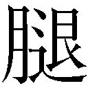
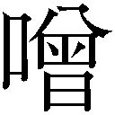

| とある飛空士への誓約 03 | |
| 犬村小六 | |
| 小学館 (2013) | |
小学館ｅＢｏｏｋｓ
とある飛空士への誓約３
犬村小六
イラスト 森沢晴行
主な登場人物
［坂上清顕（さかがみ・きよあき）］
エアハント士官学校三回生。
［ミオ・セイラ］
エアハント士官学校三回生。
［イリア・クライシュミット］
エアハント士官学校三回生。
［ライナ・ベック］
エアハント士官学校三回生。
［セシル・ハウアー］
エアハント士官学校二回生。
［紫かぐら（むらさき・かぐら）］
エアハント士官学校四回生。
［バルタザール・グリム］
エアハント士官学校四回生。
［坂上正治（さかがみ・まさはる）］
飛曹長。坂上清顕の父。秋津連邦のかつての撃墜王。
［カルステン・クライシュミット］
大尉。イリアの父。坂上正治との一騎打ちで右腕を失う。
［アクメド］
空中傭兵部隊「ワルキューレ」を率いる聖騎士。
［カーナシオン］
ウラノスの超エース級飛空士。ノーズアートは黒豹。
［ゼノン・カヴァディス］
ウラノス外務尚書省次官。
十八．
見上げれば空は、分厚い岩盤に成りはてていた。
つい先刻まで澄み切った十月の空だったものはいま、視界の限りにごつごつした岩肌の起伏を打ち出し、燃え上がる地上へ鈍色の圧迫を加えている。
岩肌の下部から伸びる、全長五百メートルを超える方向舵が大気の乱流を切り裂く。周縁に据えられた推進装置の駆動音が空域をどよませる。轟音がねじ曲げる空間のただなか、砕け散った飛空機械の鉄片が、青銅色の粉雪みたいに燃え上がる地上へ降り注ぐ。
炎は消えない。鉄の雪を食らうほどにその勢いを増していき、天に蓋する岩盤を下方から焚きあげる。
地表と岩盤に挟まれた狭い空間は、炎と粉塵と機械の破片と、逃げ惑うひとびとの悲鳴に充ち満ちていた。いきなり天空を奪われ、街を破壊されて、燃え上がった我が家から飛び出し、どこへ行けばいいのかもわからないままひとびとはただ炎熱地獄を彷徨うのみ。
帝紀一三三八年、十月、クレフェルト公領カラナクタ島──。
ミオ・フローレスは地に両膝をつけ、両耳に両手を当てて、空にむけていた瞳を眼前の瓦礫の山へ戻した。
この光景の意味を理解できない。
フローレス家は今日も、平和な朝を迎えたはずだった。
商社勤めの父と、優しい母に囲まれ、ひとり娘のミオはギムナジウムへの登校の支度をしていた。今年で八歳になり、下級生もできた。ジャムパンをホットミルクでおなかへ落とし込んで、両親に行ってきますを言って家を出た次の瞬間、我が家が木っ端微塵に吹き飛んだ。
それから飛空機械の群れが全天を覆った。
銀鼠色の飛空機と、濃緑色の飛空機が互いに入り乱れ、激しく銃火を交わし、やがて銀鼠色の機体だけが空に残った。
爆弾が雨みたいに降ってきて、飛行場を、防空施設を、市街地をまたたくまに焼き払った。
変わらないはずの平穏はわずか数瞬にして、死と火焰と破壊に塗りつぶされていた。
「だめだ、カルキノスだ！」「飛空要塞がなぜこんな辺境へ!?」「クレフェルト公は終わりだ、みんな逃げろ！」
大人たちが口々にそうわめき立てていた。ミオは思考することさえできず、両親が埋もれた瓦礫の前にいつまでも座り込んでいた。
やがて世界は、真昼なのに真っ暗になった。
推進装置の轟音を曳きながら、巨大な空飛ぶ島が頭上を覆い尽くしていた。
ウラノス第九飛空要塞「カルキノス」。
先ほど大人たちが叫んでいたその言葉がミオの脳裏をわずかにかすめた。
住み慣れた街が炎に覆われていく。頭上の飛空要塞は逃げ惑う地上の民を観賞するように、高度二千メートルに鎮座したまま動かない。
ミオは逃げることもせず、ただ早くこの夢から覚めることだけを祈りながら、いつまでも瓦礫の山を眺めていた。
それからの記憶がミオにはない。
誰かのわめき声が間近から聞こえて、見たことのない軍服を着込んだ兵士に無理やりに抱き上げられ、幌付きトラックの荷台に乗せられた気がする。
思考することもできないまま、知らない荒れ地でトラックから降ろされ、銃を持った兵士たちに追い立てられて、周囲をフェンスで囲まれたプレハブ小屋に収容された。
空から飛空要塞は消えていた。代わりにハイデラバード陸軍の兵士たちが島へ上陸し、カラナクタ島の主要施設をあらかた占拠してしまっていた。
生き残った大人たちはほとんどが、ハイデラバード軍に銃で脅されて、プレハブが密に建ち並んだこの隔離地区へ収容された。
シルヴァニア王家に委任されてカラナクタ島を治めていたクレフェルト公は捕らえられ、ハイデラバード連合共同体首都へ連行されてしまった。ハイデラバード議会を支配するオルグ党党首ディジー・オズボーンはシルヴァニア王家の所有するすべてを接収するつもりでいる。クレフェルト公の運命はすでにして決していた。
収容所の大人たちは日中の労働を終えると、いつまでもそんな話をしていた。ミオも否応なく、これが悪夢ではなく現実であることを認識するしかなかった。収容所のなかに両親のすがたを捜し求めたが、消息を知っているひとさえいなかった。
風呂にも入れず、手足も泥にまみれて、同い年の友達も、知り合いも、収容所にはひとりもいなかった。ミオの住んでいた地区は爆撃の被害が激しく、ミオが生き残っていただけでも奇跡的だった。
希望はどこにもなかった。死にたいと思った。
──死ねば、パパとママに会える。
そう決めたとき、収容所の所長に呼ばれた。
ミオとの面会を希望している男性がいるという。
──パパだ。
喜びを全身に映して駆け込んだ所長室で待っていたのは、身なりのよい、五十代くらいの見知らぬ男性だった。
「大きくなったね、ミオ。もう八歳か。わたしを覚えているかな」
いかにも親しげに、男性はそう話しかけてくる。しかし会った覚えはない。失望と不安で身を縮ませるミオに、男性は優しく微笑んだ。
「無理もない。会ったのはきみがまだ三歳のころだ。お父さんとお母さんは残念だったね、穏やかで親切なひとたちだった」
イーサン・セイラと名乗るその男性は、ミオの祖父の弟の息子、いわゆる遠縁の親戚なのだそうだ。祖父に会ったのは一度か二度で、親戚付き合いもそれほどなかったため、イーサンの言うことが本当なのか、ミオには確かめようがなかった。
「これからのことは心配しなくていい。うちにはきみと同じような境遇の兄弟がたくさんいるよ。大丈夫、すぐに仲よくなれるさ、ここよりもずっといいところだ」
どうやらイーサンはミオを引き取ってくれるらしい。所長のイーサンに対する態度を見る限り、かなり身分の高いひとのようだ。いつも威張り散らしている所長が、イーサンの言葉にはいちいち愛想よく頷いたり、おべっかを使ったり、あげくの果てにミオをおだてたり、ご機嫌取りに余念がない。
「来てくれるね、ミオ？」
目尻の皺に親切さをためて、イーサンはそう問いかけてくる。
父母を失い、知り合いもおらず、ただ死ぬことを願っていたミオは、選択そのものを放棄した。なにかを考えることさえしたくない。イーサンの瞳を見つめたまま、ミオは黙って突っ立っていた。このひとが本当に親戚なのかどうかも怪しいし、もしかしたら人買いかもしれないが、自分の運命への興味さえもこのときのミオは失っていた。
ミオは収容所を離れ、飛空機に乗ってイーサンと一緒にハルモンディア皇国へと赴いた。途中、大きな低気圧に遭遇したが、非常に腕のいい飛空士が巧みに雲の切れ間を読んで切り抜け、無事に目的地へ到着した。イーサンはセントヴォルト帝国の外交官をしており、現在はハルモンディアに駐在しているとのこと。連れられた先で待っていたのは、夢のような生活だった。
素敵な兄と姉、かわいらしい弟と妹がミオを待っていた。みんな血のつながりはなかったが、いちように容姿が美しく、頭がよくて、性格も従順で穏やかだった。セイラ夫妻に実子はなく、みな、世界各地で身寄りをなくした子どもたちをイーサンが足を運んで拾い上げてきていた。
「神さまが、きみたちをわたしに届けてくれたんだ」
イーサンはそう言ってよく笑っていた。養母グレタはつつましくしとやかな女性で、多すぎる養子たちを我が子のようにかわいがってくれた。
ある日突然両親を失って、故郷を焼かれ、収容所で死を覚悟していたはずが、いきなり賑やかな兄妹に囲まれて、裕福な家へ連れてこられ、ミオはずっと戸惑っていた。兄妹はみんな優しくて、塞ぎがちなミオの手を取って一緒にゲームに誘ったり、ピクニックに出かけたり、積極的に家族として受け入れようとしてくれた。新しいギムナジウムにもセイラ家の兄妹のおかげですんなりと馴染むことができ、毎日パーティーを開催しているように賑やかで、夕食のあとはくたくたになってすぐ眠るくらいによく遊んだ。
そうした日々を過ごすうちに、両親を失った悲しみが薄らいでいくことがミオにはわかった。
自分が薄情な人間に思えて、ミオは毎晩眠る前に、本当の両親の顔を瞼の裏に思い描くことにしていた。自分が親を忘れてしまってはかわいそうすぎる。そう思って、ミオは悲しみにすがりついていた。この痛みと悲しみこそが、時間とともに薄れゆく両親の記憶そのものだった。裕福な家庭に引き取られて、どんなに華やかな生活を送らせてもらっても、ミオのこころはなかなかひらかなかった。
セイラ家へ来てから二年が経った、冬の夜。
ベッドにもぐりこんだものの寝つけなくて、ミオはなんとなく階下のリビングへと降り、安楽椅子に腰かけて暖炉にあたるイーサンの背を見た。
そのとき突然、出どころのわからない悲しみがこみあげてきた。特に意味もないまま、泣きたくてしかたがない。ミオはイーサンに歩み寄って、その膝にもたれかかった。
「どうしたんだい、ミオ？」
読んでいた本をサイドテーブルに戻して、イーサンは優しく問いかけてくる。ミオはイーサンの両に自分の両手を置いて、そこへ顔を埋め、しくしく泣いた。
イーサンは黙って背中をさすってくれた。涙が収まってから、ミオは顔を上げずに問いかけた。
「どうしてあたしを拾ってくれたの？」
「いつも言っているだろう。神さまの思し召しだよ。わたしの信仰に聖アルディスタが応えてくださったのだ」
「そうじゃなくて。かわいそうな子なら世界中にいっぱいいるじゃない？ そのなかでどうしてあたしなの？」
「ほう。それが気になるかね」
「うん」
イーサンはミオの頭を撫でた。
「賢い子だね。まだ十歳なのに。思った以上だ」
「頭がいいから拾ったの？」
「いい子だとわかっていたから、だよ。学校の勉強もよくできていたし、性格も明るくて素直で、みんなの人気者だ。それにミオのご両親がアルディスタ統一教の信徒だったことも大きい。ミオも聖アルディスタは大好きだろう？」
「うん。聖アルディスタはいつもともにいてくださるよ」
「そういう、たくさんの条件を知っていたからミオをうちに連れてきたんだ。ミオがこのまま収容所で死んでしまうのは不憫すぎる、きちんとした環境に連れてきてあげれば、もっとミオの可能性が広がっていけるはず......そう思ったからね」
「あたしのことを、調べたのね？」
「ありていに言えば、そうだ」
「パブリタも、ヤンも、カルメンも？」
ミオは仲のいい兄妹の名前をあげて尋ねた。イーサンは微笑む。
「みんなそうだよ。たくさんの可能性をもった子どもたちに、世界へ羽ばたく機会を与えてあげたい。わたしたち夫婦には子どもができないから、きみたちが立派な大人になってくれることが、わたしとグレタの生きた証になるのさ」
「生きた、証......」
ミオはその言葉を口の中で転がしてみた。本当の両親の生きた証がいまの自分であると同時に、イーサンとグレタにとっても、ミオの存在が生きた証なのだ。
──ふたつの両親の生きた証が、あたしなんだ。
そのことを受け入れて生きていこう。そうしたらきっと、ふたつの両親は喜んでくれる。ミオはそう決めて、それから思いきって、いままでずっと尋ねてみたかった質問を口にした。
「ねえ」
「うん」
「パパって呼んだら、怒る？」
イーサンは安楽椅子から腰を下ろして、床に片膝をつき、ミオを抱きしめた。
背中に回された大きな両腕から、愛情が伝わってきた。
「パパ」
ミオは名前を呼んだ。
「ミオ」
「パパ」
「愛してる」
「あたしも」
イーサンの腕のなかで、ミオは二年間抱え込んでいた悲しみが溶けていくのを感じていた。
このひとがわたしの父親で、ここがわたしの家なんだ。
ミオはそのことを受け入れた。
次の日から、ミオ・セイラはほかの兄妹と一緒に、セイラ家の一員として振る舞った。
明るく元気で賢いミオは、ますますみんなの人気者になっていった。
セイラ家はとても裕福で、毎週のように園遊会や社交場に出かけ、月に一度は自宅でパーティーを開催した。訪れるのは上流階級のひとびとばかりで、彼らの子どもたちと遊んでいるうちに自然にマナーや立ち振る舞いが身についた。
ミオの生まれ育ったカラナクタ島はシルヴァニア王家の支配下にあったため、ミオはシルヴァニア風の言葉遣いや作法に慣れ親しんでいて、それが珍しがられた。ハルモンディアの子どもたちの知らない宮廷作法を披露するだけで人気者になれるため、ミオはこっそりとシルヴァニア王家のことを本で勉強して、みなの前でまるでシルヴァニア王女エリザベートのように振る舞ってみせたりもした。そうすると大人たちまでが褒めてくれて、ミオはまるで自分がお姫さまになった気分だった。
幸せだった。
時が流れるにつれて悲しみは癒えて、セイラ家のひとびとがミオにとってかけがえのない家族になっていった。
自分が恵まれていることを自覚して、両親に感謝し、兄妹みんなに感謝し、この人生に感謝した。いつか両親に恩返しできる人間になりたいと強く願った。
──パパがあたしを助けてくれたように、いつかあたしも、パパの役に立ちたいな。
幸福なハルモンディアでの生活は、十二歳の夏に終わった。
イーサンは秋津連邦領メスス島オデッサへ転勤することになり、ミオは都会を離れて辺境の島で新しい学校に通うことになった。せっかくできた友達との別れが悲しくて、ふてくされて降り立ったオデッサの地で、ミオは同い年の坂上清顕と出会うことになる。
時は流れて──。
「パパってば転勤ばっかりよねー」
これまで一度も訪れたことのない空港へ降りたち、鳥かごに入れたフィオを片手に、十七歳のミオ・セイラは北多島海最大の島、クロスノダールの風景を眺め渡してため息をついた。
帝紀一三四七年、十二月下旬、クロスノダール首都、ルブラ──。
エアハント士官学校の冬期休みを利用して、ミオは両親に会うためにこの地を訪れた。
空港には浅黒い肌をした現地人に紛れて、白い肌のセントヴォルト人のすがたも多く見受けられる。クロスノダール人民政府が統治する立派な独立国であるのだが、島内全域に常駐しているのはセントヴォルト軍だ。同盟軍であることを名目に、陸・海・空、すべてにわたって実質的にセントヴォルト軍が島を防衛している。特徴的な黄緑色の迷彩服に身を包んだクロスノダール軍人のすがたも申し訳程度に地上に見受けられるが、島内警備を主任務にしており防衛任務には就いていないという。
──自国に他国軍を常駐させて、独立国といえるのかしら？
実家へむかう二頭立て馬車の車窓からクロスノダールの景色を眺めながら、ミオはそんな疑念を抱いた。きっと、そう言ってもいいのだろう。貧しい国にとっては防衛費に懐を痛める必要がなく、貴重な予算を投資へ回せる。その代わりセントヴォルトの言いなりになるしかないが、オルグ党が支配するハイデラバード連合共同体に組み込まれるよりはマシ、という判断なのだ。ウラノス人の血をひくオルグ党党首、ディジー・オズボーンの狂気に支配されたハイデラバード連合共同体は南北多島海を我が物とすべく、いまこのときも虎視眈々とクロスノダール島を狙っている。
──生き残るためにはしかたない、か......。
いまの世界は強い国家が弱い国家を踏みにじってその持ち物すべてを掠奪しても、誰も裁くことができない。弱者の泣き言など一顧だにされず、ただ弱かったという一因だけで国家や民族そのものが滅びることも珍しくない。
この世界では、弱いことは悪なのだ。
滅びるのがいやなら、強くなるしかない。プライドをかなぐり捨てたクロスノダールの在り方は、弱者が生き延びるためのやむをえぬ知恵であろう。
馬車はほどなくして外国人居住区へ入っていった。
木造の古びた街並みがきれいさっぱりと消え去って、見慣れたセントヴォルト風の白い建築物が現れる。発展途上の島だからセントヴォルト通貨「ペセス」の威力は絶大で、いずれ劣らぬ白亜の豪邸が道行く先で甍を競う。クロスノダール政府がどう体面を取り繕おうとも、この島の景観は完全にセントヴォルト帝国の植民地だった。
見晴らしのよい、山の手の大豪邸の前で馬車は止まった。実家が手配した御者にチップを払い、鳥かごを片手に提げて、ミオはセイラ家の新居を呆れ顔で眺め渡した。
ハルモンディアでもメスス島でも豪邸に住んではいたが、今回のこれは以前にも増して壮大な規模だ。まるで王侯貴族でも住んでいそうな、左右に翼屋まで配置した三層の建物。
すると蔓草の透かし彫りがされた門扉がひらいて、馬車音に気づいた弟と妹たちが満面の笑みを浮かべて抱きついてきた。
「お姉ちゃん!!」
「わっ」
十三歳の四女ボニタ、十歳の三男カズキ、七歳の末っ子、四男ドミニクが我先にミオに抱きついて離れない。
「こらこらっ！ わかった、わかったから離れなさい！ 苦しいってば、あと痛い！」
ミオは顔を歪めていやがるが、大好きな姉に久しぶりに会えて、弟妹の興奮は収まらない。
「ミオおかえりっ！ 寂しかったよ、ミオ、もういかないで！」
なかでも甘えん坊のドミニクは、その真っ黒な顔をミオの胸に埋めてきつくすがりつく。イーサンが南海の孤島から拾い上げてきたちりちり頭を片手で撫でながら、ミオは困った笑みを浮かべる。
「ドミニク、力が強くなってる！ やっぱり男の子だねー。だからちょっと放して......」
「ぼくも、ぼくも撫でてっ」
ドミニクだけが撫でられるのが面白くないらしく、隣のカズキがミオに抱きついたまま坊主頭を突き出してくる。残った手でカズキの頭を撫でながら、ミオはボニタに話しかける。
「ボニタ、元気だった？ カズキにいじめられてない？」
妹のボニタはミオの背へ回していた手をほどいて、笑顔を持ち上げる。
「大丈夫！ ミオ、きれいになったね！ 清顕も大喜びでしょ？」
「ちょっと、なに言ってんの。それよりこれどうにかして......」
赤面しながらようやく弟たちを引き剝がした。それから鳥かごをあけて、フィオを空へ解き放つ。
「フィオも元気だーっ」「ぼくのソドムとケンカさせようよ！」
ドミニクは自分の飼っている鳥に「ソドム」と名づけてかわいがっている。兄妹にはペットとしてそれぞれ一羽ずつ鳥が与えられるのがセイラ家の風習だ。ミオは顔をしかめる。
「やめてよ、フィオも疲れてるんだから。パパとママ、うちにいる？」
「ママがいるよ。パパは急に誰かに呼ばれて出てっちゃった。最近いっつも、夜遅くまで帰ってこないの」
「へー、そう。相変わらず忙しいんだねー。久しぶりだし、なにか作って食べさせてあげたいけど」
「ママがいっぱいお料理作ってるよ！ ミオはなんにもしなくていいから、ぼくと遊んで！」
右手にドミニクが、左手にカズキがまとわりついて離れようとしない。ミオは苦笑いしながら、壮麗すぎる新居へ入って母親へ帰郷の挨拶をした。
父イーサンが帰ってきたのは、午後九時を回ったころだった。
はしゃぎ回るカズキとドミニクにつき合わされてへとへとのミオだったが、久しぶりに父の顔を見て笑顔が浮かんだ。
「パパ、ただいま。遅くまでお疲れ様でした。なにか食べる？」
「おかえり、ミオ。もう食べてきたよ。久しぶりに帰ってきたんだ、ゆっくりしていなさい」
イーサンは腕を広げてミオを抱きしめる。ミオもその胸に顔を埋め、久しぶりに父の葉巻とポマードの香りを嗅いだ。
「見違えたね。士官学校の訓練のおかげかな。ずいぶん凜々しくなった」
イーサンは優しくミオの頭を撫でる。声はいつものように穏やかだが、なんだか以前よりも佇まいに元気がない。
──パパ、老けたなぁ......。
そう思ったが口には出さず、ミオは妹と弟たちを寝かしつけ、湯浴みを終えてリビングに戻った父のグラスへブランデーを注いだ。
ようやくセイラ家に静けさが訪れていた。ランプシェードの柔らかい橙色が、ミオとイーサンを包み込んでいた。
父とふたりきりになるのも久しぶりだった。心地よい静寂にひたりながら、ミオは話しかける。
「パパ、疲れてる？ 大丈夫？」
「そう見えるかね」
「なんとなく。元気ないなー、くらいには。仕事忙しいの？」
「......そうだね。とても忙しい。こういう時期だから」
ガウンすがたのイーサンはなぜかもの悲しそうにそう答えて、グラスを弄んだ。氷が琥珀色のうちへ崩れて澄んだ音を立てる。
「......休むわけにもいかない。責任の大きな仕事だ。この島は我がセントヴォルト帝国が南多島海へ降り立つためのの昇降口でね。戦略における最重要拠点のひとつだ。大使のやるべき仕事は、他国の何倍も多い」
今回、イーサンはセントヴォルト大使としてクロスノダールへ赴いている。セントヴォルトの代表としてクロスノダール政府首脳や軍司令官等々、権力の中枢に直接会って幾多の交渉ごとを取り決めていくその役割はきっとミオの思う以上に過酷なのだろう。皺の増えた父の目尻が、ミオの胸を締めつける。
──いつか、パパの役に立ちたいな。
切実にそう思う。
ミオがいまこうして幸せに暮らしているのはすべて、イーサンのおかげだ。
イーサンに出会わなかったらきっと、あの収容所でやせ衰えて死んでいただろう。
この人生をくれたことへの恩返しをしたい。
──ミオを拾ってよかった、と思ってほしい。
「わたしに手伝えることがあるといいけど」
なんとなくそう言うと、イーサンは力なく微笑んだ。
「ミオはいい子だね」
「だって。パパが過労死したらイヤだし」
すると、まるでその言葉を待っていたかのように、イーサンはソファーに座り直し、真摯な目線をミオへむけた。
「......実は頼みごとがあってね。ミオに会ってほしいひとがいるんだ」
「............？」
「三日後、うちへ来るのだが、予定は大丈夫かね」
「な、なに、いきなり。誰なの」
「......大事な取引先だ」
「偉いひと？」
「......あぁ。かねてから先方の思し召しでね。今回きみが帰郷すると聞いて、わざわざ遠方から訪ねてこられる」
「な、なにそれ。わたしに会いにくるの？ ......そ、それってもしかして、あの、なんていうか......あの......個人的なやつ？」
「お見合いじゃない。既婚のおじさんだよ。純粋な仕事の話だ。会ってくれるね？」
珍しく、有無を言わせぬようなイーサンの物言いだった。ミオはやや気圧されながらも、頼りなく頷く。
「......パパ、大丈夫？ ちょっと様子が、いつもと違うみたいだけど」
「......そうかな。......そうかもしれない。......こういう時代だからね。......娘の力を頼らざるをえないこともある」
「わたしを......頼る？」
「......父親として不甲斐ない話だが。ミオにしかできない仕事なのだよ。それも......決して愉快な仕事ではない」
どうやら使者が運んでくるのは深刻な話のようだ。こんなにやつれてもの悲しそうなイーサンを見たことがない。
どういう内容なのかはわからない。けれど父の様子を見る限り、きっとそれなりに面倒なことだろう。
不穏な予感を抱いたけれども。
──わたしにしか、できない仕事。
それはうれしい響きの言葉だった。ミオは微笑んだ。
「わたし、パパの役に立てるのね」
「........................」
「子どものころからずっと、もらってばっかりだったでしょう？ わたしもパパになにかしてあげられるようになれた、ってことかな」
「ミオ......」
ソファーの後ろに回り込んで、大好きな父に後ろから抱きついた。
「大丈夫。なんでもするよ。パパのおかげで、いまのわたしがいるんだから。パパに会えたからこんなに幸せなんだもん。やっと少しは恩返しできるんだね。うれしいな」
イーサンはミオの腕を愛おしそうにさすった。
「......つらい役目だよ」
「エリアドールのあれに比べたらなんてことないよ。一応これでも叙勲されてるんだから。エアハントの日課もきついことばっかりだし、慣れてる。おかげさまで娘はたくましく育ちましたから」
冗談めかしながら、ミオは父の髪の毛に頰をつけて目を閉じた。
「ミオ」
「うん」
「きみの幸せを、いつも祈っている」
「知ってる。わたしもパパがずっと元気でいられますように、って祈ってるよ」
親子は互いのぬくもりを感じながら目を閉じた。
こころの奥から湧いてくる温かさに身を委ねて、ミオはただ、父への感謝と家族の幸福だけを祈っていた。
三日後──。
ふたりきりで会いたい、という先方の要望を受けて、ミオは流行の袖をしぼったアフタヌーンドレスを着て、白のショールを羽織り、指定された王立公園のデッキチェアに腰を下ろして来訪者を待っていた。
ずいぶん変わった客であることは確かだ。弟や妹とは顔を合わせたくないのかもしれない。ここは王宮の客を招いて園遊会などがひらかれる、上流貴族専用の公園だ。馬車でゲートをくぐるときも入念なチェックが施され、あらかじめ父に手渡されていた通行証も偽造でないか穴があくほど点検を受けた。公園内にはミオのほかに誰もおらず、冬枯れの並木道が寒々しく銀光りしている。
と、二頭立ての馬車がその寂しい舗装道を通ってきた。
からからと車輪音が近づいてきて、目前で止まった。
降りてきたのは、品のいいグレーのスーツに上下とも身を包んだ、四十代半ばほどの男性だった。ミオを認めるとにこやかに笑いながら歩み寄ってくる。
スーツの上からでもわかる引き締まった体軀に、清潔な銀色の短髪。縁なし眼鏡の奥には人なつっこさそうな、穏やかな笑みをたたえている。
ひとめ見て、ミオはなんだかほっとした。
昨日の父の態度や、いかにもうさんくさいこの待ち合わせ場所から、かなり怪しい人物が来るのではないかと身構えていたが、現れたのはいかにもお人好しで無害そうな男性だ。
「ミオ・セイラさんですね」
男性は快活そうにそう言って、帽子をとって一礼した。ミオが礼式どおりに右手の甲を差し出すと、跪いて手袋の上から口をつける。
「ハルモンディア皇国外務省補佐官、ゼノン・カヴァディスと申します。今日は大変に恐縮です、急な話で驚かれたのではないですか？」
「いえ、退屈しておりましたので。ハルモンディアの方ですのね。言葉遣いがなつかしいですわ」
ゼノンのセントヴォルト語からは確かに、ハルモンディア人に特有のなまりがあった。そのこともなんだか警戒を解かせる。
「散策しながらお話しさせていただきたいのですが」
「構いませんわ。いいお天気ですもの」
ミオは腰を上げて、日傘を片手に、ゼノンと連れだって午後の並木道を歩いた。
ゼノンはイーサンがハルモンディアに赴任していたときからの社交仲間で、懇親目的のトランプ会やワイン品評会などでよく一緒になるという。もう十年以上も付き合いがあり、ときには互いの情報を交換して国益に役立てることもあるそうだ。
「とにかくひとに会うのがわたしの仕事でして、何年もやっているとだんだん、他人との壁のようなものに無頓着になってくるんです。少し馴れ馴れしいとお感じになるかもしれませんが職業病ということでご容赦ください」
にこにこ笑いながら、ゼノンはそんなことを言う。たしかに気さくで話しやすい雰囲気のひとだ。穏やかなリズムに乗って、さまざまの表現を上手に使いこなすゼノンの話術は、聞いていて珍しく、勉強になり、同時に楽しいものだった。
「外交官の仕事というのは、とにかく任地での人脈を得ることです。時間は必ず守り、一度パーティーで会ったすべての要人の顔と名前を覚え、それぞれの国家の事情を把握しておき、会話に役立てる。なにしろ様々な国の方々と交流しますから、万が一にも失礼のないように、ときには相手の家庭事情まで調べてからお会いすることもあります」
「大変ですのね。父も毎晩遅くまで働いています」
「お父君は非常に優秀な方ですよ。わたしはハルモンディアの外交官であり、本来イーサン氏とは相容れない立場ではありますが、人間として尊敬しています。たとえ国家が敵対していても、ひとりの人間同士としての交流は可能ですから」
ゼノンの言葉が、ミオにはうれしかった。ハルモンディアとセントヴォルトは国としては長い紛争の歴史をもつが、それにもかかわらずふたつの国の外交官同士が信頼しあっているのは素晴らしいことだと思えた。
「素敵ですね。国家同士もそんなふうに、お互いを信頼して仲よくなれるといいのですけど」
なにげなくそう言うと、ゼノンも微笑んだ。
「まずは個人同士がつながらなければ、国家間に平和をもたらす大きな動きにはなりえない。わたしたちはもっと協力し合うべきです。そう思いませんか？」
仕事の話だ、とミオは直感した。内容はわからないが、父が関わっている以上、平和的な目的であるはず。
「おっしゃるとおりです。わたしにも、なにかできることがあるといいのですが」
「さすが、イーサン氏のご息女ですね。お話の前に、まずはあの階段を上りましょう。少し長いですが」
促されるまま、公園の西端、切り立った小山の傾斜を登り、高台へ出た。砂利の細道を少し歩くと、展望台に行き着く。
標高は百メートルほど。ミオはクロスノダールの街並みを見下ろして、心地よい風を胸の奥へ吸い込んだ。
「素敵な場所ですね」
外国人居住区の赤い屋根のむこうに現地人たちの暮らす木造家屋のトタン屋根が密集していて、そのむこうは海だった。きららかな白波には地元のひとびとが漁に使う小型帆船が多く浮かんでいて、そのさなかにセントヴォルトの海防艦や輸送船の艦影があった。軍艦さえなければ素朴な島民が貧しくも平穏な日々を送る、辺境のさびれた漁港にすぎない。
「もうじき、ここにも戦火が訪れるでしょう」
ゼノンはぽつりと言った。それはミオも覚悟していることだった。
「ウラノス、ですか」
「はい。彼らはオルグ党を介してハイデラバード連合共同体の実権を握り、多島海全域の制圧を狙っています」
「......恐ろしい話です。彼らさえいなければ、世界は平和だというのに」
「本当に、そう思いますか？」
「......？」
「ミオさんは、ウラノスがいなくなれば世界は平和になるとお思いですか？」
穏やかな笑みを崩さないゼノンの横顔を、ミオは凝視した。
瞼の裏に、まだ焼きついている。
天空を覆い尽くした岩盤。我が家に埋もれた実の両親。そして、メスス島への侵攻。
優しかった清顕の両親と姉を殺し、友人たちを殺し、あの美しいメスス島を炎上せしめた憎すぎる敵、空の一族。
論をまたない。
「......当たり前では？ 世界に戦争の種をまきつづけ、罪もないひとびとを殺し、地上を空から統べることを企んでいます。彼らがこの世界の混乱の原因ではありませんか」
「ウラノスを認識していない地域も、この世界にはあるのですよ。聖泉のむこうに存在する、彼方の国家群の名をあなたはご存じですか？」
「........................」
ミオは言葉を呑んだ。この世界の真実のすがたはまだ解き明かされていない。これまで幾多の艦隊が世界の真実を解明すべく旅立っていったが、途中で逃げ戻ってくるか、行ったきり帰ってこないかのいずれかだった。
聖泉、という言葉は伝説のなかで聞いたことがあるだけだ。実在は確認されていない。ゼノンの口ぶりはまるで、伝説の泉と未知の大陸の存在を認識しているかのよう。
「あなたは知っていると？ まだ誰も見たことのない国家の名前を」
ゼノンはミオへ顔をむけ、ますます温厚そうににっこりと笑う。
「それはもう、幾多の国家があります。バレステロス。斎ノ国。ベナレス。レヴァーム。天ツ上。ソルバローザ。カイ・アンドロス。紅萊。......そのほか諸々。いずれもあなたがたと同等の文化をもつ先進的な国家群ですよ」
どんな文献にも載っていない、これまで耳の端にもかかったことのない名前だ。しかしうそにしてはゼノンの言葉は堂に入りすぎている。まるでこれまで何度も第三者へむかい、同じ問いと答えを繰り返してきたかのように。
「......わたしがハルモンディアにいたころも、聞いたことのない名前ですけれど」
「それはそうでしょう。ハルモンディアの誰ひとり、この事実を知りませんから」
ミオはゼノンの笑みを見据えた。
底知れない恐怖がいきなり、腹の底から湧き上がってきた。
──このひと、ハルモンディア人じゃない。
「......あなたは、なにものですか」
「しがないハルモンディア外務省の一補佐官です。ただ普通の役人よりは情報収集に熱心でして。一般人の知らない情報も、多少は手に入っています」
うそだ。
直感が、そうささやく。
「話を戻しましょう。聖泉の彼方にはウラノスを知らないひとびとが住まい、そして互いに争っている。多島海と同じく、もしくはそれ以上に凄惨な戦闘が繰り広げられています。ウラノスがいようがいまいが、ひとは争いをやめられない。違いますか？」
「........................」
「戦争の原因はウラノスではなく、破壊兵器の大量生産、それに伴う慢性的な資源不足です。さらに踏み込むならば、他者から収奪することによりおのれが肥えようとする人間の未熟な意識が戦争を発生させている」
ゼノンは論文を読み上げるような口調でつづける。
「聖アルディスタは愚かな人間たちが必要な意識レベルへ到達するまで互いに出会うことのないよう、大瀑布という恩寵をくださいました。しかし飛空機械の進歩はついに大瀑布の航過を可能にし、未熟な人間同士を出会わせてしまった。はじめて互いを認識したとき、彼らがしたことは抱擁ではなかった。異なる肌の色をもち、異なる言語を話す未知の民族へむかい、まずは銃口をむけて脅しつけたのです。そこにウラノスはいなかった。すべて地上の民同士がやったことです」
これはゼノンの言うとおりだ。セントヴォルトと秋津連邦が大瀑布を越えてはじめて出会ったおよそ六十年前、国力に優るセントヴォルトがまずしたことは、秋津連邦の資源収奪を目的とした不平等条約の締結だった。それが現在までつづく多島海の遺恨として残っており、数百万人の若者の血が無益に流される原因となった。
そこにウラノスはいなかった。
ウラノスが現れてハイデラバード連合共同体と結びつき、多島海制覇にむけて動き出したのはここ十数年内の出来事だ。ウラノスさえいなくなれば世界は平和になる、という理屈は確かに安易さを指摘されても反論できない。
「汝の隣人を愛せよ、とされた聖アルディスタの教えは忘れ去られた。隣人は傷つけ合うことをやめられない。ならば誰かが血を流しながら止めるしかない。無益な戦争を我々の世代で終わらせ、平和と友愛の未来を次代へ伝えていくために、聖アルディスタの教えを最も純粋に保存する、絶対的な存在が世界を統べる必要がある」
「......それがウラノスだと？」
「ほかに誰ができます？ セントヴォルトに、秋津連邦に、ハルモンディアに、ウラノスに比肩するほどの遠大な理念がありますか？ 下段の民にできることは目の前にぶらさがった に我先に飛びつくことです。他人を押しのけ、踏みにじり、おのれだけがを食いあさろうとする浅ましい欲求を、外交の仮面で覆い隠しているにすぎない。国境線に互いを隔てられた地上民の限界がそこにあります」
に我先に飛びつくことです。他人を押しのけ、踏みにじり、おのれだけがを食いあさろうとする浅ましい欲求を、外交の仮面で覆い隠しているにすぎない。国境線に互いを隔てられた地上民の限界がそこにあります」
「........................」
「空に国境がありますか？」
「......いいえ」
「地上はあまりにも血にまみれてしまった。長い闘争の歴史のなかで積み重なった恨みと憎しみが晴れる日はこないでしょう。天空から統治するのが最善なのです。人種を超え、言語を超え、国境を越えて、この星を聖アルディスタの教えのもとに統一しうるのは、境界のない空に住まうウラノスだけなのです」
ゼノンは穏やかな微笑みを保ったままこんなことを言う。そして言っていることが論理だってもいる。
けれど。
「まるでウラノス人のようにお話しなさいますのね」
ミオは翡翠色の瞳を、ゼノンに突き立てる。
ゼノンの微笑みは崩れない。ミオも負けじと微笑みを保ったまま、言い返す。
「おっしゃるとおり、地上の民はウラノスがいようがいまいが争いをつづけるでしょう。そしてウラノスは複数の国家に空軍力を貸与して、戦争の災禍をまき散らし、助長させ、深刻化させている。理念とおっしゃいますが、地上の民と大差ないどころか、ウラノスのそれはさらに悪質なものでは？」
感情を混ぜることなく、微笑んだままひといきにそう言うと、ゼノンは喉の奥でわずかに唸り、瞳をさらに優しそうに輝かせた。
「なかなか聡明ですね。普通の十代の少女であればまともな反論もできないはずですが」
「エアハントでは生徒間のディベートも盛んに行われておりますの」
「攻撃的論理は重要ですよ。時と場合によれば、国家間の命運を左右することもあります。......それはともかく。天空から地上の戦争を一掃するためには、まずは管理することからはじめねばなりません。なにごとにも段階というものがあります。ウラノスが空軍力を貸しだすのは、未来の新しい秩序に貢献できると見込んだ国家群のみ。血にまみれすぎた旧来の国家と手を結ぶことはありません。それもまた理念です」
「その理念をお聞きする限り、天空の民も地上の民と大差ないように見受けられますけれど」
「イーサン氏も手強いお嬢さんを育てられたものだ。そろそろ本題に入りましょうか」
「はい。お待ちしておりました」
「いま、この世界の在り方が正しいと思いますか？」
「いいえ」
「一刻も早く無益な戦争を終わらせたいと思いませんか？」
「思います」
「ならば、わたしたちとミオさんは同じ思いを共有しています。わたしたちは同志になれる」
「わたしたち、とは？ ハルモンディアのことではないようですけれど」
「言ったとおりです。わたしたちは地上の国境線に囚われない存在であると」
「........................」
ミオはゼノンの変わらない笑顔を睨みつけた。ゼノンは朝の挨拶のようななにげない口調で正体を明かす。
「ウラノスにはあなたが必要なのです、ミオ・セイラ。これ以上、戦争の惨禍による不幸な子どもを増やさないために。一日も早く、地上に平穏をもたらすために。空の一族の血脈に加わっていただきたい」
こみ上げる怒りが、ミオの髪の毛を逆立てた。
「わたしに、ウラノスのスパイになれと？」
「とんでもない。スパイなどと、悪い言葉だ。ただ我々の理念に賛同していただければいいのです。地上民が言語も国家も民族も超えてひとつになるために、おのれを犠牲にして戦うという理念に」
「ウラノスがしていることは、空から地上を踏みつけているだけです！」
「地上同士が踏みつけあうのとなにが違います？ 機関銃と塹壕とコンクリート要塞は戦死者数を累乗させてしまった。士官学校で習いませんでしたか？ 敵の防塁を突破できなければ戦争は長引く。攻撃力が防御力を上回ったとき、戦争は短期に収束すると。地上のあらゆる防御兵器、防御施設を破壊する力をもつのは、ウラノスのみ。この戦争を一日も早く終わらせるには、ウラノスによる天空からの破壊が望ましいのです」
「わたしはセントヴォルトの士官候補生です！ ウラノスに与して祖国を裏切れというのですか。わたしの親を殺し、友人の家族を殺し、故郷を奪い去ったウラノスの手先になることなどありません！」
「聡明なお嬢さんだと思っていましたが、そのあたりは年相応ですね。過去の恨みつらみに縛られて進歩を拒んでいる。自分が踏まれたぶんまで相手を踏みつけなければ感情的採算が合わない......。そうした考えこそが地上を地獄にしているというのに」
ミオは言葉を失った。
説得されたからではない。怒りのあまりに思考が焼き切れてしまったためだ。ゼノンは一切の感情を差し挟むことなく、あらかじめ用意した原稿を読むように言葉をつづける。
「聖アルディスタの最も尊い教えは『許す』ことにあります。もしも地上民が過去の遺恨を互いに『許し』、ともに手を携えて豊穣の未来を目指したなら、その瞬間に地上から戦争は消え失せるでしょう。あなたはウラノスが地上に災禍をまき散らしたとおっしゃるが、地上民はウラノスへ石を投げなかったとでも？ 大地に根ざさない、という特性だけで我々を勝手に畏れ、砲撃を加えてきたのは地上民です。理不尽な差別により家族や友人や恋人を殺されたウラノス人を数万人ほどご紹介しましょうか？ 彼らが望むのは地上への復讐ではありません。こうした悲しみを二度と生まないために、自らが血を流し恒久平和のために献身することです。あなたに同じことはできませんか？」
感情を抑制することも忘れた、怒りに駆られるままの言葉がミオから放たれる。
「あなたがどれだけ言葉を操ろうと、わたしが祖国を裏切ることはありません！ わたしの家族はセントヴォルトにいます。この国で出会った仲間たちがいます。セントヴォルトに育まれたわたしが、ウラノスに従って祖国に銃口をむけることなどありえません！」
「旧来の国家に囚われる限り、地上から戦争がなくなることはありませんよ？」
「自分の国を愛せずに、世界を愛することができますか!?」
ミオは叫んだ。自分でも考えたことのない言葉が、勝手に内側から迸ってきていた。
「故郷を愛するように、家族や友人を愛するように、わたしは国を愛します。国を捨てて世界のために献身するなど、家庭を捨てて地域に貢献するのと同じ、思考も行動も不自然ではありませんか！」
自分でも驚くくらいの強い言葉が、口をついて出ていた。自らの心の奥底に眠っていた、普段は意識することのない想いだった。ゼノンの瞳に妖しく強い光が差し込む。
「あなたは矛盾している。戦争を生んでいるのは国境です。国境をなくさねば戦争は起こりつづける。この世界の在り方が間違っているとわかっていながら、その間違いを正そうとしていない。与えられたものは手放そうとせず、ないものをねだりつづけるだだっ子のよう」
「あなたがたのしていることはただの破壊です！ わたしは決して与しない。残念ですが、二度とお会いすることはないでしょう」
ミオはきびすを返してゼノンのもとから去ろうとした。その背中へむかい、ゼノンは悠然と言葉をかける。
「あなたの養父母がウラノスの人間だとしても？」
ミオの歩が、止まった。
ゼノンは言葉をつづける。
「両親だけではない。あなたの義兄も、義姉も、四人全員がすでにウラノスの理念に従って行動しているとしても？」
高台の大気が冷たさを増した。
ミオはゆっくりとゼノンを振り返った。両の瞳には驚愕が露わだった。
ゼノンの微笑みの底へ、嗜虐の色が編み込まれる。
ミオの両足が、震えはじめた。青ざめた唇からようやく、言葉がこぼれる。
「うそよ」
「残念ながら、真実です」
「なにを根拠に、そんなうそを」
「根拠......ですか。それを提示することはあなたにとって残酷な事実を突きつけることになるでしょう。それでもよろしいですかな」
ミオは気丈さを振り絞り、ゼノンへ向きなおって、正面から睨みつけた。
「いまさらです。お聞きしましょう」
「では、僭越ながら。三年前の夏、メスス島オデッサ侵攻の際、セイラ家のみなさんはメスス島に居合わせましたね」
「はい」
忘れるはずもない。清顕の両親と姉が惨殺された、三年前の夏。美しいメスス島はウラノスの攻撃により、わずか一日で灰燼に帰した。焼け落ちたメスス島を高台から眺めながら、ミオは清顕と一緒にウラノスを滅ぼすことを誓ったのだ。
「あのとき、セイラ家に被害はありましたか？」
思い出す必要もない。被害は皆無だった。清顕たちが住んでいた一般人の居住区は徹底的に空襲を受けて、子どもまでが面白半分に撃たれたのだが、ミオたちが住まう山の手はなぜか一発の銃弾も撃ち込まれなかった。
空襲が終わってから、ミオは慌てて清顕の家へ駆けつけた。清顕は父母と姉の埋葬を終えたところで血と泥にまみれていたが、ミオの服には汚れひとつついておらず、とても申し訳のない気持ちになったことを覚えている。
「なぜあのとき、山の手だけが空襲を逃れたと思います？」
ゼノンはいかにも楽しそうに問いただしてくる。
奇跡的に空襲を逃れた、とイーサンは言っていた。
だが──あれは本当に奇跡だったのだろうか？
いやな予感が、ミオの胃の腑の底から突き上がってきた。
──答えを聞くな。
直感がそんなことをささやいた。反射的にミオは両耳を手で押さえようとした。
しかしゼノンの言葉のほうが早かった。
「セイラ家があったからですよ。貴重な内通者を爆撃で死なせるわけにはいきませんから」
ぱりん、と周辺の大気が割れる音をミオは聞いた。
「メスス島侵攻はイーサン氏が手引きしたのです。オデッサ要塞の建築状況、軍隊の休養日、在泊艦隊の動向をすべてつかんでいたからこそ、完璧な奇襲は成功しました。あれだけの破壊状況からなぜかあなたの住まう一角だけが無事であったことが、なによりの根拠になりうるかと」
崩れそうになる膝を、懸命に支えた。
「うそよ」
それだけ言うのが精いっぱいだ。唇が勝手にわなないて、筋道だった反論を形成できない。
ゼノンの言うとおり、あのときのウラノスの奇襲は完璧すぎた。戦闘開始と同時に、島内に複数あった防空施設がすべて壊滅させられたのだ。のちほど調査にあたった秋津連邦特殊情報部は島内に内通者がいたことはほぼ間違いないと見ている。そして、逃げ惑う子どもたちをも面白半分に銃撃していたウラノス戦闘機隊は、なぜか高級住宅地には手出ししなかった。一般住宅を退屈しのぎに破壊するほど余力を持ち合わせていたのに、なぜより壊しがいのある大邸宅をそのままにしていたのか。
──事前に攻撃目標から外すよう、通達があったから。
──ウラノスにとって、セイラ家は利用価値があるから。
思考のささやきを、ミオは首を強く左右に振って払いのける。
「そんなこと、ありえない」
ゼノンは先ほど出会ったときのままの笑みを貼りつけて、一向に感情の波を見せない。
「にわかには受け入れがたいでしょう。それも当然です。本日はご挨拶に伺ったまで。具体的なお話は後日させていただきます」
「会いません。もう二度と」
「いえ、お会いすることになります。そのときはおそらく、あなたから色よいお返事をいただけると確信しております」
ゼノンの態度はなにもかも予定どおりと言わんばかりに終始自信に満ちている。ミオはこの場から逃げたくてしかたない。これ以上ひとこともゼノンと言葉を交わしたくない。
「みくびらないで。誰があなたたちに協力など」
震える声で言い捨てて、ミオは今度こそ高台から歩み去った。背中へまたしても、ゼノンの言葉が届く。
「今夜はよく父君とお話しすることです。イーサン氏は立派な方ですよ。我が身を犠牲にして世界を救おうとしておられる」
これ以上ゼノンの言葉を聞かずにすむよう、ミオは両耳を手で塞いで長い階段をひとりで下りた。ゼノンの呼気が鼓膜を震わせるだけで我が身が汚れるように思える。
「けがらわしい」
帰りの馬車に揺られながら、ミオは何度もその言葉を繰り返した。窓の外を流れるクロスノダール島の素朴な風景も、いまのミオをなぐさめてはくれない。肺腑へ重い粘液を流し込まれたような気持ちだ。
「ひとをバカにしてる。なんで、わたしが、よりによってウラノスの仲間に」
不安と恐怖を気丈な言葉に変換して窓の外へ投げ落としながら、ミオは一刻も早く家へ り着きたかった。イーサンにいまの出来事を話し、いつもの穏やかな声で「間違いだ」と否定してほしかった。
り着きたかった。イーサンにいまの出来事を話し、いつもの穏やかな声で「間違いだ」と否定してほしかった。
「きみに話していなかった事実がある。ミオ。どうか落ち着いて、これからわたしが言うことを理性的に聞いてほしい」
その夜、ミオとふたりきりの居間で、イーサンはこれまで聞いたことのない重々しい口調でそう言った。
ソファーに腰かけているのに、ミオの膝が震えた。昼間の出来事をすべて聞き終えたイーサンは、大した驚きも見せず、その代わりに目元に苦悩の皺を刻んだ。膝の上で両手を組み合わせると、深々とため息じみたものをこぼしてから、ぽつりぽつりと話をはじめた。
「ゼノン氏との付き合いは、わたしがハルモンディアに大使として派遣される前からのものだ。当時、わたしは外国製の軍需品をセントヴォルトへ輸入する取引に関わっていた。ゼノン氏はハルモンディア関連の武器取引において顔がきく存在でね。便宜を図ってもらったことは一度や二度ではない。十数年前、両国間に小競り合いが起きた際、セントヴォルト系の武器製造企業の株式がハルモンディア政府に差し押さえられそうになったことがある。そのままいけばわたしの身も破滅していたはずだが、ゼノン氏はその企業の株式をすべてウラノス系の企業に移転して助けてくれた。そのおかげで失業を免れたセントヴォルト人は数万人に達するよ。彼らはいまもウラノス系企業から賃金を得てセントヴォルトの砲弾を製造している。ゼノン氏との結びつきがなければ、いまのわたしはない」
「......でも、ウラノスだよ？ セントヴォルトの敵じゃないの？」
「ウラノスは敵、というくくりはわかりやすいが、同時に安易でもある。......武器商人の世界は複雑でね。表だった関係よりも、地下に沈んで見えない関係のほうがより重要であり、見抜くのが困難なんだ。どの省の役人がどの事業者とつながって利権の上澄みをすすっているのか。どの財閥がどの経路でＡ国製の軍需品をＢ国とＣ国の両方へ輸送しているのか。どの国の大使がどの商務事務所と通じてどの国との軍需貿易を確立しようとしているか。敵と味方、という単純な図式では割り切れない、時期と状況によっていずれの陣営にも与してしまう不可視のつながりが、この世界を動かしている。......こうしたカビの苗床のような見えないつながりを、わたしとゼノン氏は信頼できる有力者との小社会を形成して見抜き、利用してきた。......そうして気づいたら、魑魅魍魎が跋 する既得権益の世界にわたしもまた絡め取られていた。気づいてももはや抜けられないほどに深く」
する既得権益の世界にわたしもまた絡め取られていた。気づいてももはや抜けられないほどに深く」
「........................」
「いまや本国に報告できない取引のほうが多いくらいだ。わたしの所属するソサエティ『クロノ・マゴス』の指先ひとつで数十万人の人間が職を失い、異なる数十万人が新たな職に就いて賃金を得るだろう。ミッテラント、ヴェステラント、ハイデラバード、秋津連邦、それにウラノス......クロノ・マゴスにはそうした国家のエリート層が所属し、武器取引を通じてつながっている。現在の戦争によって、最も富み栄えているのがこのソサエティだろう」
ミオの顔が青ざめた。言葉が震える。
「それって......パパが戦争に荷担してるってことじゃない！」
イーサンはおでこを片手で押さえて、つらそうに首を左右に振った。
「違うんだ、ミオ、聞いてくれ。パパとゼノン氏がやろうとしていることは真逆だよ。我々だからこそ、互いの職務を通じて、この愚かしい戦争を終わらせることができるんだ」
憔悴しきった瞳を持ち上げて、イーサンはミオを見やる。
「大人の話をしなければならない。だがその前に、わたしを信じてほしいんだ、ミオ」
「........................」
「きみに真実を隠し通してきたことは謝る。だが物事には告げるべき時期というものがある。きみはもう大人だ。賢明な判断をしてくれると信じる。......それとももう、パパの言うことなど信じられないかい？」
「......そんなの。......そんなことない。......信じてるよ。パパ」
「ありがとう、ミオ。愛してる」
「......うん。知ってる」
イーサンは愛おしそうにミオの頭を撫でてから、その手を自分の両手で握った。
「......ミオも知っているとおり、わたしはセントヴォルトの国益に尽くす外交官だ。そのことに間違いはない。だが同時に......もっと大きい使命を果たしてもいる。この世界から戦争を全廃するという、大きな仕事だ」
ミオの心音が、不吉なリズムを刻みはじめた。
「この仕事を果たすには、クロノ・マゴスの力を使うしかない。夢物語のように聞こえるかもしれないが、メンバー全員が本気になれば可能なのだ。だがしかしそのためには、自らが血を流す必要がある」
握られた手のひらからイーサンの温かさを感じながら、ミオは黙って父の言葉を聞く。
「痛みを経ることなく変革を為すことは不可能だ。そして聖人の愛で世界を変えることもまた不可能なのだよ。愛だけでは、この腐った世界は救えない」
つづきを聞くことが怖い。けれどミオはイーサンを信じるしかない。
「戦争を全廃するには、天空から地上を統治するしかない。それがクロノ・マゴスの結論だ。その過程において、旧来の秩序を破壊することは避けられない」
父がゼノンと同じ理念を唱えていることを確認し、ミオの目に涙がにじんだ。おなかの底へ、ヘドロのようなものがたまる。
「バカな夢だと笑うかい？」
ミオはただ黙って、首を左右に振ることしかできない。
気を緩めれば、その場で視界が暗転してしまいそうだ。
いっそのこと、思考を放棄したい。心の底からそう思った。
「可能なのだよ。それだけの力が、わたしのソサエティにはある」
「パパ」
「うん？」
口の中がからからに乾いていた。ミオは一度息継ぎをして、質問をした。
「それは、セントヴォルトのためにしていることなの？」
イーサンはしばらくミオの目を見つめ、黙考してから答えた。
「セントヴォルトのためだけではない。もっと大きなことのためだ」
ミオはまた息を呑んで、慎重に質問を重ねた。
「パパは、セントヴォルトを、裏切っているの？」
イーサンは即座に首を振る。
「違う。裏切りではない。ただ、いまのわたしには本来の職務に安穏といそしむことがもはやできないのだよ。ゼノン氏や、ほかのソサエティメンバーと交流をするうちに、いまの立場であれば、もっと大きな、よりよい未来のために献身できることに気づいてしまった」
「......ウラノスと、通じているの？」
問いを重ねた。イーサンは大きなため息をつくと、子どもへ言い聞かせるように丁寧に言葉を連ねた。
「さきほども言ったように、ウラノスというくくりは大きすぎる。王都プレアデスには王族、有力貴族、軍閥、財閥が入り乱れていて一枚岩ではない。ゼノン氏は旧態依然としたウラノス宮廷を変えようと活動している立派な方だよ。わたしはゼノン氏と理念を共有しているが、ウラノスと通じているわけではない」
「パパ。正直に答えて」
イーサンの首がわずかに傾く。
「ずっとそうしているつもりだが」
「わかってる。でも、パパのしぐさや言葉の使い方で、うそやごまかしがわかる年になっちゃったの。だから、次の質問には、お願いだから、うそはつかないで」
イーサンは しげにミオを見つめてから、安心させるように微笑んだ。
しげにミオを見つめてから、安心させるように微笑んだ。
「......わかった。誠実に答えよう」
自分にこの人生をくれたひとの微笑みだった。それを疑ってしまったなら、いまここにいる自分まで否定してしまいそうになる。
──なにがあっても、パパを信じてる。
自分の内面にそう確認してから、ずっと喉の奥に引っかかっていたものを、ミオは勇気を振り絞って言葉に変えた。
「兄弟みんなを拾ったのは、スパイにするためなの？」
イーサンはしばらくミオを見つめた。時計の秒針の音が聞こえた。奥まった瞳にあるのは静謐な光だけだった。
「違う」
「............」
「スパイにすることが目的なら、拾ったその場で工作員養成機関に送り込めばすむ話だ。わざわざ我が家で我が子として育てる必要がない」
声の響きに、うそはなかった。
父の言葉を疑いたくなかった。
ミオはその答えを信じて、もうひとつ、質問をした。
「ウラノスのメスス島侵攻を、手引きした？」
イーサンは黙ったまま、ミオを見つめていた。
それからグラスにウイスキーを注ぐと、氷で割らずに喉へ流した。
ふたりの間から、すべての音が消えていた。
沈黙が、恐怖に変わる。
「内通者は、パパなの？」
尋ねる声が、自然に震えていた。
イーサンはグラスをテーブルに戻して、唇を嚙んだ。それからいつもの思慮深そうな眼差しを、ミオへむける。
──否定して。
祈った。
「そうだよ」
この声の響きにも、うそはなかった。
刹那、ミオはソファーから腰を上げた。
そして、居間から走って逃げた。
「ミオ！」
背後から、イーサンが叫ぶ。
「来ないで!!」
ミオは絶叫した。
涙があふれてくる。
玄関へ走り込み、靴も履かずに外へ飛び出した。
「待つんだ、話を聞いてくれ！」
イーサンが追ってくる。
星空を見上げ、ミオは悲鳴をあげた。
「ひと殺し!!」
背後から、イーサンが荒々しく玄関をひらく音が聞こえた。
ミオは全力で逃げようとした。しかしその瞬間、胃の奥が痙攣した。
ミオはその場にうずくまり、地面に膝をついて吐いた。
ゼノンに会ってからなにも食べていなかったから、出てきたのは胃液だけだった。
苦しくて涙が出てくる。動けない。ミオはおなかを両手で押さえて、こみあげてくるものを吐き出しつづけた。
すぐに胃の奥がからっぽになった。もう空気が入っているだけなのに、ミオはその空気を吐いた。一番苦しい吐き方だった。
「ミオ。ミオ......」
イーサンが追いついて、ミオの背をさする。
ミオは枯れた声を振り絞る。
「触ら......ないでっ!!」
両手でイーサンの手を振り払う。
「ひと殺し......っ!!」
「違う、違うんだミオ、あれには正当な理由がある......っ」
膝に力が入らず立てない。ミオは いながら逃げようとした。騒ぎを聞きつけて、家のなかから家族たちが駆け出してくる。
いながら逃げようとした。騒ぎを聞きつけて、家のなかから家族たちが駆け出してくる。
幼いドミニク、カズキ、妹のボニタにむかい、ミオは叫んだ。
「来ちゃダメっ、ここは、この家は......っ」
焼き切れた思考で、ミオは星空を仰ぐ。
──この家は............？
そのあとの言葉がつづかない。
「ミオ、どうしたの!?」「ミオ、病気!?」
ドミニクとカズキが抱きついてくる。すがりつく小さな手が、かろうじてミオの正気を保たせる。
本能的に、ミオは幼いふたりの弟を強く抱き寄せた。
「ここから逃げるのっ！ ここから、みんなで......っ」
ミオの叫び声が、夜空へ消えていく。起きている事態の意味がわからず、弟と妹たちは怯えた目線を互いに交わして、ミオにすがりついた。
「落ち着いて、ここはうちだよ、ミオのうち......」
「ミオ、ほら、パパとママもいるよ。ここがうちだよ、ぼくたちのうち......」
ドミニクとカズキの声が、動かないミオの頭蓋のうちに響いた。
──わたしの、うち。
──わたしの、家族。
涙があふれてくる。止まらない。
「ミオ、聞いてくれ、すべては世界のためなんだ、近視眼的な視野で大人のやろうとしていることを見てはならない」
イーサンの声が間近から聞こえる。だがもうなにも考えたくない。
「来ないで、触らないで......っ」
枯れた声を振り絞り、ミオは父の手から逃れようとしつづけた。しかし家族はミオにすがりつくと、どうか落ち着いてくれと懇願を重ねる。
どちらが正気なのか、どちらが異常なのか、ミオにはもうよくわからなかった。あるのはただ、弟と妹をこの家から助け出したいという、その願いだけだった。
†††
蓄音機から流れ出る弦楽の調べに身を委ね、ウラノス外務尚書省次官ゼノン・カヴァディスはひとり、執務室の窓の外を見ていた。
ハルモンディア大使館三階の廊下まで、プレアデス交響楽団の奏でる荘厳で雄大な交響曲が響く。大使館員は文句もつけず、夜更けのゼノンの楽しみを邪魔しない。ゼノンがハルモンディア人でないことなど全員がお見通しだが、そんなことをいまさら騒ぎ立てるものもない。
ゼノンは漆黒に塗り込められた窓へ顔を近づける。彼方、山の手の住宅街のガス燈がかすかに揺れている。あの光のうちに、セイラ家がある。
──いまごろ大騒ぎだろうな。
ゼノンは窓ガラスに映り込んだ自分の 笑を見やる。あの家族を思うたび、浮かんでくるのは哀れみと憐憫と侮
笑を見やる。あの家族を思うたび、浮かんでくるのは哀れみと憐憫と侮 の表情だ。
の表情だ。
──セイラ家。
イーサン・セイラが世界中へ足を運び、頭脳と外見に優れた子どもたちを拾い集めて築き上げた、かりそめの家族。
八人の養子たちは、はじめから工作員にするために集められたわけではない。イーサンはただ、子どもをもつことのできない自らの肉体的欠陥を補うために、日常的に優秀な孤児に関する情報を集め、気に入った子どもを我が子として育ててきた。それは純粋な善意からであり、将来、彼らをスパイにする気など毛頭なかった。
彼を変えたのは、ゼノンである。
十数年前に出会い、イーサンの社会的地位と人脈、人格を一級品と認めたゼノンは、外務尚書省次官としての権益を用いて、ことあるごとに無償の便宜、政治的な融通をイーサンへ図ってきた。その過程でウラノスの国益を損ない、セントヴォルトの利益にあてたことさえある。イーサンはやがてゼノンに完全な信頼を置き、国益とともにゼノンとの関係も考慮するようになった。ふたりが協力しあうことで、隠花植物のごとき武器取引のつながりが露見して、やがてその苗床への影響力をもつに至った。
いつしかイーサンとゼノンは国境を越えたひとつのソサエティを形成し、世界中の武器取引に関する情報、利権を掌握していた。誰が名づけたか忘れたが、武器商人ソサエティは『クロノ・マゴス』と呼ばれるようになり、やがて権力者たちの共同謀議の場となり、各国の高官人事を左右して政治への影響力をもつまでになった。
その過程において、イーサンはセントヴォルトの国益のみでなく、クロノ・マゴスの権益をも顧みる必要が出てきたことに気づき、戸惑った。根が真面目な彼は祖国を裏切る行為に耐えられそうになかった。ゼノンは彼に寄り添い、手を替え品を替え言葉と行動を尽くして、イーサンの罪悪感を「世界平和のため」というお題目へすり替えた。何度も繰り返しそうすることでイーサンの脳裏には「世界から戦争をなくすための行動だ」との大義名分が刷り込まれ、なにが善でなにが悪なのか判断がつかなくなり、やがてゼノンの走狗となり果てた。
いまではすっかり、イーサンはゼノンの意のままに動くコマである。
優秀な養子たちを各国の有力機関へ送り込み、情報を届けさせているのもゼノンの差配だ。イーサンは逆らえない。ゼノンの意志に背いたなら、これまで自分が重ねてきた国家への反逆罪も明るみに出て、セイラ家は崩壊する。もはや二度と清廉潔白な身に戻れないことに気づいたイーサンは、子どもたちへ詫びながら、つらい仕事を押しつけるしかない。
子どもたちのうちひとりでも逆らったなら、家族全体が崩壊する。それがゼノンの殺し文句である。イーサンの愛に育まれた素直な子どもたちは、大好きな養父母と兄妹を守るために、泣く泣く我が身を捧げるしかない。ゼノンにとって、非常に利用しがいのある家族である。
そしてこれからまたひとり、新しい供物がゼノンのものになろうとしている。
──ミオ・セイラ。
兄妹のうちで最も、将来性のありそうな少女だ。
フィオを自在に使いこなすだけではない。
賢く、可憐で、芯が強い。
あと四、五年もすれば、男心をくるわせる立派な女性諜報員になれるだろう。女スパイにとって「美しさ」は、男性スパイがどれほどに訓練しようが絶対に手に入らない武器だ。美しさを利用して工作対象に取り入り、一個師団に匹敵するほどの戦果を得た女スパイも存在する。さらに聡明さと気丈さも併せもつミオは、手駒として手元に置いておきたい。
──あれだけの素材だ。うまく洗脳し、再教育すれば、有能な奴隷になれる。
──わたし専属の奴隷に。
それはゼノンにとって遊戯だった。ほかの兄妹のような、情報収集のための手駒にするより、本格的に手元に置いてゼノンが手ずから工作員として育ててみたい。
裕福な家庭で何不自由なく十代後半まで育ったことで、諜報員養成所で幼いころから訓練するのとはまた違ったタイプの、気品と美貌を併せもつ諜報員が生み出せる。聡明なミオから思考力を奪い、新しい観念に染め上げて、ウラノスの手先として身も心も奉仕させることはこのうえもなく楽しいだろう。先年に出会った異国の女性外務長──美しく、聡明で、短い交渉の場でゼノンから見事に一本を取ってみせたあの冷たくも魅力的な女スパイ──のように育て上げて、この手で使役してみたい。気の滅入ることばかりの秘密戦任務には、そうしたお遊びがあってもいいはずだ。
ゼノンは今後についての算段を立てた。ひとりの人間から固定観念を奪い取り、新しい価値観を注入するには、それなりの段階を経ねばならない。
──はじめは、脅しが手っ取り早い。
明朝、ミオとの再度の謁見場所を指定するために、こちらからイーサンへ連絡を取ることに決めた。
──ミオは、必ず来る。
──わたしから、父の正体を聞き出すために。
そうしてくれたら、もうこちらのものだ。善人面をひっさげて、美辞麗句を臆面もなく言ってのけ、そののち、ミオの家族を使って脅しをかける。
──幼い弟と妹の命がかかっている、と信じ込ませれば、ミオは抗えない。
──兄弟を守るために、我が身を差し出す。
──まずは、そこからだ。
ゼノンはいくつかの交渉パターンを素早く想定し、ミオがどんな論理で反撃してこようともすべて受け流し、やんわりとこちらの思惑に引き込むための準備を整えた。これまで幾百人の魑魅魍魎と交渉事をこなしてきたゼノンには、いかに賢いとはいえ十代の少女を言いくるめることなど、業務の合間のお遊びにすぎなかった。
もちろん、はじめの一回で完全に相手を染め上げることなどできない。だが必ず次に会う機会を取りつけ、繰り返し何度も脅迫と説得を繰り返すことで、相手の足場をぐらつかせ、こちらの理念を流し込むことも可能になる。手間と時間をかけさえすれば、やがて手のひらで踊る人形になり果てるだろう。
──そういえばエアハント士官学校にはハチドリがいたな。
ゼノンが手ずから鍛え上げたＳ級特殊諜報員のひとり、ハチドリ。
ウラノス宮廷の権力争いに敗れ処刑された中書省長官のひとり息子。
奇しくもミオと同じ「エリアドールの七人」のひとりでもある。ミオに工作員同士の合い言葉を教えておけば、優秀なハチドリのことだ、異変に気づいて接触を果たすだろう。工作員としての教育期間の短さは、ハチドリを教育係にして現地で補えばよい。
ミオを自らの手駒にする過程を頭のなかで幾度も反芻してゼノンは楽しんだ。脳裏には、あの異国の女性外交官の顔立ちが浮かび上がり、ミオと二重映しになった。
戯れに彼女と踊ったとき、抱き留めた細い背の感触がまだ残っている。耳元でささやかれた駆け引きの言葉は怜悧でありながら官能的でもあった。いつかこの女性を我が物にしたいと本能的に願ったことを覚えている。その夢が叶うかは定かでないが、いまはミオという代理品で楽しむことにしよう......。
十九．
澄み切った三月の青空へ、幾百の真っ白な帽子が投げ上げられた。
四回生たちの歓呼が、エアハント士官学校大講堂前の広場へ高らかに響く。
肩を組み、抱き合って、四年間の苦労をともにした学友たちと間近から笑みを交わし、士官候補生としての履修をすべて終えた感激を分かち合う。
この四百五十名は本日をもってエアハント士官学校を卒業し、セントヴォルト海空軍の少尉候補生へ昇格した。明日から配属先へ赴いて一年間の研修を経たのち、晴れて少尉として祖国のために心身を捧げることとなる。
広場には卒業生の笑顔が咲き乱れていた。真新しい白の海空軍礼服に身を包み、あちこちで輪になって、これからそれぞれの戦場へと巣立っていく学友たちとの別れを惜しむ。
やがて下級生たちも四回生の輪のなかへ入った。
そこかしこで笑いのなかに涙も混じる。普通の学校と変わらない卒業式の光景だが、卒業後に全員が戦場で生死をかけた任務に就くという事実が、いまこのときをかけがえのないものにする。このうちの何割かの生徒たちは間違いなく、多島海の戦場で命を落とすことになる。誰ひとり欠けることなく再び集まることなど不可能なのだ。
しかしそれでも、四回生、紫かぐらは普段のひょうひょうとした態度を崩さない。
「今生の別れというわけじゃない。おおげさな見送りはいらないよ」
さっぱりした笑顔でそう言うと、喜びと感傷がいっぱいの周囲へ目を送る。
「わたしもセントヴォルト軍に入れたし。任務に就いたら手紙を書くよ、清顕くん」
三回生、坂上清顕はともすればうるみそうになる瞳にかぐらを映し、かろうじて感情を抑えて笑顔を返した。
「......はい。かぐらさん、本当に......ありがとうございました。これからもよろしくお願いします」
いまだにかぐらを見るたびに清顕は、亡くした姉が目の前にいるように錯覚する。もう二度と帰らないと思っていた笑顔が毎日すぐ近くにあることで、喪失の悲しみはどこか遠くへ去って、なつかしいぬくもりにくるまれる気がいつもしていた。
けれど明日から、かぐらは旅だってしまう。寂しさは、痛みを伴うほどにある。
「かぐらさん、わたしも手紙書きます......っ。絶対、絶対......っ」
清顕の傍ら、すでに顔中が涙でぐちゃぐちゃになってしまった二回生、セシル・ハウアーが声を震わせる。かぐらは笑顔をむけて、両腕を広げた。
「おいで、セシル」
セシルは水流を盛大に両目からあふれさせて、かぐらの胸へ飛び込んでいった。
「がぐらざん。ざびじいでず。がぐらざん」
真っ白なかぐらの礼服を涙で湿らせながら、セシルは遠慮なく頰をすりつける。かぐらは愛おしそうにセシルの小さな背中を撫でさすり、優しく声をかける。
「泣かなくていいよ。また会えるんだから。わたしも立派な軍人になれるよう努力するから、セシルもがんばって」
「はひ......。はひぃ......」
返事にならない吐息をこぼしながら、セシルはかぐらにすがりついたまま離れない。しかたなさそうに苦笑いしつつ、かぐらは目の前で直立不動の姿勢を取りつづける三回生、イリア・クライシュミットに声をかけた。
「イリアもありがとう。剣術部を頼むよ。教本を残しておくから、イリア流の新しい剣術を伝えてくれていい」
「......はい。......未熟者ですが、できる限り」
イリアは最敬礼の姿勢でかぐらの言葉を受け取る。かぐらが立ち上げた剣術部を、これからはイリアが受け継いで発展させていくのだ。
「清顕くんも入ってくれたし。ふたりで技を磨きあえば、きみたちはきっともっと高みへいける。信じているよ」
「はい。がんばります」
清顕は背筋を伸ばして、かぐらの言葉に応えた。あまりに厳しい鍛錬を課すために剣術部は人手不足になり、現在は清顕とセシルとライナとミオから名義だけ借りて存続を保つ状態だ。
「ライナも。サボらずに出るんだよ。週末のクラブハウス巡りもほどほどに」
三回生、ライナ・ベックはいつものへらへらした笑顔をかぐらにむけて、
「いやー、ほんとさみしーっすよ、かぐらさん。ラヴレター、おれにもくださいねー」
「うん、きみへのラブレターは出さないが、また会おう」
「一応これでもほんとに寂しがってんですけど。つーかミオは？ こない気ですかね。薄情な女っすねー」
ライナは周囲を見渡して軽い調子で言う。清顕とかぐらの表情が翳る。
「いない......ね」
清顕も人混みへ視線を送るが、三回生、ミオ・セイラのすがたは見えない。
約二か月前、冬休みにクロスノダール島へ帰省して以来、ミオの態度は豹変してしまったままだ。七人との付き合いをあからさまに避け、食事も常にひとりで摂り、学生同士の交流なども完全に絶ってしまっている。
「きっとよっぽどの事情があるんだろう。わたしも捜してみるよ。このまま卒業するのは寂しいから......」
かぐらも心配そうにミオを捜すが、見当たらない。
その代わりに、違う仲間を発見した。
「バルタ......。どうしてそんなにわかりやすいんだ......」
呆れ顔のむく先には、周囲の喧噪をよそにひとり超然と佇む四回生、バルタザール・グリムのすがたがあった。
ほかの四回生は学友や後輩に取り囲まれているのだが、バルタザールはひとりでポケットに両手を突っ込み「卒業くらいでいちいち騒ぐな」とでも言いたげな横顔で空を見上げている。四回生首席にふさわしい孤高の天才そのものの佇まいだが、わざわざ、かぐらの発見できそうな場所にひとりで佇むあたりに、バルタザールの根っこが透けて見える。
「あのまま放っておいたら、泣くかな」
かぐらの意地悪な言葉に苦笑いを返して、清顕は自らバルタザールに駆け寄った。
「機長、卒業おめでとうございます。いろいろありがとうございました」
挨拶するとバルタザールはいかにも、いま気づいた、とでも言いたげな表情を取り繕った。
「いたのか。気づかなかった」
「あっちにみんないますよ。機長もいきましょうよ」
清顕がかぐらたちを指で示すと、バルタザールは興味なさそうに鼻を鳴らす。
「相も変わらず馴れ合い好きな連中だ。卒業ごときでいちいち騒いでどうする。こんなものは軍人としての一過程にすぎない」
「はい、ええ、そうかもしれないですけど、もうみんなで一緒に過ごすのも難しくなりますから。かぐらさんに挨拶しとかないと」
清顕は促しながら、バルタザールの背中を押した。いやそうな表情をしながらも、バルタザールはよちよちとかぐらへ歩み寄る。
「世話になったね、バルタ。きみの仏頂面が見られなくなるのが寂しいよ」
相変わらずセシルを抱きしめたまま、かぐらが挨拶する。バルタザールは腕組みをしたままかぐらを睨みつけ、
「貴様の澄まし顔も見納めだな、紫。特に感情の乱れはないが」
「海空軍作戦本部着任おめでとう。さすがだね。将来の参謀総長も現実味を帯びてきたかな」
「数年は下っ端だ。貴様こそヴォルテック航空隊だろうが。せいぜい出世コースから外れないことだな」
四回生首席のバルタザールは、セントヴォルト海空軍作戦本部へ着任となった。士官候補生としては最上級の出世コースであり、かぐらの言葉どおり、将来はセントヴォルト軍全体の作戦計画を立案する参謀総長も夢ではない。そしてかぐらもまた、セントヴォルト海空軍最強の戦闘機隊、ヴォルテック航空隊へ派遣少尉候補生として配属された。ここで頭角を現せば将来は空軍全体の指揮を執ることも不可能ではなくなる。
かぐらはバルタザールを真正面から見つめて、笑顔を浮かべた。
「誓約は忘れないよ。一生ずっと」
バルタザールは不意をつかれたようにしげな表情をしてから、舌打ちして、顔を背けた。
「......くだらん。子どものお遊びだ」
清顕も、セシルも、イリアもライナも、かぐらの言う「誓約」を覚えていた。
『たとえ敵味方に分かれようと、我々は憎み合うことはない』
『友情は永遠だ』
エリアドール飛空艇で敵中突破を成し遂げた直後に交わした、七人の誓約。
言葉で否定しながらも、バルタザールの横顔は、その誓約がいまも胸に刻まれていることを暗に告げている。
と、ライナが背伸びして遠くを眺めながら、
「お、ミオ発見」
言われて清顕もライナと同じ方向を遠望するが、ミオらしき人影は見えない。
「おれ、連れてきますねー」
ライナはひょこひょこと人混みに紛れていく。清顕はその背についていこうとするが、
「いや、おまえここにいろ。人違いかもしんねーし」
ライナに機先を制されて、やるかたなくその場にとどまる。ようやくかぐらから顔を離したセシルが、涙でぐちゃぐちゃの顔でバルタザールを見上げ、
「機長。いだんでずが」
「いて悪いか」
「これまでさんざん道具みたいに扱ってくれてありがとうございました。この仕打ちはわたし一生忘れません」
「あぁ、軍に入ってからも楽しみにしていろ。あらゆる最前線に貴様のいる部隊を優先的に送り込んでやる」
「忘れませんから。わたし、いまの言葉、一生ずっと絶対忘れませんから。悪い意味で」
セシルは涙を拭きながら恨み言を連ね、バルタザールは大上段から暴言を叩きつける。士官室でもずっと犬猿の仲だったふたりは、今後も顔を合わせるたびにケンカするつもりらしい。一見すると仲が悪そうだが、なんだかんだである意味、バルタザールと最も気安く言葉を交わしていたのはセシルだった。
清顕は周囲へ目を送った。ライナもミオも、どこにいるのかわからない。気がかりに思いながらも、かぐらとバルタザールとの残り少ない時間を共有した。
広場の外れ、並木道の木陰で、ミオはひとり遠くの四回生たちを見送っていた。
色のない、沈んだ瞳。銀杏の幹に片手を当てて、遠くの人並みをじっと見ている。
気づかれないようにライナは背後から忍び寄り、声をかけた。
「言っただろうが。怪しすぎんだよ。わざわざ自分から疑われてどうする」
びくり、と背筋を伸ばして、ミオは背後を振り返る。
いつの間に後ろへ回り込んでいたのか、ライナは後頭部を搔きながら、出来の悪い生徒を教え諭すように言葉をつづける。
「普通に振る舞え。 すなら堂々とせ。いまさらいい子ちゃんぶってんじゃねーよ、そういうのが一番ムカつくんだ」
すなら堂々とせ。いまさらいい子ちゃんぶってんじゃねーよ、そういうのが一番ムカつくんだ」
ミオは暗い瞳に怒りの色を忍ばせ、低く返事する。
「いい子ちゃんぶってなんか......ない」
「やりたくないけどしかたなくやってんですよー。......って感じが満載なんだよ。バカかおまえ。やるんなら真面目にスパイしろ。適当にやってっと殺すぞ」
ミオは唇を嚙みしめると、さらに声を低くして、
「......なによ。......偉そうに。......あんたと違って、こっちは普通の人間なの。......こんなこと......普通の神経でできるわけないじゃない」
は──......っと長々とこれ見よがしなため息をついて、ライナは顔を上げ、潜入用の偽装人格「ライナ・ベック」の仮面を外した。
ウラノス特殊工作員「ハチドリ」は大またでミオに歩み寄ると、その胸ぐらをつかみ、自分のほうへ乱暴に引き寄せ、耳元に口を近づけてささやく。
「適切な態度ではないな」
ライナ・ベックとは根底から異なる声音。ミオの表情に怯えがはしる。ハチドリはミオにしか聞こえない抑えた口調でつづける。
「おまえの行状をゼノンに報告すれば、兄弟の命はない。わかっているのか。セイラ家はもう戻れない道へ足を踏み入れているのだ」
ミオはハチドリの手首を両手でつかみ、引きはがそうとするが、その手は溶接された鉄棒のようにミオの胸ぐらから微動だにしない。
ハチドリはミオの鼓膜へ、その低い声を吹きかける。
「悟られるような態度はやめろ。いつもと変わらずに振る舞え。兄弟を救いたいなら、笑顔であいつら全員をすのだ」
ミオは目線を外す。その両足が震えている。ハチドリは容赦なく脅迫する。
「自己愛を捨てろ。おまえは善人でいたいだけだ。仲間を裏切る自分を許すことができず、関わりを絶つことで善人面を保とうとしている。一見すれば仲間思いに見えなくもないが、根底にあるのは独善性でしかない。忘れるな、おまえはとっくに仲間をウラノスに売っているのだぞ」
ミオの両膝が力を失い、崩れた。しかしハチドリは倒れることを許さない。ミオの胸ぐらをつかんだまま、その小さな身体を吊り上げるように力を込める。
「自分など捨ててしまえ。ドミニクもカズキもボニタも、それでまともな人生を送れる。おまえが泥をかぶれば、兄妹全員が救われる」
幼い兄妹の名前をハチドリの口から聞かされて、ミオの目から涙があふれてくる。
「あの子たちに手出ししないで」
それだけ言い返すのがやっとだ。反論というより嘆願だった。幼い兄妹がスパイになるくらいなら、自分がセイラ家の闇を引き受ける。それがミオの覚悟だった。
──部長も残酷なことをする。
内心、ハチドリはせせら笑う。賢く気丈なミオを操り人形にするには、幼い兄妹を人質に取るのが最善だ。「彼らをスパイにしたくないなら、おまえが身代わりになれ」と告げるだけで、ミオは抵抗できなくなる。そして一度汚れた手は、もう二度と以前の清潔さを取り戻すことはできない。
ミオは既に二度にわたって、フィオを通じてゼノンから指令を受け、エアハント島の防衛施設に関する情報をウラノスへ流している。幼い兄妹を守るためにしかたなくやったこととはいえ、仲間を売った事実はぬぐえない。
「兄妹を守りたいならばわたしの指示に従え。おまえはもう仲間を売ったのだ、すでにウラノスの人間なのだ」
胸ぐらをつかんだまま、額同士をぶつけて、ハチドリはミオを至近から説得する。涙をいっぱいに含んだミオの瞳が、かろうじて気丈さを保ってハチドリを睨みつける。
傷口に塩をすり込むように、ハチドリは幾度も「仲間を売った」事実を振りかざし、取り返しのつかない既成事実をミオの心へ染みわたらせて、もうもとへ戻れないことを強調する。
「なんだその目は。裏切り者の分際で」
「........................」
「わたしはライナ・ベックではない。アレは潜入用の偽装人格だ。同じ人間だと見ていると後悔することになる」
「......異常者......っ！」
「なんだと？」
ハチドリは胸ぐらから手を離し、同じ手でミオの首を締め上げた。
ミオの表情が苦痛で歪む。
「貴様の父親がしたことを坂上に教えてやろうか？」
「............っ！」
ミオは片目だけをかろうじてひらいた。
「メスス島侵攻を手引きしたのがイーサンだと知ったなら、坂上はおまえをどう思うだろうな」
「......や......めて......っ」
ミオははっきりと動揺していた。
幼い兄妹のことと並んでミオが恐れているのは、清顕から憎まれることだ。
憎まれるくらいなら、ゆっくりと清顕の目の前から消えていくほうがいい。清顕にとっていい思い出として、彼の記憶に残っていたい。それがミオの最後の願いだった。
メスス島侵攻の真実を清顕が知ったなら、そのちっぽけな願いさえも叶わなくなる。
ハチドリは精密にミオの内面を読み取ったうえで脅しをかける。
「やめてほしいなら不審な態度を捨てろ。何度も同じことを言わせるな。貴様のしたことが発覚したなら坂上もイリアもかぐらもセシルもさぞ傷つくことだろう。貴様は連中を悲しませたいのか」
「......そんな......わけ......ないじゃない！」
「そう思うならば命がけでせ。以前と変わらずに愛想よく振る舞え。貴様はもう汚れた人間なのだ、善人面をしようが悲劇のヒロインぶろうが、以前の清純なすがたには戻れん」
ようやくハチドリは手を離した。ミオはその場にうずくまって咳き込む。目尻にわずかに水滴がにじんでいるが、出どころが苦しさなのか悲しみなのかは本人にしかわからない。
華奢な背中を見下ろして、ハチドリは冷たい声を投げつける。
「理解したか、売女」
ミオは反論もせず、そのままうずくまっている。背中はわずかに震えている。
「これが最後通告だと思え。バルタザールはすでに貴様に警戒の目をむけている。これ以上不審な態度をつづけるようならば、兄妹から未来を奪い、坂上にメスス島侵攻の真実を伝え、お仲間に貴様の正体を告げることになる」
ミオは無言のまま、首を左右に振ることしかできない。
「立て。腹を据えろ。貴様がわたしの言うことを聞く限り、兄妹はまともな人生を歩める。坂上もお仲間もおまえの正体を知らぬまま、まともな思い出としておまえのことを記憶に留めつづける」
しばらくミオはうずくまったまま、荒く呼吸していた。時折嗚咽らしきものを交えながら、だんだん、呼吸はゆっくり静まっていく。
ハチドリはなにも言わず、その背中を見下ろしていた。いまミオの内面でなにが起きているのか、その挙動から伝わってくる。
ミオは何度か目元を腕でぬぐった。そしてうずくまったままで、尋ねる。
「......わたしがあなたの言うことを聞けば、ドミニクと、カズキと、ボニタは、こんな目に遭わなくてすむのね？」
「......あぁ」
「その言葉がうそだったら、わたしはあなたの正体をみんなにバラして、そのあと死ぬから」
「......いいだろう」
「いまのわたしの言葉も、ゼノンに報告しなさい。そうしたら......言うことを聞くわ」
ミオの最後のプライドが言葉にこめられていた。ハチドリと運命共同体になることで、従属させられる屈辱からわずかでも逃れられる。
「わかった」
了承すると、ミオはようやく立ち上がり、ハチドリに向きなおった。
気丈な翡翠色の瞳には、悲しい覚悟が宿っていた。
「......あなたの言うとおりね。......わたし、善人ぶってた。......もう、以前のようには戻れないのに」
なにもかも投げ捨てた諦観と、人生に対する絶望が瞳から伝ってくる。こうなった人間は扱いやすいが、同時に壊れやすくもある。
ハチドリはミオが自死する可能性を考慮した。
──この女が死ぬのは構わない。むしろ助かる。
──だが、軍関係者に原因を調査されるのはまずい。
セントヴォルトの防諜機関が嗅ぎつけたなら、セイラ家の秘密が暴かれる恐れがある。それはウラノス特務機関にとって、非常に大きな痛手となる。そして当然、ゼノンもその可能性を憂慮しているはず。
──ミオのお守りをすれば、点数稼ぎにはなる......か。
ここでハチドリがミオを指導し、自殺させることなく女スパイとして完成させたなら、多島海方面部長も働きを評価してくれるだろう。うまくやれば潜入工作などという憂鬱な仕事から解放されて、もう少しマシな仕事へステップアップできる。
ウラノス特務機関で出世して、最終的には特務総長くらいの立場に昇り、母親の病を完治させたのち、ウラノス宮廷への影響力をもつことがハチドリの生涯の目標だ。できるなら父を刑死に追い込んだ人間を突き止め、この手で復讐したい。エアハント士官学校への潜入はその最初の足がかりであり、できるだけ効率よく上司の信頼を勝ち得て第一関門を突破せねばならない。
そのためには、ミオに死なれては困る。
死なせないためには、罪悪感をもたせないことだ。
ミオが自殺するとしたなら、自分の行為によって仲間が死傷したときであろう。その不安をぬぐい去ってやればいい。
「安心しろ。しばらく任務はない。先におまえが流した情報は、わたしがすでに本国へ流したものだ。おまえが信頼できる情報を伝えるか、チェックするのが目的だった。おまえの行動はセントヴォルトにとってなんら痛手はなく、お仲間にも影響はない」
「........................」
「駆け出しの工作員に重要な任務が任せられるはずがない。おまえへ下される指示は、部長のお遊び程度のものだ。局面に影響を与えられると思っているなら、うぬぼれすぎだな」
「........................」
「おまえに工作員として重要な仕事が任せられるとしたら、十数年先だ。いまは研修期間、おまえがいくらがんばってもお仲間を地獄へ叩き落とすことはできん」
「......そんなこと......わかってるわよ」
「おまえにいま頼めることがあるとしたら......ベルナー財閥の動向に関することだけだ。その筋に関しては、おまえの父親が使えるだろう」
ハチドリが言っているのは、いまこの島を訪れているベルナー財閥の跡継ぎ、ジーモン・ベルナーに関することだ。ミッテラント大陸を影で支配すると云われる大財閥の継承者が、先日なぜかエアハント士官学校を訪れてあれこれと学校施設を見て回っているらしい。ハチドリがつかんだ情報では、ジーモンはいまも島に滞在しており、おそらくはこの卒業式も観覧したであろうとのこと。去年のアクメドにつづき、なぜそんな大物がわざわざこんな辺鄙な島を訪れるのか。
「......パパに聞いてみるけど。でもパパが知ってることなら、ゼノンも知ってるでしょ？」
「知っていて構わん。わたしが知ることが重要なのだ。......さて、あまり長い時間ふたりでいても関係を疑われる。人格をライナ・ベックと交代するが、我々は同じ記憶を共有していることを忘れるな。人格が異なろうが、ライナはわたしの一部なのだ」
そう告げた次の瞬間、ハチドリの表情から凍てついたものが解け落ちた。
代わりに弛緩した、緊張感のない笑みが顔の上へ広がる。
「つーわけで、以上。ハチドリ先生のお説教でした。あんま手間かけさせんなよ、おれだって出たり引っ込んだりめんどくせーし」
声帯ごと入れ替えたような、軽薄な口調。
ライナ・ベック。ハチドリという基本人格が作り上げた、偽りの人格。
ミオは薄気味悪そうに、ライナのへらへら笑いを見上げる。
「......最低。......怖いよ、あんた」
気丈さを振り絞って、かろうじて文句をつける。ライナはますます楽しそうに笑い、
「同類だろうがよ。開き直ってないぶん、おまえのほうが性質わりーし。さて、戻ろうぜ。いつまでもこそこそしてっとまたハチドリ先生が出てくっぞ」
促され、ミオはライナの背中について重い足取りで広場を目指した。卒業生と在校生の最後の交流はつづいている。
「わたしも最低だけど......。でも、挨拶は......しなきゃね」
ミオはぽつりと、自分に言い聞かせた。
一方。清顕は懸命にかぐらを押しとどめていた。
「かぐらさんっ！ 今日は抜刀しちゃダメです、無事に卒業したんですから......っ！」
「あぁ、わかっている、大丈夫だ、真っ二つにはしないさ。少しばかり彼の欲求の根源を切り落とすだけだ」
いまにも腰の剣の鯉口を切ろうとするかぐらに後ろから抱きついて、清顕は叫ぶ。
「どこを切るつもりですかっ!? 逃げてくださいオバンドーさん、かぐらさん本気です、近づいちゃダメです......っ！」
四回生、オバンドー・エズモは相変わらず、人間の言葉を介さない大型類人猿さながらの表情でかぐらの怒り顔を愛おしそうに眺めると、
「なぜ怒るんだ。おまえのフィアンセだぞ。おまえのためにすけすけのウェディングドレスを後輩が縫っているところだ、きっと似合うぞ、なにしろ全部すけすけだからなあ」
晴れやかな表情で結婚を迫る。それはいったいどんなウェディングドレスなのか想像もつかないが、想像を絶するほど下品なしろものであることは確かだ。
かぐらのこめかみに血管が走る。三月の模擬空戦決勝、三対三の編隊空戦において、かぐらが所属するアロー組は、オバンドーのランス組に敗れた。オバンドーは空戦開始早々に清顕に撃墜されたためほとんどなにもしていないのだが、そののちイリアが清顕を自滅に追い込んだために編隊としてはかぐらたちに勝った格好だ。事前に「おれが勝ったら結婚してくれ」との要求を一方的に押しつけていたオバンドーは、以来、ことあるたびにかぐらへ求婚してくる。
「そんな約束をした覚えはないっ！」
かぐらは本気で抜刀しかねない勢いなのだが、オバンドーの脳機能にはかぐらの拒絶の言葉は一切届かないらしく、おおらかな笑みを浮かべ、両腕を広げて近づいてくる。
「結婚するぞー。紫ー」
「なんで近づくんですかっ!?」
清顕の叫びも届かない。かぐらの間合いへいままさに踏み込もうとしたところで、オバンドーの後輩たちがその巨軀にすがりついて止めた。
「先輩、やっぱり勘違いです！」「先輩と紫先輩では、不釣り合いにもほどがあると思ってました！」「先輩、都合の悪い話にも耳を傾けたほうがいいです！」
オバンドーにあこがれる後輩たちが、涙ながらに説得をつづけるが、先輩の前進は止まらない。五人に取りつかれながら、構わずにかぐらをめがけて突き進んでくる。
ライナとミオがやってきたのは、その混乱のさなかだった。
「おー、やってんねー。かぐらさん、結婚おめでとうございます」
「きみのも一緒に切り落とそうか、ライナ？」
「冗談っす。あー、はいはいきみたち、おれも手伝うんで、さっさとそれ片付けよーぜ」
ライナは後輩たちと力を合わせてオバンドーを取り囲み、手を叩いたり地面を踏みならしたり笛を吹いたりして幻惑し、表が赤で裏が黄色のハンカチを振って興味を惹きつけ、かぐらのいないほうへ追い立てる。
「うほっ、なんだそのハンカチ、赤いのに黄色く見えるなあ」
オバンドーがハンカチを追いかけて遠ざかっていくのを見届けて、かぐらは深々とため息をつくと、ようやく剣の柄から右手を離した。
「ゴリラめ......！」
見えなくなった背中へなんのひねりもない罵倒を投げてから、かぐらはようやくミオに気づいて驚いた。
「ミオっ......！ よかった、捜していたんだ」
ミオはおどおどしながら、怯えきった目をかろうじてかぐらへ持ち上げる。
「......かぐらさん......。卒業おめでとうございます。......その......本当に......お世話になりました」
秋津連邦式の、深々と頭を下げるやり方でミオは別れの挨拶にする。かぐらはその背中へいたわりの手を置くと、
「わたしこそ。ずっとみんなの世話をしてくれてありがとう。これからもよろしく頼むよ、ミオ」
ミオの目から、たちまち涙があふれた。抑えきれない。ミオは顔をうつむけてその涙を隠そうとする。
「困ったことがあったら、なんでも言ってほしい。わたしにできる限り、力になるから。ミオがそうしたいと思ったときでいいから......」
かぐらはミオの頭を両手で抱き、ミオの髪に自分の頰を当ててそんなことを言う。
卒業生と別れることが寂しいというだけで、ミオはこんな泣き方をしないことがかぐらにはわかっていた。ミオの涙の根源がわかるはずもないが、しかし、抱え込んだ困難がただならないことは伝わってきていた。
「はい......。かぐらさん、ありがとうございます。ありがとう......ございます」
ミオはぐずぐずと鼻を鳴らしながら、ただそれだけしか言えなかった。
「ほら、バルタも。もうめったに会えないんだよ......」
こころゆくまでミオを抱きしめてから、かぐらは傍らで素知らぬそぶりをつづけるバルタザールを促す。
興味なさげに空を仰ぎながら、片目でミオの泣きっ面を見下ろして、バルタザールは冷たく告げる。
「貴様のその涙の出どころを問いただしたくはある......。だが面倒だ。個人的なくだらん理由であることを望んでいる」
「........................」
ミオは言葉を返さないまま、またバルタザールへ深々と頭を下げた。
「機長も......お世話になりました。エリアドールでは、命を......救ってくれて......あり......」
最後まで言葉を紡ぐことができず、またミオは泣きむせぶ。エリアドール飛空艇での敵中突破行において、機長バルタザールは反対しながらも最終的にミオの命を救うための夜間着水に同意した。言葉も態度も冷たいが、ミオのために自分の命を懸けてくれたひとだった。
「お、おまえのためではない。あ、あれは坂上や紫がやかましいからしかたなく......」
バルタザールは慌てて否定するが、頰と耳が常よりもほんのり朱色を帯びる。
清顕とイリア、セシルは、泣き濡れるミオを心配そうに見ていた。
七人の交わりのなかにミオが入ってくることが、年明け以来はじめてだった。
冬休みに帰郷してからずっと、ミオは七人との交流を絶ち、清顕が話しかけても逃げていくだけだった。
「ミオ......。あの......大丈夫？」
おそるおそる、そんな声をかけてみる。しかしミオは手のひらで両目を押さえて、うつむいたまま返事をしない。
セシルが清顕の裾を引き、首を振った。あまり強引にコミュニケーションを取ろうとすると、またミオが逃げてしまうからだろう。イリアがそっとミオの肩に手を置いて、いたわるようになにごとかささやく。ミオは手で表情を隠したまま、何度かその言葉に頷く。女子同士のほうが通じ合うものがありそうだ。
「ゴリラ追い払いましたー。ハンカチ、運河に流したらそれ追っかけて......って、ミオ泣きすぎじゃね？ 顔の形変わってっぞ」
ライナが帰ってきて、泣きむせぶミオを茶化す。叙勲までされた「エリアドールの七人」がこうしてそろうのは久しぶりだった。
そして、これからは七人で顔を合わせるのはもっと難しくなるだろう。
「忘れていた、みんなで写真を撮ろう！」
かぐらは手持ちのカメラを近辺の生徒に預けて、いやがるバルタザールの手を強引に引き、ミオを左右からイリアとセシルが挟みこんで、清顕とライナも適当にフレームに入った。
「笑えっ！」
かぐらが号令して、バルタザールとミオを除く全員が笑顔で写真に収まった。
「いい記念になった。あとで焼き増ししてみんなに送るよ」
撮ってくれた生徒に礼を言って、かぐらは満足そうにカメラを受け取り、名残を惜しむようにそれぞれの表情をネガへ写した。
このあとはエアハント士官学校の伝統に則り、卒業生たちは埠頭に集合して、後輩たちに見送られ、配属先に応じた船に乗って任地へ赴くことになる。
「さて、そろそろ出発かな」
卒業生たちが整列をはじめた。海空軍の軍服を着た士官が列の先頭に立ち、いかめしい表情でこれから自分の部下となるものたちを睥睨している。
「みんな元気で。また会おう」
かぐらは笑顔で別れの挨拶を告げた。バルタザールは興味なさげに後輩たちを片目だけで見やって、
「せいぜい努力して卒業することだ。軍に入ったら使役してやる」
励ましの言葉らしきものをぞんざいに投げつける。
「お世話になりました。いつか軍でお会いしましょう」
清顕も短い別れの言葉に感慨をこめた。かぐらが先ほど言ったように、これが今生の別れというわけではない。軍に入ってからもずっと、絆はつづいていくだろう。
──ミオも、きっとそう思ってる。
清顕は泣き濡れたミオをそっと見た。
冬休み以前の快活さ、気丈さはすっかり影を潜め、いまにも大気へ溶けて消え去ってしまいそうな弱々しくて儚い表情。
変わり果てたその佇まいだけで、心が切り破られる。痛くてつらくて悲しくて、叫びそうになってしまう。苦しみの正体を教えてくれれば、それを排除するなり破壊するなりできるのに、コミュニケーションそのものが拒絶されるからそれもできない。強引に聞き出そうとしたなら、また逃げて自分の殻に閉じこもってしまうだろう。いまできることはかぐらやイリアがやっているように、そっと見守ることだけだ。
──早く、もとのミオに会いたい......。
そう願いながら、清顕は卒業生を見送るためにエアハント港へみなと連れだって歩いていった。道中、イリアとセシルはずっとミオにつきっきりで、以前と変わらないなにげない言葉を投げかけ、少しでもミオがくつろげるよう努めていた。
エアハント港の沖合には数隻の軍艦が、卒業生たちを待ち受けていた。
桟橋には十数隻の小型艇が横づけとなり、卒業生たちは各々の配属先を確認して続々と甲板上に整列していく。
楽隊の管楽器が高く鳴った。
「帽振れっ」
号令に合わせて、埠頭で見送る在校生たちが一斉に帽子を振った。
小型艇の発動機が唸り、白波が蹴立てられる。甲板上の卒業生たちも帽子を振りながら、四年間を過ごしたエアハント島を旅立っていく。
沖合へ遠ざかっていく卒業生たちを埠頭から見送ると、言いしれぬ感傷がこみあげてくる。あの船の行き先はいずれも戦場なのだ。卒業生の何割かは、生きて再びこの地へ帰ることはないだろう。
卒業生を収容し終えた船舶から、一斉に汽笛が鳴った。埠頭に並ぶ在校生たちも、卒業生たちへ届かない惜別の言葉を投げかける。
「かぐらさん、機長......どうか無事で......また会いましょう」
清顕はふたりの武運を祈った。これで永遠のお別れというわけではない、必ずまたどこかで会える。そう自分に言い聞かせながら、長い航跡を曳いて水平線へ消えていく船へいつまでも帽子を振りつづけた。
「来年は、アキちゃんたちもあんなふうにいなくなるんだね......」
船が見えなくなってから、セシルがぽつりと呟いた。清顕、ライナ、ミオ、イリアが来年卒業したら、年下のセシルはひとり、学校に残されることになる。
「うん......。でもあと一年あるし。この先、なにが起こるかわからないから......」
清顕はそんな言葉でセシルをなぐさめた。昨年夏にセントヴォルトが参戦したハイデラバード戦役は日に日に激化の一途をり、エアハント港もいまや主要後方基地として、飛空空母を中心にした機動艦隊が出入りすることも珍しくない。戦場はここから大瀑布を降り立った彼方、南多島海なのだが、傷ついた艦艇がよろめきながら戻ってきてそのままドックに収められ、全身に包帯を巻いた負傷兵が群れを成して桟橋に降り立つたびに、濃厚な戦場の香りが伝ってくる。この平和な島もいつまでいまの雰囲気を保てるのか定かではない。
「さすがにここは大丈夫だろうよ。戦場は遠いし、レーダーあるから奇襲もされねーし。せいぜいあと一年、のんきにやらせてもらうぜ」
ライナは後頭部に両手を当てて、のほほんと笑う。
「そうだろうけど......。でも敵が油断してるのを狙うのが奇襲だから......」
「心配性だな。早死にすっぞ。ま、万が一敵がここに来たって、学生は防空壕に入るだけだ。やることなんてねーさ」
「うん......。それはそうだよ、うん......」
生返事をしながら、清顕の胸の底ではなにやら不吉な鐘が打ち鳴らされていた。根拠などなにもないが、四月からはじまる四回生生活は無事なものではすまないような、ただならぬ予感が心にたなびいていた。
傍ら、ミオは黙っていつまでも水平線を見つめていた。この海のむこうで待ち受ける自分の運命を諦観するような、生気の薄い横顔だった。以前のはつらつとした明るさは、もはや微塵も残っていなかった。
二十．
いっぱいの青空へむかい、春の花たちがとりどりの色彩を投げ上げるその直上を、二機のグレイフォックスが爆音を蹴立てて飛びすぎていった。
プロペラ後流に巻き込まれた花弁の飛沫が五月の空へ舞い上がる。練習機グレイフォックスは、じゃれあう子犬みたいな航跡を曳きながら高く上りつめていく。
飛行場ではエアハント士官学校の飛空科生徒全員が、二機の空戦機動を食い入るように見上げている。そしてその全員が、いまこの空を翔る二機の技量がもはや士官候補生の域から遙かに逸脱していることを思い知っている。
坂上清顕とイリア・クライシュミット。
このふたりはいつか、多島海の撃墜王へ上り詰めるのではないか。
空戦を観察する飛空教官たちもそんな感慨を抱くほど、凡百の飛空士とは隔絶した領域へふたりは到達しようとしている。ふたつの才能の原石が真正面から激突することで急速に研磨され、内包されていたその輝きが眩いほどに放ち出される。そのへんの生徒と模擬空戦をさせるよりは、清顕とイリアはもはや特別枠として、ふたりだけの一騎討ちを繰り返すほうが進歩を見込めるはず。四月、新たな模擬空戦レースを開始するにあたって教官たちが下した英断が、一か月経ったいま、驚くばかりの成果となって青空へ描き出されていた。
そしてその進歩を誰よりも実感しているのは、操縦桿を握るふたりだ。
「イリア」
もう習慣のように、清顕は風防上部に舞い飛ぶイリアを見上げながら、名前を呟いた。
エアハント島の緑の地表が、頭上いっぱいに広がっている。
時速五百三十キロの高速で降下しながら、清顕は喉仏も露わに上方を睨み据え、イリアの舞いから目を離さない。
ほとんど毎日のように一対一で戦っているが、見飽きることのないイリアの戦舞。洗練の度合いは日に日に高まり、見るものはもちろん追うものでさえ魅了されるほどだ。
気高く凜々しく舞い踊る、天空の乙女騎士。
──抱き留めたい。
本能のささやきを、いまの清顕は否定も拒絶もしない。
魂の奥底からの希求を操縦桿とスロットルに伝えて、すべての力を振り絞って、妖精のごとく舞い踊るイリアを追い求める。
体力と五感を総動員してイリアを追っていると、やがて不思議な領域へ入り込む。
切り裂かれる風まで見えるような。
翼に弾かれた陽光が、飛沫となって空域へ四散するような。
風と光と色彩が、地上とは異なる世界から送り届けられたもののように、網膜の奥へ染み渡っていく。全身の細胞が清められ、心が新生したかのように、地上での悩みや煩悶が薄まり、忘れ去られる。
このままずっと、この空を飛べたら。
──イリアとふたりで。
思考は必要ない。ただこの切望をグレイフォックスに伝えればいい。愛機は飛空士の鼓動を感じ取り、空戦機動に映し出す。
花畑を駆ける子どもみたいに、イリアは清顕を振り返り、誘い、逃げる。
清顕は誘われるままに追う。この先にきっと罠が待ち構えていることを知っているが、その罠を踏み越える自信がある。
機体上部面に陽光を弾きながら、イリアが宙返りに入る。珍しく操縦をミスしたのか、軌道が斜めになったうまくない宙返り。
──取った。
清顕は勝利を確信して追尾する。
しかし宙返りの頂点のわずか手前──イリアの機体がわずかにスライドした。
「............!?」
これまで見たことのない空戦機動。
まるでそこだけ時が止まっているかのように、イリアの機体が空中に浮揚する。
清顕は前にのめる。
イリアは空間の一点に浮揚したまま、まるで独楽のように回転し──。
失速して錐もみに入った。
「え？」
清顕はなにが起きたかわからない。教官の声がスピーカーから届く。
「坂上の勝ちだ、イリア、立て直せっ！」
イリア機は糸の切れた凧のようにくるくると回転しながら一千メートルほど落下して、それから回転と逆方向へ当て舵を当てて体勢を立て直した。模擬空戦だから無事ですんだが、実戦であれば立て直す間に敵機に撃墜されているだろう。
錐もみを脱したイリアはなにごともなかったように、飛行場を目指して降下旋回へ入る。清顕も自分が勝ったことに気づいて、その後ろにつく。
これでイリアとの対戦成績は七勝六敗四引き分け。はじめてひとつ勝ち越した。満足ではあるが、地上に降りたらもうひとつ別のイリアとの勝負が待っている。このところ、その日課もまた空戦と同じくらいに楽しみだった。
体育館の磨き上げた床に、対峙するふたりの影が映り込む。
互いに胴着に身を包み、面当てをつけ、竹刀を正眼に構える。
窓の外はもう真っ暗だ。課業後の静寂が、ふたりへしんしんと降り注いでいる。
ふたりは面当て越しに、相手のすべてを感じ取ろうと神経を研ぎ澄ます。
目線、切っ先、腕、足さばき──あらゆる所作から、次の一手の前兆を嗅ぎ当てる。
呼吸することさえ忘れ、ただ眼前の相手のみに集中していると、外界から切り離されてふたりだけの内的世界に埋没しているかのような、甘い陶酔が訪れる。緊張感の奥のほうからいまここでしか感じ取れない幸福な気持ちがやってきて、このまま時が止まることを無意識に祈る。
ゆらり。
周辺の大気が、揺らいだ。
刹那、清顕は大きく踏み込む。
相手の喉元へ刺突しようとした切っ先がかわされ、次の瞬間、相手の剣尖が斜めから振りおりてきて清顕の面を捉えた。
ぱあん、と高らかな音がひとつ、体育館に響き渡り静寂を払う。
勝負がついた。
清顕は荒く息をつきながら開始線に戻り、一礼した。
それから面を外し、イリアへ微笑みかける。
「やっぱりまだまだ、剣ではかなわないな」
イリアも面を外す。結い上げた赤髪が、イリアの精悍な目鼻立ちにとても似合う。
「空では勝てる、と言いたいのか？」
きりっと眼差しを強めて、気丈につっかかってくる。
はじめのころはこうした強い語調に戸惑ったが、最近ではイリアなりの照れ隠しなのだとわかるようになってきた。
狭い体育館は現在、ほぼ剣術部が独占していた。ほとんどの生徒が必修の実習だけでへとへとに疲れてしまうため、放課後になってもまだ真剣に活動している部活はそれほど多くない。この剣術部も部として存続させるためライナとセシルとミオから名義だけ借りている状態であり、毎日こうして研鑽を積んでいるのは清顕とイリアのふたりだけだ。
寂しさなど微塵もない。ふたりきりの体育館で過ごす放課後が、清顕は楽しくてしかたない。
「そういうわけじゃないよ。でも空ではひとつ勝ち越しちゃったね」
軽口を叩くと、イリアはますます語気を強める。
「今日負けたのは確かに、わたしのミスだ。だが、その前のわたしの負けはエンジン不調が原因だ。腕の差で負けたわけではない」
イリアがかなりの負けず嫌いであることも最近知った。そしてそのあしらい方も。
「言い訳だね。戦場では通用しないよ」
「なにを！ 戦場なら自分の機体は自分で見るさ！ 学校では見られないじゃないか、整備士に任せきりで！」
からかうと顔を真っ赤に反論してきて、その表情には少女らしい幼さがあった。いつも無表情で無愛想なイリアだけれど、空の話になると目の色を変えてくいついてきて、そのおかげで心の距離はずいぶん縮まったと実感できる。
模擬空戦の一騎討ちで敗れるたび、イリアは清顕のもとを訪れてあれこれと細かく自分の操縦について問いただしてくる。追尾する側からすると、どういう逃げ方をされるのがいやなのか詳しく知りたいらしい。この場で付き合ってもいいがどうせ長くなるので。
「うん。つづきは士官室で。おなかすいたし」
「......わかった。あとで会おう。今日の空戦について、きみにいろいろと聞きたいこともあるしな」
イリアはつんと澄まし顔をつくって、さっさと体育館をあとにする。清顕も胴着を脱ぎ、シャワーを浴びてから、生徒館にある「エリアドールの七人」専用の士官室を目指した。
四回生になって一か月半が過ぎた。
かぐらとバルタザールが卒業し、ミオは以前よりは少しマシになったものの、けれど依然として自分の殻に閉じこもりがちで、士官室を利用するのは清顕、セシル、ライナ、イリアの四人だけだ。七人でわいわいと夜遅くまで騒いだ季節は過ぎ去り、だいぶ寂しくなってしまったいまの士官室である。
「こんばんはー。......あれ、イリアだけ？」
部屋着に着替えた清顕が士官室に入ると、イリアがひとりでソファーに座って航空戦指導要領を読んでいた。
「あぁ。さっきまでセシルがいたが、昼間の実習がきつかったとかで部屋に戻った」
イリアは本から目を上げもせずぶっきらぼうに答える。
Ｔシャツにスウェットを合わせただけの楽な格好。
このところ、こうしたラフな部屋着のイリアに会えることが多くなった。イリア本人は着るものなど無頓着なのでセシルが強制的に買い物に連れ出してイリアに似合う私服を選んで買わせているそうだが、制服ではわかりづらい女性的な線が露わに出て、清顕は時々どぎまぎしてしまう。
当のイリアはそんなことなどお構いなしに本から顔を上げ、
「紅茶飲むか？」
「あ、うん、ありがとう」
イリアは台所に入り、ポットに入れた紅茶をカップに注ぎ、ぎゅーっとレモンを搾ってぞんざいにダイニングテーブルに置く。
「おいしい」
イリアの対面のソファーに腰を下ろし、一口飲んで、清顕は微笑んだ。
「適当にいれたものだ。ミオにはかなわないさ」
イリアは少し頰を赤らめて、ソファーに座り直す。すらりとした長い足を組んで、男性的な性格に反して女性的すぎる胸を隠すように腕を組み、きりりと表情を引き締める。
「さて用件だが」
世間話など挟むことなく、イリアは居丈高に切り出す。
「今日の空戦、わたしが失速に入る直前の動きが、きみにはどう見えていたか教えてほしい」
清顕もおそらく、その質問が来るだろうと思っていた。あのときイリアが見せたのは、これまで見たこともない、不可思議な機動だった。
「宙返りの頂点前までは、勝ったと思ってたよ。照準から、きみの翼がはみ出してた。でもそのあと......きみは空中に静止した。一瞬だけど」
イリアも強く頷く。
「うん。わたしもそう感じた。揚力と重力がちょうど釣り合って、無重力状態に陥ったような感覚だった。しかしあの一瞬でも機体はコントロールできたんだ」
「独楽みたいに回ってたね。ぼくが前につんのめって、イリアは空中に静止したまま機首だけをぼくにむけるみたいな......」
「やはりそう見えたか。......あれが、もしかすると......」
イリアは次の言葉を口にするのをためらった。
清顕には、イリアが告げようとした戦技の名前がわかった。そして、その名前を出すことをためらった理由も。
「カルステン・ターン」
清顕が言葉を引き継ぐと、イリアは強い眼差しを投げつけてくる。
「わたしも見たことのない技だ。父にしかできなかったらしいが、父は絶対にわたしに教えようとはしなかった」
イリアの父、カルステン・クライシュミットを「空の王」にのしあげた伝説の戦技、カルステン・ターン。
その存在は口伝としてセントヴォルト海空軍に伝わっているが、誰ひとり成功したものがおらず、坂上正治の「スネーク・ショット」と同じくファンタジーの戦技として片付けられようとしている。
今日、偶然にイリアが示した空戦機動こそが、伝説のカルステン・ターンではないのか。
「......伝わっている話だと、あのまま機首を敵機の脇腹へむけて一撃で仕留めるそうだが......不可能だ。重心が取れず、舵が効かない。今日のわたしのように失速するしかない」
イリアのなかで、父カルステンは神格化されている。自分が父の奥義の端緒をつかんだと考えることさえ恐れ多い様子。
「あそこで失速しなければ、ぼく、確実に負けてたね」
「失速の直前、通常ならば舵が効かないはずの一瞬に、最大限に舵の効く場所があった。そこだけ重力が失われているような、空にあいた穴のような場所が......。あそこをうまく利用していれば、機速を保ったまま最小限の旋回ができたのではないか。それこそ追尾していた敵の脇腹へ、一度で回り込むような技が......」
「でもそこって、かなり危険な場所だよね。失速と空中分解のどっちも起こりうるところでしょう？ もしあそこで機首を上げてたら、空中分解してたと思う」
「あぁ。機体が制御限界にあったことは操縦桿から伝ってきた。だがもしかすると、飛空士にとって最も危険な場所に最高の戦技が存在するのかもしれない......」
イリアは考え込む。清顕も、もしもそんな技があるのなら体得してみたいと思う。
蛇撃ちと、カルステン・ターン。
実現不可能とされるふたつの戦技をものにできたら、清顕の目の前で姉を撃ち殺したウラノスのカーナシオンを撃ち墜とすことだって夢ではなくなる。
長い黙考のあと、イリアは清顕へ真剣な表情を持ち上げた。
「......試してみたい。その価値は、ある。教官からは怒鳴られるだろうが......きみに協力を願いたい」
「もちろん。今日の状況を再現すればいいんだね？」
「ああ。わたしが逃げてきみが追う。斜め気味の宙返りに入ってから、二、三の操作を試してみたい。おそらくフットバーの加減がポイントだと思うが......」
「いいよ。でもそれ試してるとたぶん、イリアの負けが込んじゃうと思うけど」
「構わない。模擬空戦の結果など興味ない。難度の高い戦技をいま体得することのほうが大事だ。それに、もしカルステン・ターンをものにできたらすぐ追いつけるし」
イリアは少し怒ったように言い切る。ムキになった表情がかわいらしくて、もっといろいろなイリアの表情が見たいと思い、つい意地悪なことを言ってみたりもする。
「お願いされちゃったなー。しかたないから付き合うけどさ。でもほんとは、ぼくもいろいろ試したいことはあるんだけど」
「なんだ。文句があるのか。別に、わたしだってきみがなにか要望があるなら聞くさ」
「ほんとかなあ」
「聞くと言っているじゃないか。わたしがうそをつくと思うのか。頼みごとがあるなら言えばいい、わたしにできることなら必ず協力する」
「あ、そう？ じゃあ、どうしようかなー......」
清顕は考えてみる。
いま自分がイリアにお願いしたいことはなんだろう。
──笑顔が見たい。
すぐにそう思った。このところいろいろな表情を見せてくれるようになったイリアだが、唯一、いまだに笑顔だけは見たことがない。
エリアドールで積乱雲を乗り越えたときも、夜間着水に成功したときも、去年の模擬空戦の一騎討ちで勝ったあとも、イリアは少し表情を緩めたくらいで、笑顔は見せなかった。
──イリアを笑わせたい。
しかし「笑え」と頼んでも笑えるものでもないだろう。そんな作り笑いを見てもしかたない、本当に幸福な気持ちから生まれるイリアの笑顔を見てみたい。
そうだ。
「ぼく、四月に免許取って、中古のバイク買ったんだ。出かけるときに乗ってるんだけど、まだ後ろにひとを乗せたことがなくて。一回、後ろに誰か乗せて走る練習もしておきたいんだよね」
「........................」
「今度の日曜日、練習に付き合ってくれるとうれしいんだけど。イリアが後ろに乗って」
「......わたしが？ きみのバイクの後ろに？ ただ乗っていればいいのか」
「うん。それで島のなか走り回るだけ。簡単でしょ」
ほっ、とイリアは軽く息を吐き出した。もっと無理難題を突きつけられるかと緊張していたらしい。
「安い用件だな。それだけでいいのか？ なんだか申し訳ないが」
「あ、そう？ それなら......私服で！ 私服で来てよ」
イリアは休日でも軍服で島内を闊歩していて、年頃の女の子らしさのかけらもない。セシルに買わされた私服があるはずなのだが、袖を通しているところを目撃した人間はひとりもいない。
「私服か......。持っているが、着たことはないな。セシルが勝手に選んだものだし、着る機会もない」
「それなら着て来てよ！ 私服で、明後日の日曜日、十時に駐車場ってことでどう？」
勢い込んで頼むと、瞳にやや戸惑いをにじませながらも、イリアは不器用そうに頷いた。
「......わかった。そんなことでいいのなら......付き合おう」
イリアとデート！
清顕は踊り出しそうな自分をかろうじて抑えて、いつもの笑顔で頷きを返した。
「ありがと。転ばないように気をつけるよ。まだ誰も乗せたことないから」
「バイクか......。乗ったことはないが......」
イリアはしそうに天井を見上げながら、ぽつりとそう呟いた。
二日後、五月晴れの日曜日。
構内の駐車場で愛車にまたがり、エンジンを暖機しながら清顕はイリアを待っていた。
排気量二百五十CC、青のネイキッドバイク。一か月前に買ったばかりで、休日に時間ができると意味なく島内を乗り回したりしている。
長袖のシャツとジーンズを合わせて、胸を躍らせながら待っていると、約束の時間かっちりにイリアがやってきた。
「ま、待たせたな」
居心地悪そうに、そっぽをむいて挨拶する。
驚くべきことに、イリアはメイクしていた。まつげはぴんと立ち、アイラインで目元が強調され、唇には薄く紅がひかれている。
清顕は満面の笑顔を返して、
「かっこいい！ 似合うよすごく！」
「......セシルがやったんだ。きみとバイクで出かけると言ったら妙に張り切って......化粧させられたうえ、この服を着させられた」
イリアは自信なさそうに下をむいて、自分の出で立ちを眺める。
インナーが透けた薄い白のシャツ。脚に吸いつくような黒のスリムパンツ、足下は銀飾りのついたショートブーツ。シャツもパンツもイリアのためにあつらえたように身体の線にぴったりしていて、気品と色気が淡やかに薫ってくる。
「似合うよ、軍服より全然かっこいい！」
「......窮屈だ。軍服のほうが楽でいい」
イリアはいやがるが、こうして完全におめかししたならば、士官候補生というよりファッションモデルの佇まいだった。
──やっぱりすっごい美人だなあ......。
知ってはいたけれど改めてその事実を思い知り、心臓がどきどきしてしまう。
胸の動悸を隠しながら、銀のハーフヘルメットをイリアに手渡した。
「じゃあ、お願いね。乗ってるだけでいいから。いい天気だし、絶対気持ちいいよ」
イリアはゴムでぞんざいに髪を後ろで束ねると、素直にヘルメットをかぶり、顎のベルトを締めて、ぽつりと呟く。
「どうやって乗るのか、知らない」
空では無敵のイリアだが、地上の生活に関しては凡人以下の知識しかもたない。バイクの後席では、後ろ手をつくような体勢でシートの両脇にあるタンデムグリップを握っていればいいのだが、せっかくの機会なのにそれではもったいなさすぎる。
「タンデムは、ふたりが一体にならないと危ないんだ。変なふうに動いたりされるとバランスが取れなくて転ぶ危険があるのね。だから、走行中はできるだけぼくにぴったりくっついてて」
これ以上ないほど真剣な表情でリクエストする。
これは、うそではない。グリップをつかむ方法もあるが、それを教えなかっただけだ。自分の内面へ言い訳をしながら見つめると、イリアはぎこちなく頷く。
「わ、わかった。くっついてればいいんだな」
「うん。スピードが上がるほどぴったりくっついてくれると助かるよ」
そうしなくてはならない必然性などないが、少なくともうそではない。
「そうか。努力してみる。飛空機以外の乗り物は、ほとんど乗る機会がないから......」
イリアは休日も勉強ばかりしているから、遊びに出ることもない。教師に教えを請う生徒のように、素直すぎるほどに清顕のリクエストを受け入れる。
「準備いい？」
「うん」
イリアは長い足で後部座席にまたがり、ぎこちなく清顕のシャツの腰のところを両手でつかんだ。
「これでいいのか？」
「まあだいたいそんなかな」
ちなみに本当に後席にひとを乗せるのははじめてだ。事故だけは起こさないと心に決めて、ギアペダルを踏み込んだ。
エンジンの唸りは、飛空機に比べればおとなしいものだ。イリアは黙って清顕のシャツの裾をつまんでじっとしている。
ゆっくり出発し、公道へ出る。エアハント島の道路は一般車両は極端に少なく、時折軍用車の隊列が通り過ぎるくらいののどかな道だ。
ギアをあげるたび、吹きつける風が強くなる。裾をつかむイリアの手に力が入る。
後ろを振り返り、尋ねる。
「風、気持ちいいでしょ？」
「うん」
風防に閉ざされた飛空機のコックピットでは、この風は感じられない。
「スピード上げるよ。しっかりつかまってて」
「うん」
ペダルを蹴り込んで五速に上げると、イリアの両手が清顕の腰に回った。
イリアの身体のぬくもりと柔らかさが、清顕の背中に伝う。言いつけを守る子どもみたいに、イリアは清顕にぴたりとすがりついていた。
胸が、どきどきする。後ろを振りむいた。
「怖い？」
「ううん」
強がっているが、声は少し硬い。前方に見えたかと思うと一瞬で遙か後方へすっ飛んでいく道路標識、曲がりくねった道路のむこうから突然現れる大型対向車、カーブを曲がるたびに大きく傾斜する車体、すべてが地上走行ならではの体験だ。
走るほど、すがりつく力が強くなる。背中にぴたりとくっついたイリアの鼓動が、こちらの鼓動と同調しているかのよう。背中越しに、張りがあるところと、柔らかなところの違いまで、わかってしまう。
──イリア......。
速度を上げるほど、ひとつカーブを曲がるほど、イリアが近くなる。直接に感じ取る体温が、柔らかさが、呼吸が、感情を揺さぶってくる。
「イリア」
その感情が、名前を呼ぶ声になる。
「うん」
イリアはぴったりとくっついたまま、喉で返事する。
「怖い？」
子どもみたいに、さっきと同じ質問を投げかける。
「怖くない」
言葉とうらはらに、腰に回った手がきつくなる。
──今日が終わりませんように......。
そんな子どもじみた願望を抱きつつ、島内を一周して十字岬でスタンドを下ろした。
「お疲れー。ちょっと休憩」
笑いかけると、イリアは後席を降りてヘルメットを外す。やや頰を赤く染めて、
「バランスの取り方がよくわからない」
「全然、大丈夫だったよ。おかげでだいぶ、勘がつかめてきた」
「そうか。役に立てているならなによりだ」
イリアは生真面目な表情でひとつ頷いてから、なにごとか言いよどんだのち、意を決したように顔を上げた。
「乗り方、はしたなくないか？ その......あんなに密着するなんて」
「いや、全然。ああやって乗るんだよ」
「......そうなのか。......乗っているときは夢中なのだが、降りてみると、はしたないような気がしてくる」
「大丈夫、大丈夫！ あれが一番安全なんだから」
清顕は自分でも驚くほど、言葉に力を込める。
「......そうか。いや、きみが迷惑でないなら、構わないが......」
イリアは語尾を濁してから、海原へ目をむけた。
ここはエアハント島の観光スポットのひとつだ。海へせり出した高さ三十メートルほどの岬の突端から、広い海原と彼方のエアハント港を見下ろせる。直下には岩盤が四つ菱形に集まっていて、狭間に入り込んだ海水が十字を描くことから十字岬の名前がついた。
十数人の観光客が、十字へむかってなにかを投げていた。イリアが怪そうに、その後ろすがたを眺めている。清顕が笑顔で、
「ここから一ペセス硬貨を投げて、あの十字に入ると願いごとが叶うんだって」
「そうなのか」
「去年、ライナがあそこに入れて。なにか祈ってたよ。なに頼んだのかはごまかしてたけど」
「......ライナか。......なるほど」
イリアはなぜか深々と頷くと、財布から一ペセス硬貨を取りだした。挑戦するつもりらしい。
「けっこう難しいよ」
「だろうな」
よく狙って、投げる。
硬貨は岩盤に当たった。
「ライナは何枚投げた？」
「二枚目で当ててた。あのひと、変なとこで器用だから」
イリアは表情を変えず二枚目の硬貨を取りだし、狙って、投げて、また外れた。
悔しそうに唇を嚙みしめ、三枚目、四枚目を投げるが当たらない。
「難しいよね。お金もったいないからぼくやらない」
五枚目を外してから、イリアは財布を覗き込む。もう硬貨がない。悔しげな表情を持ち上げて、十ペセス紙幣を取り出し、
「両替してくれ」
「もったいないって。諦めようよ」
「......悔しいな。ライナにできてわたしにできないなんて。納得がいかない」
飛空機以外のところでも、かなりの負けず嫌いらしい。地団駄を踏みかねないイリアをいさめて、話題を変えるために海の彼方を見渡し、腕を頭上へ持ち上げて伸びをする。
「気持ちいいなー。たまにはこういうのもいいでしょ？ 勉強も大事だけど、気分転換も必要だよ」
イリアも清顕と同じ方向を眺め、目を閉じて、胸いっぱいに潮風を吸い込む。
「うん。風が気持ちいい。安らいだ気持ちになる......」
言葉どおり、口調も表情もいつもよりも柔らかかった。風になびく赤い髪が、空と海の色に映えて鮮やかだった。
と、イリアが空の一角へ目を凝らした。口調に硬さが戻る。
「飛空空母......。見たことのない艦型だ」
彼方、南東方向に飛空艦隊の艦影があった。かなり大型の飛空艦艇二隻を中心にした球型陣がエアハント港の沖合を遊弋している。上甲板の形状を見るに、戦艦ではなく空母のようだ。
「このあいだは新型の戦艦も来てたよ。ここも完全に艦隊の中継基地になっちゃったね」
「そうだな。海軍も前々から南多島海攻略の準備をしていたようだ。揚力装置をつけた新型艦がたくさん来ている......」
イリアは興味津々の様子で、飛空空母から目を離さない。遙か彼方の空域で、上甲板から飛び立つ艦載機の挙動をじいっと見つめている。
「着艦が見たいな。早く着艦しないかな......」
せっかくいい雰囲気だったが、イリアはやっぱり飛空機が出てくるともうほかに目がいかなくなる。一時間ほどもその場に佇んで、飽きることなく空母航空隊の発艦から着艦までをすべて見届けて、満足げに頷く。
「勉強になった。学校の外に出ないと見られない風景だ」
「ぼくらも夏に洋上着艦訓練やるよね。見るだけでも予習になったね」
「あぁ。死者も出る訓練だからな。事前にできるだけ情報を仕入れておきたかった」
三か月後、八月に四回生は遠洋航海に出かけ、空母への定着訓練を行う。飛空機操縦において最も難度の高いのが空母への着艦だ。後ろに同僚の飛空機が空中待機するなか、狭く短い空母へ着艦するには相応の技量が必要となる。
しかしながらいまは、そういう肩の凝る話は忘れたい。
それよりもっと、十代の少女としてのイリアに会いたい。
「そろそろ行かない？ 次は山道を登ってみたいんだけど」
「ん？ あぁ、そうか。ふたり乗りの訓練だったな」
「山の上にダイナーがあるんだ。ごはん食べようよ」
「外食か。たまにはいいな」
「山道だから、振り落とされないようにしっかりつかまっててね」
「わかった。努力する」
イリアは再びヘルメットをかぶり直し、後席にまたがった。
清顕は公道へ出る。これまではエアハント島を周回する、よく整備された海岸沿いの国道を巡っていたのだが、今度は島の中央部にある山道へ入っていく。道は狭く曲がりくねり、路面も土が剝き出しででこぼこしている。
山中は緑と陽光に満ちあふれていた。
木々の息吹が道の両側をどこまでも鮮やかな緑に染め上げていて、頭上いっぱい枝葉が絡まり合い、エメラルドのトンネルを行くかのよう。緑の天蓋に細かく切り分けられた陽光が、粉雪みたいにきらきらと清顕とイリアへ降り注いでくる。
淡い緑の皮膜のなかを、光の飛沫を蹴立てて一直線に駆けぬけていく。土と新緑の若々しい匂いがむせるほど胸に満ちる。まるで山が、ふたりへ笑いかけているかのような。空では見ることのできない、地上だけの景観だ。
「気持ちいい！」
「うん」
イリアの返事も、いつもより生き生きしている。
光の斑に染まった道の先へ、清顕はアクセルをひらく。
道が悪いので震動が激しい。ときに車体ごと浮いたりもする。そのたびにすがりつく細い手に力がこもる。交通量はゼロに等しく、対向車などいない。まるで緑の海の底をふたりきりで潜水しているかのよう。
左の山肌がいきなり切れて海側の景観がひらけた。気づいたら標高は一千メートルを超えていて、眼下いっぱいに海原が日差しを弾き返していた。
「すごい、きれいだ」
イリアがそんな感嘆の声をあげる。このくらいの高度からの眺望は見慣れているはずだが、地上を疾走しながらの景色はいつもと違って見える。
「やっほーっ！」
海へむかって清顕が叫ぶと、さすがに一緒になって叫びはしなかったものの、イリアの頰が清顕の背中にくっついた。お気に入りの枕を抱きしめて絵本に見入る幼児のように、イリアは海を見つめている。
イリアが清顕の運転を信頼して、身体を委ねている。それだけで幸福な気持ちが清顕の全身の細胞へ満ちて、新しい力が湧き上がってくる。
──イリア、かわいいなあ......。なんでこんなにかわいいんだろ。
しみじみとそんなことを思う。男まさりで無口で無愛想だけれど、その仮面を取り外したなら、こんなにも無垢であどけない、可憐な少女の素顔があった。
──このままずっと走っていられたら......。
またしても子どもじみた願望が鎌首をもたげたところでおなかが鳴った。もう午後一時を過ぎようとしていた。道の先に行きつけのダイナーが見えてきて、清顕は残念な気持ちを抑えつつもゆっくりとブレーキをかけていった。
「ここ。チーズバーガーがおいしいんだ」
「そうか」
丸太を組んだ山小屋風の大きな店構え。店内に客はおらず、ふたりの貸し切り状態だ。顔見知りの女主人にチーズバーガーふたつとソーダふたつ、ポテトサラダを頼み、窓際の席へ腰を下ろす。
窓からは山腹から海へつづく眺望がひらけていた。五月の陽光の下、綿雲と海原と山肌が描き出す白と青と緑の対比が鮮やかで、開放的な気持ちになれる。
「落ち着く。いい眺めだ」
木製テーブルの対面、窓の外を見やるイリアの表情は柔らかい。もう一押しで笑顔が見られそうな予感があるが、そう簡単には現れそうにもない。イリアが喜びそうな話題を探してみるが、浮かんでくるのは飛空機の話ばかりだ。
しばらく飛空科の話などしていると、女主人がバスケットをテーブルへ置いた。イリアが戸惑う。
「ずいぶん大きいな。食べ切れそうにない」
 のチーズバーガーは半分口のあいた包み紙に入っていた。柔らかそうなバンズにレタスとタマネギ、濃厚チーズと肉厚ハンバーグが挟まっていて、高さは十五センチ近くもあり、ひとくちですべての具材にかぶりつくのは女の子には無理そうだ。
のチーズバーガーは半分口のあいた包み紙に入っていた。柔らかそうなバンズにレタスとタマネギ、濃厚チーズと肉厚ハンバーグが挟まっていて、高さは十五センチ近くもあり、ひとくちですべての具材にかぶりつくのは女の子には無理そうだ。
「包み紙で押さえつけて、小さくして食べるんだ。行儀とか気にしないで、大口あけて食べるの」
見本を示すべく、清顕は両手でハンバーガーを持って、包み紙を上下から押さえつけて食べられるサイズに圧迫し、あー、と大きく口をあけて、上下のバンズと具材へかぶりついた。
リスみたいに頰を膨らませてもしゃもしゃ咀嚼する。焼きたてのハンバーグからあふれ出てきた肉汁へとろとろのチーズが絡まり、そこへしゃきしゃきのレタス、タマネギの爽やかさが加わって、思わず笑顔が浮かぶほどおいしい。バンズを含めたすべての具材の味わいのコントラストは芸術品といっていい。
一連の様子を見ていたイリアが、ぎこちない手つきでハンバーガーを持ち上げた。珍獣を眺めるようなしげな目つきで観察してから、ぎゅうっと上下から圧迫する。そして自信なさそうに上目遣いで清顕を一度見て、あー、と口をあけた。明らかに、目標物に対して十分な開口とはいえなかったが、イリアはそのまま上のバンズに突入した。
「ぶっ」
妙な吐息とともに、バンズからレタスとタマネギ、それに濃厚チーズがこぼれ出る。開口が中途半端だとこうなる。
「むー」
また妙な呻きを発して、目を白黒させ、イリアはハンバーガーから顔を離した。もしゃもしゃ咀嚼しているが、鼻の頭にチーズがついている。清顕は噴き出しそうなのをこらえ、様子を窺う。苦労して飲み込んでから、イリアの目が大きくひらく。
「おいしい！」
びっくりしたようにそう言って、崩壊寸前のハンバーガーを眺める。
「食べにくいが、おいしいよ。すごく」
「よかった。食べ方はどうでもいいよ、自分がおいしければ」
「そうか。難しいな。中身がこぼれる」
おなかがすいていたのか、イリアは鼻にチーズをつけたまま、むーむー言いながらハンバーガーへむかっていく。お気に召したようでよかった、と胸をなで下ろして、清顕も夢中で食べた。
「食べ切ってしまった！」
空っぽの包装紙を手に持って、イリアはおのれの壮挙に目を丸くした。鼻の頭には相変わらずチーズがついていた。
「よかった。イリア、こういうの食べないかと思ってた」
「ハンバーガーは、これがはじめてだ。けれど、いいものだな。次はもう少し上手に食べられると思う」
「うん。また来ようね。あと、これ」
ティッシュを手渡すと、イリアは怪そうな顔になる。清顕が笑いながら自分の鼻を指でつつくと、イリアは両目を鼻に寄せてから、ティッシュを当てた。
「あ......」
ティッシュについたチーズを見やって、困惑する。それから照れたように眉を寄せて、
「......ずっとついてた？」
「一撃目でついたみたい」
「......意地悪だな。すぐ教えてくれればいいのに」
ほかのティッシュで口のまわりも拭いてから、イリアはこちらを軽く睨む。
「見て笑ってたのか」
「笑ってないよ。食べ終えてからでいいと思って」
「うそだ。絶対笑ってた」
「そんなことないって」
笑って否定するが、イリアは決まり悪そうにもう一度鼻の頭をティッシュで拭いて、
「うそつき。......きみは一見、ウサギみたいに無害そうだけど、本当は意地悪だよな。黒ウサギだ」
そう言うと、照れ笑いを浮かべた。
──笑った......！
満面の笑顔ではないが、見たことのない表情だ。心中でガッツポーズを繰り出しつつ、清顕はポテトサラダを取り分けた。
「黒ウサギか。それぼくのあだ名？ いいね。かわいいし」
「おとぎ話の悪役みたいだ。きみにぴったりだよ」
「へへー。イリアがつけてくれたあだ名だから、大事にするよ。で、まだ食べられる？」
「うん。ゆっくりなら食べられる」
イリアは子どもみたいに、取り分けられたポテトサラダをきらきらした目で見下ろす。入学以来ずっとエアハント士官学校の学生食堂でしか食事を摂っていなかったせいか、ここでの食事が目新しいらしい。
サラダをソーダで流し込みながら、清顕はくつろいだ気持ちになり、他愛ないことを話す。
「たまにはバイクもいいでしょ？ 風景が流れてくし、風が気持ちいいし。飛空機とは違う楽しさがあって」
イリアもフォークでポテトをつつき、
「うん。地表に相対物があるから、飛空機より体感速度が速い。道の起伏と湾曲も空にはないし、巡航時も集中力を持続する必要があるだろうな」
清顕は水をむけてみる。
「乗りたい？」
イリアの瞳に新しい光が宿った。
「少し」
やはり内燃機関の轟きを聞くと、操縦したくなるのだろう。清顕のその言葉を待っていたような雰囲気も感じ取れる。
「ぼくもはじめは、ライナに練習に付き合ってもらったんだ。一時間くらいで乗れるようになった。そっちの駐車場で練習できるけど、やってみる？」
「......いいのかな」
「平気平気。大丈夫大丈夫。ねえおばちゃん、駐車場でバイクの練習していい？」
清顕が頼むと、優しい女主人はにっこり笑って、
「好きに使いなよ。誰もいないし構わないさ。未来の撃墜王に使ってもらえたら光栄だね」
去年の模擬空戦以来、清顕とイリアはエアハント島の有名人だ。女主人も初対面のイリアのことを新聞かなにかで知っている様子。
「ありがと！ ほらイリア、使っていいってさ」
イリアは上目で清顕を見やってから、少しだけ頰の緊張を緩めた。
「じゃあ、ちょっとだけ」
「うん、うん！ イリアならすぐ乗れるようになるよ、飛空機に比べたら簡単簡単！」
「公道には出ないぞ。そこの駐車場でちょっと練習するだけだ」
言いながらもイリアはいそいそと残りのサラダをたいらげ、ソーダを飲み干す。
「ごちそうさまー。じゃあちょっと使わせてね」
「あいよー。また来なよー」
昼食代を割り勘して、女主人にお礼を言い、ダイナーの駐車場へ出た。三十台収容できる広めの駐車場には、店のひとの車しか止まっていない。
「じゃ、またがって。エンジンかけるとこから」
「うん」
イリアは素直にまたがり、清顕に操作を教わってエンジンをかけた。
「ギアがペダル、スロットルが右グリップだろう？」
「あれ、知ってるの？」
「きみの運転を見ていた。ただ景色に見とれてただけじゃないさ」
「さすが。クラッチはわかる？」
「右か左のレバーだが......左だな。右がブレーキだ」
「もしかすると練習いらないかもね。ペダルを踏み込むと一速、爪先あげるたびにギア上がっていくから」
「わかった。はじめはエンジン出力の加減をつかみたい」
硬い声でそう言うと、イリアはおもむろにセンタースタンドを外し、クラッチをつないで一速で走りはじめる。
「わ、わ。おー」
なにやら楽しげな声を上げて、よちよちと走りだす。やはりいきなり流麗に運転できるはずもなく、ふらふらしていて危なっかしい。
「イリアがんばれー」
背中へむかって掛け声をかけながら手を振る。
「バカにするな！」
こちらを振り返りもせずふらふらと走りながら、イリアは言い返す。未熟なところを見られるのが悔しいらしい。しかしさすがに常日頃飛空機を操縦しているだけあり、徐々に走行はなめらかになっていく。
「ギアチェンジ！」
わざわざ声に出してそういうと、イリアは二速に上げた。途端にがっくんがっくんと車体ががぶるが、スロットルを加減して立て直す。
「うまいうまい！」
清顕が拍手すると、イリアは駐車場内を走り回りながら、
「ギアチェンジ！」
まるで整備員に伝えるように声に出してペダルを蹴り込む。よくわからないが、もしかすると照れ隠しなのかもしれない。今度はがぶることなく加速して、イリアは得意げに見事な円周走行をはじめる。
「どうだ！」
はじめて暴れ馬を乗りこなしたカウボーイのように、イリアははつらつとした表情で清顕を見やる。
「すごいよ、イリア、かっこいい！」
褒め称えると、イリアの表情が晴れた。笑顔とまではいかないけれど、いままで見たなかで一番うれしそうなイリアだ。
「コツをつかんだぞ、だいたいわかってきた！」
場内を五周ほどしてから減速し、清顕の傍らで停止して、イリアはいかにも楽しそうに瞳をきらめかせる。変速に伴うエンジン出力の加減さえつかめれば、イリアにとってそう難しい操作ではないだろう。
「うん、その調子だとあと一時間も乗れば完全につかめるよ。やっぱりすごいね、免許もすぐ取れるんじゃないかな」
「バイクの免許か......。ほしくなってきたな。もう少し乗っていいか？」
「どうぞどうぞ。気がすむまで乗っていいよ」
「ありがとう。わかってくると面白いな。欲が出てくる」
きらきらした目を風景へむける。一時間後のイリアがどういう行動に出るか、清顕はなんとなく予測がついた。
「飛ばすぞ！」
一時間後、公道を時速八十キロメートルで疾走しながら、イリアは後席の清顕へそう怒鳴った。
「あ、あの、法定速度を守ったほうが......」
「つかまっていろ！ コーナリングの感覚をつかむ！」
震えながら清顕は、イリアのおなかへ両手を回してすがりついた。イリアにこれほど密着できて幸福であるのだが、同時に恐怖もあった。
ギアが上がる。エンジンが咆哮する。流れ去る樹木が線状になって、やがて緑の幔幕となった。
前方、大きなカーブが迫ってくる。
車体が大きく傾く。強力な遠心力が傾斜の反対側へ押し寄せる。
イリアは左膝を地に擦りつけるようにして、カーブを駆けぬける。
「ははっ！ どうだ、なかなかのものだろう!?」
楽しげに勝ち誇る。清顕は運を天に任せて、イリアの運転の邪魔にならないよう、ただひたすらにすがりつくのみ。
普通ならこれほど密着されたなら戸惑うか怒るはずのイリアだが、いまは気にならないようだ。やはり清顕と同じく、ハンドルを握ると人間が変わるタイプらしい。
ヘアピンカーブが連続する峠の難所を、清顕が唸るほどなめらかなエンジン操作で難なく切り抜け、下りの一本道を一気に加速して駆けぬける。
やがて。
「海だ！」
イリアが歓声をあげる。狭い山道を下りきって海岸沿いの国道へ出ていた。
いきなり視界が水平方向へ真っ青にひらけて、車線が広くなり、太陽が一直線に降り注いでくる。解放感が、スロットルをさらにひらかせる。
法定の二倍の速度でイリアは海岸道路を疾走する。見つかったなら退学ものだ。しかし清顕は文句をつけることなく、もはやイリアの荷物として、後席でおとなしくしていた。
「もう一周！」
「どうぞ」
エアハント島を一周したが、イリアの気はすまない。二周、三周、いにしえの女騎士さながら、飽きることなく鋼鉄の馬を駆る。
ようやくセンタースタンドが降りたのは、山頂付近の展望台だった。すでに真っ赤な夕日が海原を茜色に染め上げていた。
「あぁ、楽しかった！ 地上を走るのも面白いな、風が気持ちいい！」
イリアは満足そうにそう言って、遙か眼下に広がるエアハント島を見下ろして、両手を突き上げて伸びをした。汗ばんだイリアの身体に、薄いシャツが張りついている。ずっとイリアのおなかへ回していた清顕の両手も、湿り気を帯びていた。
「お疲れさま。やっぱりすごいね、もうぼくよりうまいかも」
「そんなことないよ。まだまだつかみきれないところはある。だがそうだな、もうすこし慣れたら競走したいな、どっちが速いか」
清顕を振り向いて、イリアはそんなことを言う。
「競走はいやだよ。一緒にゆっくり走りたいな」
提案すると、イリアは一瞬、つれない表情をする。
「そうか？ きみらしいな。競走したほうが面白いのに」
それから、微笑んだ。
「けれどそれもいいかも。休日にのんびりふたりでツーリング。悪くないな」
はじめて見る、イリアの笑顔。
イリアが常日頃かぶっている鋼鉄の仮面の下にずっと隠されていた、無垢であどけない少女の笑顔。
足をあと三歩前へ出し、両手を差し出して、さっきバイクの後席からやっていたように、今度は正面からイリアを抱きしめたなら、彼女はどう反応するだろうか。
理性の制御を離れたそんな想いが、いきなり強く突き上げてくる。
「うん？ どうかしたか？」
イリアは微笑んだまま、小首を傾げる。
「う、ううん。なんでもない」
我に返り、清顕は慌てて否定する。イリアは悪戯っぽく笑う。
「変な顔してた。面白い顔をするんだな」
「そ、そう？ わかんなかった」
「鏡があったら、見せてやりたい。間が抜けた顔だった」
イリアはまた背をむけて、風に吹き流される髪を片手で押さえ、暮れていくエアハント島を見ていた。
その背へ、呼びかけた。
「ねえ、イリア」
「うん？」
「また、誘ってもいいかな」
イリアはもう一度こちらを振り返る。表情が、少し硬くなった。
けれど。
「いいよ」
あどけなく微笑む。
「チーズバーガー、また食べたいし。砂浜も走ってみたい。夏になったら、風ももっと気持ちいいだろうし。楽しみだな」
夕日を背景にしたイリアの笑顔は、清顕の心の奥の奥の奥をこれ以上ないほど精密に、二度と引き抜けないほど強く射貫いた。
射貫かれた中心から波紋が生じて、清顕の内側を駆けぬけていった。これまで沈殿していたものがすべて洗い流され、新しいなにかが心の水面へと満ちていくような。
──イリアをぼくのものにしたい。
──ぼくだけのものに。
心が勝手に、そうささやく。その願望が叶えられない限り、射貫かれた心は血を流しつづけるだろう。暮れていく夕景とイリアを見やりながら、清顕はそう直感した。
エアハント士官学校の駐車場に戻ったときには、すでに日が落ちて、構内のガス灯に火が入っていた。エンジンを切って、ヘルメットを外す。
「今日はありがとう、ほんとに楽しかった」
「こちらこそ。とても気晴らしになったよ。こんなに楽しかったのは久しぶりだ」
これまでのイリアがうそみたいに、柔らかくてなごやかな表情と口調だった。このまま別れてしまうのがなんだかもったいなくて、清顕は言葉を探して虚空を見やり、ふと、違和感を覚えた。
「あれ......？」
駐車場のフェンスのむこうの並木に、誰かがいて、こちらを見ているような気がした。しかし暗闇へ目を凝らしてみるが、誰もいない。
「どうした？」
「あ、ううん。......なんでもない」
ごまかして、イリアへ顔を戻し、にこりと微笑む。気のせいだろう。
「......じゃあ......おやすみ。また今度、行こうね」
「あぁ。おやすみ。いい汗をかいた、今夜はぐっすり眠れそうだ」
ふたりはお互いに軽く手を振って、それから別れた。
イリアはひとり、女子寮へむかって構内を歩きながら、今日の出来事をゆっくりと嚙みしめていた。
照れくささやうれしさ、温かさと恥じらい、いろいろなものが胸のうちで渦巻き、なぜだかそれが温かさに変わって、足取りも軽やかになってしまう。こんなことははじめてだ。思いどおりにならない自分の心の働きがもどかしいと同時に心地よくもある。
清顕の両手の感触が、おなかと背中に残っている。
普通ならば男性にあれほど密着されることに嫌悪感を抱くはずなのに、今日は微塵もそんなことを思わなかった。むしろ、もっと強くそうされたいと願う自分さえいた。浅ましく、はしたない考えだが、しかしそんなふうに感じることのできる自分への驚きもあった。
「坂上」
歩きながら、ぽつりとひとり、名前を呟いてみる。
「清顕」
下の名を呼んで、ひとりで悦に入る。誰かに見られたら不審者と思われかねないが、構内は暗いし誰もいない。
「黒ウサギ」
今日清顕につけたあだ名をつぶやいてみる。無害でおとなしそうだけど、時々少し意地の悪い黒ウサギ。清顕にぴったりのあだ名だと自分で悦に入ったそのとき、雷鳴が脳裏にひらめいた。
「!?」
驚いて、思わず歩を止める。
──黒ウサギ。
どこかでそれを見たことがある。誰かがそんなノーズアートをつけていたような。
「......あ」
思い出した。エリアドール飛空艇での単独敵中翔破の際、不時着したキャメロン島で見た妙に現実感のある夢だ。
イリアは未来の戦闘機に乗り、炎上する都市の上空を飛んでいた。そのとき、涙を流しながら撃ち墜とそうとした敵機のノーズアートが黒ウサギだった。
あの黒ウサギとは、まさか......。
「......ばかばかしい......」
そこまで考えたところで我に返り、自分の思考を否定した。たかが夢のなかの出来事だ。変にリアルな夢だったので印象に残ってはいるが、夢が現実になるわけがない。
清顕は友軍だ。秋津連邦とセントヴォルト帝国は軍事同盟を結び、協力してハイデラバード攻略に乗り出している。再び相争うメリットなど、どこにもない。
「ありえないさ、くだらない......」
呟いて、イリアは再び歩を進めた。幸せな気持ちだけれど、悪い予感めいたものもなんだか、胸のうちにくすぶっていた。
駐車場近くの並木の陰に隠れて、ミオはしゃがみこんでいた。
駐車場にはもう誰もおらず、清顕のバイクがぽつんと止めてあるだけだ。
もうすぐ夜がくる。女子寮に戻らなくてはならない。けれどしばらくここから動けそうにない。吹きすさぶ感情の嵐を、ここで鎮めてから戻らないと。
先刻。
たまたま偶然、ここを通りかかったとき、ふたり乗りのバイクが駐車場に入ってきた。それが清顕とイリアだと気づいた瞬間、反射的に、木陰に隠れてしまった。
みっともない、と思いながらも、見つからないように木の幹からこっそりとふたりの様子を覗き見していた。
遠目からでも、ふたりが親密そうなのはわかった。
あのイリアが、清顕に心をひらいているのが、表情でわかった。
ガス灯の光に晒される親密そうなふたりを見た瞬間、ミオの心が砕けた。
思わずその場にしゃがみこんで、それでもふたりから目を離すことができなかった。
楽しそうになにごとか言葉を交わしたふたりは、お互いに手を振って、その場で別れた。
イリアは普段なら絶対着ない私服すがたで、遠目からでも幸せそうに、弾むような足取りで歩み去っていく。
ふたりでバイクに乗ってデートに出ていたのだろう。とても楽しかったらしいことはふたりの親密な様子でわかる。
清顕とイリア。
お互いに撃墜王の父をもつ、因縁の巡り合わせ。幾度となくマスコミに取り上げられ、飛空士として優れた才能をもち、日々一騎討ちを繰り返して切磋琢磨できるふたり。
背負ったものが同じだから、きっと、誰よりもわかりあえるだろう。これから時間が経つほど、ふたりは近づいていくはず。
おなかと胸と頭蓋の内側へ、黒々とした熱くて重いものが満ちていく。身体のすべての細胞が焼け焦げそうなほど痛い。
痛みの原因は、嫉妬だとわかっている。
もう自分には嫉妬する資格などないというのに。
ミオはうずくまったまま、自分に言い聞かせる。
──わたしより、ずっと。
──裏切り者のわたしなんかより、ずっとずっとずっと。
──イリアのほうが、清顕にふさわしい。
自分の心を納得させようとするが、幾千万の痛みの弾子はさらに体内を跳弾した。足下に血だまりができるんじゃないか、と本気で心配になる。それほどの痛みだ。
心が、制御できない。
「うぅ......」
こらえきれずに呻いた。ふたりのすがたが駐車場から消えても、ミオはひとり、しゃがみこんだまま痛みに耐えた。
涙がぽろりと、まなじりからこぼれた。
止められなかった。こぼれおちる涙を、ミオはしゃがんだまま自分の腕でぬぐった。
自分はもう半年近くも清顕を避けてきたのだから、こうなって当たり前なのだ。それなのにイリアとの仲を嫉妬して泣くなんて最低だと思う。
でも。
──いいじゃん。誰も見てないし。そんな泣き方しても。
──いまだけは。そんなふうに泣いてもいいじゃん。
二度とこんな泣き方はするまいと誓いながら、いまだけは自分にその最低を許してあげたかった。みじめで、みっともなくて、ひとに見られたら笑われるような泣き方だけど、涙に変えてしまわないと、痛くて痛くて死んでしまいそうなのだ。
「うああ。うああ......」
子どもみたいに、ミオは嗚咽した。顔中から水流があふれ出てきた。それをぬぐうハンカチは、絞れば滴るほど濡れそぼった。
これで最後だ、もう決して泣きはしない、と心に固く誓いながら、ミオはこみあげてくる感情をすべて涙に変えて洗い流そうとした。
ふと、あのメスス島の菜の花畑の情景が胸の底から甦ってきた。
『あたし、清顕のお嫁さん！』
菜の花のティアラをかぶり、王女さま気分で宣言したあの夏。
『うん、飛空士になって、ミオをお嫁さんにするよ』
ほとんど無理やりに言わせた清顕の言葉。
『浮気しちゃダメだよ、あたしたち結婚するって約束したんだから！』
怖いものなどなにもなかった、十二歳の夏だった。その先になにが待ち受けているのか知らないまま、いつか清顕と結婚するのだと信じて疑っていなかった。
──もう、戻れない。
自分は家族と仲間を天にかけて、家族を選んだのだ。
選択を間違ったとは思っていない。
どちらかひとつを選ぶしかなかったから、そちらを選んだ。
利権に絡め取られた義父と、お互いを守るためにスパイになった兄や姉を見捨てることができなかった。ドミニクとカズキとボニタを、こんな目に遭わせたくもなかった。
だからきっと、これでいい。
あんな義父でも、拾ってくれなかったらわたしは収容所で死んでいたのだから。わたしに人生をくれたひとなのだから。
──これが、当然の結果だ。
これから清顕とイリアは未来の撃墜王として、栄光への道を歩いていくだろう。
明るくて希望に満ちた、輝かしい未来への道。
対して自分が行くのは、欺瞞と詐術にまみれた裏切り者の道だ。
それなら、せめて。
──清顕に嫌われたくない。
──だから、このまま消えていこう......。
わずかな思い出として、清顕の心の片隅にでも残っていたい。そのためには、ゆっくりと清顕の前から消えていくしかない。
不自然に思われずに、時間に任せて、ゆっくりと。
そのうち仲間からクラスメートへ、そして顔見知りに格下げされて、やがて見知らぬ通行人みたいになって......。これから清顕が出会うたくさんのひとのなかに埋もれて、意識しないとわたしのことが思い出せなくなるまで。
──そういう消え方を、しよう。
自分にそう言い聞かせながら、ミオはうずくまって涙を流しつづけた。身体も心も過去の思い出も、全部涙になって地面へ吸い込まれればいいと思った。
二十一．
外洋の青は質量をもつもののように、世界へ塗布されている。
空と海を圧する青のさなか、二隻の護衛空母を中心にした駆逐艦四隻の艦隊が、白い航跡を曳いて遊弋していた。風上を目がけて走る空母へ、上空で待機していた練習機が次々に着艦していく。甲板上では整備員と搭乗員が忙しく駆け回り、信号員は吹きすさぶ風に抗うようにして上空を旋回する練習機へ「着艦よし」の手旗信号を送る。
自分の順番を待っていた練習機は、緊張感も露わに降下線に乗る。フラップ全開で減速しつつ、空母の狭く細い飛行甲板へ接近してきて、甲板に平行に張られた制動索へ尾部のフックを引っかけ着艦する。静止を確認すると搭乗員は飛び降りるようにして自機を離れ、整備員たちが駆け寄ってきてバリケードを立て、フックを外して機体をエレベーターに乗せて甲板下の格納庫へ収容し、次の練習機の着艦を待ち受ける。死者が出ることも珍しくない、航空母艦への連続収容の練習風景である。
帝紀一三四八年、八月、マウレガン島チャンドラー要塞沖合五十浬──。
遮風板のむこう、護衛空母「メルディレイク」の飛行甲板が徐々に迫ってくる情景を見やりながら、清顕は最大限の集中力を甲板のぎりぎりの後部へとむけていた。
空母は風上へむかって疾走している。着艦しようとする清顕は、その空母を後ろから追いかけるかたちだ。フラップは第三旋回の時点で全開にしており、機体は減速する一方、もうあとはこのまま降り立つのみ、なのだが。
──一番うまく着艦してやる。
清顕は甲板の後ろ縁を狙っていた。最も難しく、かつ、搭乗員にとって最上とされるのが甲板の最後部への着艦だった。
飛空機を止めるための制動索は、甲板の前部から順に第一～第四までの四本が張られている。第一制動索にフックを引っかけるのが最も下手で、第四制動索に引っかけるのが最もうまい。清顕が狙うのはもちろん、第四制動索だ。しかしここは最も危険な箇所でもある。風力、母艦の速度、自機の速度を少しでも読み違えると、機体は甲板の後ろ縁へ激突して飛空士もろとも白い航跡へ沈んでしまうことになる。
命の危険を冒して、風になぶられる機体を補助翼の操作のみで水平に保ちつつ、清顕はまばたきも忘れて自機と母艦と風速に神経を集中する。難易度の高い操作であるが、しかし去年の夏に挑んだエリアドール飛空艇での夜間着水に比べれば、空母も海面も肉眼で見えている。恵まれすぎているほどの条件だ。
見事に第四制動索に尾部フックを引っかけ、清顕は機体の静止を確認すると急いで搭乗席から降りた。艦橋下に並んで見守っていた飛空科生徒たちが、称賛と悔しさのにじんだ拍手を送ってくる。清顕は誇らしげにその列に加わると、次のイリアの着艦を見守る。
イリアももちろん最上の着艦を狙っているだろう。降下線の角度を見れば明らかに、無難な着艦を望んでいないことが見て取れる。清顕は手に汗を握りながらイリアの無事を祈る。
優雅な姿勢で降りてきたイリアのフックが引っかかったのは、第三制動索だった。最上ではないが、無用な危険を避けた良質な着艦だ。飛空科生徒たちが称賛の歓声をあげるなか、イリアは飛び降りるようにして自機を離れると、つかつかと清顕のもとへ歩み寄ってきた。
「きみはどこに引っかけた」
両の眉を跳ね上げて、挑みかかるように聞いてくる。清顕は勝ち誇った表情で、
「第四。イリアは第三だったね」
わざと挑発すると、イリアは唇を嚙みしめて睨みつけてくる。
「わたしはそんなところ狙っていないからな。最初から第三を狙っていたんだ。あんなところを狙ってもし失敗したら、後続の味方に迷惑をかけるからなあ」
「うそだあ。第四を狙ってたけど失敗して第三になったんでしょ。絶対そうだよ」
「違うっ！ 最初から第三を狙っていたんだ、本当だ！」
イリアはほとんど泣きそうな表情で声を荒らげる。清顕はそんなイリアがかわいくて、ついつい意地悪をしてしまう。
「うんうん、やり方がわからなかったらぼくに聞いて。なんでも教えてあげるから」
「なんだそれっ!? なにを上からものを言っているんだおまえはっ!? おまえもしかしてわたしよりうまいと思ってるのか!?」
「だって、ぼく成功したけどイリアは失敗したし」
悔しさと怒りがイリアの顔を見たことのないくらいかわいらしく歪ませる。
「おまえ、いますぐ戦闘機に乗れっ！ 叩き墜としてやる、一分で海の藻 にしてやる！」
にしてやる！」
「えー。でも一騎討ちの成績、ぼくのほうが全然勝ってるし」
「それはわたしが新しい技の練習をしてるからだろうがっ!! おまえ知っててわざと言ってるだろ!? 頭に来た、いますぐここで模擬空戦だ、練習抜きでわたしの実力を思い知らせてやる、さあ乗れいま乗れ全力で乗れっ!!」
ついに清顕の胸ぐらを両手でつかんで首を締め上げはじめたイリアを、飛空科教官が慌てて止めた。清顕は咳き込みながらも、このところ年相応の女の子らしい表情を見せるようになってきたイリアがかわいくてたまらない。みなに仲裁されて騒ぎも収まり、イリアは肩を怒らせて甲板下へ降りていった。
あとで謝ろうと思いながら次の着艦を見守っていると、ふと、遠くにいるミオのすがたが目に入った。
──ミオ。
ずきん、と胸がうずいた。
二週間前にはじまった空母での外洋着艦訓練は幸い死傷者も出すことなく、つつがなく進行している。飛空科の四回生が全員参加しているこの訓練には、清顕、イリア、ライナ、そしてミオも参加していた。ミオをはじめとした航法専修の生徒たちは、複座の偵察機の後席に乗っての洋上航法訓練が実施されており、清顕とイリアの操縦士専修とはスケジュールが異なるため、顔を合わせることもほとんどなかった。
ミオが豹変したのが今年一月だから、もう八か月近くも満足な会話をしていない。
最近はそれがだんだん当たり前になってきて、ぎりぎりと締め上げるような以前の痛みは薄れていき、すがたを見かけてもいまみたいに、心臓が一度どきんと波打つくらいになってしまっていた。
ミオをこんなふうにした原因を排除しない限り、現状はつづいていくだろう。
その原因を突き止めねばならないのだが、日々の訓練と学課に追われ、ただ時間だけが流れすぎていく。
理由もわからないまま、ただ遠ざかるだけのミオ。清顕だけでなく、飛空科の同科生たちともほとんど交流しようとしない。
なのだが、例外がひとりだけ。
──まただ。
清顕の胸の奥が、今度は嫉妬で呻いた。
みなから離れたところにひとりでいるミオの近くへ、ライナがすり寄ってなにごとか話しはじめた。
ミオも顔をあげて、ライナへ言葉を返している。
会話は、長くつづいている。笑顔を交わすわけではないが、清顕がこの八か月間なにを話しかけても相づちを返すか逃げるかなのに、ライナが相手だとミオはその場に留まって会話に応じるのだ。
──ライナには心をひらいて、なんでぼくにはひらいてくれないの。
浅ましく、情けない考えだとはわかっているが、しかしその苛立ちが日に日に募っていく。
ライナは操縦・航法を兼修していて、ミオと学科内容がかぶるから、きっとその話なのだろう。笑顔が見えないから真面目な勉強の話をしているのだろうけれどしかし、いくらなんでも会話しすぎじゃないか？
──ぼくとはひとことも会話しないくせに。ライナ相手にはあんなに長く話して。
子どもっぽい怒りが突き上げてくる。みみっちぃとは思いながらも、止められない。
見ていると、ミオはライナの言うことに頷きを返して、それから促されるようにして飛空科生徒たちの輪の中へ入っていった。きっとライナがミオを誘ったのだろう。清顕がいくら誘っても応じないくせに、ライナが誘うと素直に従ういまのミオだ。
──なんだそれ。ライナの言うことは聞くのか。
怒りが抑えきれなくなった。激情に駆られるまま、清顕は甲板を三十メートルほど歩いてミオに近づき、声をかけた。
「やあミオ。今日は機嫌がいいみたいだね」
清顕が近づいていたことに気づかなかったのか、ミオはびくりと背筋を伸ばして、目を見ひらく。
「あ、あぁ。あんた」
それだけ言って、気詰まりそうに目線を外す。
「なによ。関係ないでしょ。ほっといて」
冷たくそう言われて、かちん、と清顕の頭蓋の内側が鳴った。
「ぼくとは関係ないんだ？」
「........................」
「返事してよ」
「......うるさいな。わたし、忙しいんだけど。用はなに？」
「用がなかったら、話しかけちゃいけないの？」
「学課中だよ？ 無駄話してる余裕ないの」
「へえ。ライナとは無駄話してるけどね」
そう言うと、ミオは驚いた目で清顕を見上げた。
瞳のなかには、困惑とはまた別の感情が揺らいでいたけれど、それがなんなのか清顕にはわからなかった。
「......別に。......そんなわけじゃ」
自信なさそうに、ミオは言葉を濁す。
「だってそうじゃん。ライナとだけは楽しそうに話して」
嫉妬にかられてそう言うと、ミオは清顕を睨みつけた。
「楽しそうに？ あんた、あれが楽しそうに見えるの？」
「違うかもしれないけど。でも、ぼくとはひとことも口きかないくせに」
「うるさい。いいかげんにして。ライナとは勉強の話してるだけ」
「お、痴話ゲンカか？ 仲いいこって」
横合いからいきなり、ライナがへらへらしながら話に混ざってきた。ミオが強ばった顔をライナにむける。
「こないで！」
いままで聞いたこともないような、悲痛な金切り声だった。しかしライナは慣れた調子で、
「んだよ、怒鳴ることねーだろ。あんま仲いいからうらやましくてさ。おれにはそんな顔見せてくれねーよな、ミオ？」
清顕の気持ちなど無頓着そうに、そんなことをミオに言う。
「なによそれ......！ 意味わかんないし、あなたには関係ない！」
ミオはさっきよりよほど冷たい罵声をライナへ投げつけ、その場から走って、甲板下へ逃げ込んでしまった。取り残されて、清顕とライナは顔を見合わせる。
「......ったく。つめてーよな。なんであんなんなってんだか」
ライナは笑いながらそうぼやく。思った以上に冷たい、ライナに対するミオの態度だった。けれど清顕の憤りはまだ残っていて、単刀直入な質問になる。
「いつもミオとなんの話してるの？」
尋問のような口調に、ライナは少し片方の眉を上げたけれど、肩をすくめて返事する。
「会話っつーか、授業内容のことだよ。おれ、ミオと学科かぶってっし。そういう話題ならミオも返事するかな、って。一応、気にしてんだぜ。ミオが士官室こねーと、うまいもん食えねーし」
なんとなく弁解するような、もしくはごまかすような物言いだった。本当は別のことを話していたんじゃないか？ などと 索する気持ちも頭をもたげてくる。
索する気持ちも頭をもたげてくる。
「なんだおまえ、もしかして嫉妬か？」
へらへら笑いをにやにや笑いに変えて、ライナは肘で清顕をつついてくる。はっきりと指摘されるとどきんと心臓が脈打つ。思わず顔を真っ赤にして、
「ち、ちがうよ、そんなんじゃないけど......なんとなく」
ライナは安心させるように、声音を和らげる。
「いまのミオの態度見ただろうが、おれ、嫌われてんだよ」
「そんなこと、ないけど......。でも、ミオが一番反応するのは、ライナなのかなって......」
「女にちょっかい出すのは得意だからな。そのぶん嫌われっけど」
ライナはいつもと変わらない調子で笑う。言われてみると、確かに先ほどのミオのライナへの態度は敵意めいたものさえあった。冷静になってみると、自分の独り相撲であった可能性が高いような。
「まあ、ミオがあのままなのはいやだし、おれも協力すっからさ。嫌われて逃げられてひでーこと言われても、気にせずがんばるよ」
どうやらやはり、ライナなりにミオの態度が気になっていて、無理して話しかけているだけのようだ。いつも適当そうに笑っているけれど、ライナもやはり七人の絆を大切にしたいのだろう。清顕は怒っていた自分が恥ずかしくなって、ライナに謝るしかなかった。ライナは鼻で笑って謝罪を受け流すと、両手を頭の後ろに持っていって、
「知ってっか？ 明後日、洋上索敵訓練で操専と航専が同じ偵察機に乗るらしいぜ。ミオと一緒になれっといいな。事前に教官に頼んどけば、融通してくれっかも。なんせおれら、エリアドールの七人だし」
「あ......そうなんだ」
偵察機に乗って 戒訓練に出ることは聞いていたが、航専の学生と一緒に乗り込むのは初耳だった。ライナの言うとおり、教官に希望するペアを事前に頼み込むことは可能だ。飛空科教官も成績優秀な清顕とミオを模範ペアにして、ほかのみなに奮起を促すことは考えるだろう。いてもたってもいられず、清顕は教官のもとへ足早に近づいていった。
戒訓練に出ることは聞いていたが、航専の学生と一緒に乗り込むのは初耳だった。ライナの言うとおり、教官に希望するペアを事前に頼み込むことは可能だ。飛空科教官も成績優秀な清顕とミオを模範ペアにして、ほかのみなに奮起を促すことは考えるだろう。いてもたってもいられず、清顕は教官のもとへ足早に近づいていった。
去っていく清顕の背中を見送るライナの目には、妖気めいたものがきらめいていた。しかしその妖しい光に気づく生徒はひとりもいなかった。
「......ったく。めんどくせー......」
舌打ちを残し、ライナは甲板下の練習生居住区へ入っていった。
二日後。
洋上索敵訓練の朝はあいにくの曇り空だった。
護衛空母メルディレイク甲板上に居並んだ複座艦上爆撃機「レッドゴート」のエンジンに火が入り、プロペラの轟きが立ちこめた雲へ打ち上げられていく。
爆撃機レッドゴートを索敵機として、周辺海域を遊弋する敵機動艦隊を発見する、という筋書きの訓練である。
信号員の手信号を受けて、先頭の一番機の操縦桿を握る清顕はゆっくりとスタート位置へ自機を持っていった。発艦よし、の合図を待っていると、スピーカーから教官の声が伝った。
『このところ北多島海にウラノスが出没している。下手をすると本物の接敵があるかもしれんが、その際はくれぐれも無理をするな、万が一、敵と接触したなら電信連絡を入れたのちに引き返すんだ』
「了解」
安全なはずだった北多島海も、ここ一か月ですっかり最前線と化していた。
先月、七月に、北多島海の一大拠点であったクロスノダール島へウラノスが猛攻を開始し、南方のベンゲール湾に上陸し一拠点を確保、またたくまに森林を切りひらいて飛行場を設営してしまった。現在はクロスノダール島全域の制圧を狙って続々と物資の陸揚げを行っており、輸送線を寸断しようとするセントヴォルト海軍と激しい戦闘が行われている。すでに敵機動艦隊が大瀑布を越えて北多島海へ進出しているという情報も入っており、訓練とはいえ油断のできない今日の索敵行である。
手信号が振られた。清顕は艦橋へ敬礼を送って、エンジンをブーストに入れる。
プロペラが轟き、車輪が甲板にこすれ、機体は一気に加速する。
吹きつけてくる風へ機体を立てた。揚力が重力を引きちぎり、空母の前縁が遙か後方へすっ飛んでいく。
立ちこめていた雲を裂いて、レッドゴートは上昇する。上昇力は清顕がこれまで慣れ親しんだ練習機グレイフォックスとは比較にならない、本物の実戦機の迫力だ。またたくまに高度二千メートルへ達して機首を水平に寝かせ、事前に指定された索敵線を飛ぶ。
本日は、母艦から北北西方面へ三百キロメートル進出し、右へ変針し三十キロメートル進んだのち、もう一度右へ変針して母艦へ戻る経路である。索敵機が進出している間にも母艦は動いているため、後席の偵察員が常に正確に航法を行わないと、戻ってきても母艦がどこにいるかわからず、最悪の場合は燃料切れで海面へ突っ込むことになる。
清顕は伝声管を手に取り、今日はじめて後席へ話しかける。
「航法よろしく。信用してるよ、ミオ」
「......よろしく」
伝声管から、無愛想なミオの声が返った。出発時の位置と時刻、飛空機の針路、速度、風向と風速をボードに記入して、自機がどこを飛んでいるか、母艦に戻るにはどう飛べばいいかを算出するのが今日のミオの仕事、推測航法だ。去年の夏、エリアドール飛空艇での敵中突破が成功したのも、ミオの正確な航法に拠るところが大きかった。
無駄話ができないくらい忙しく、責任の重い仕事をミオはいまこなしている。それはわかっているけれど、ようやくふたりきりになれたチャンスでもある。
「敵が出るかもしれないって。見張りもよろしくね」
「........................」
「そんな危ないところで訓練しないでいいと思うんだけど。使えない士官候補生はさっさといなくなってくれたほうがいいから、いまのうちから戦場に出しとけってことかな」
清顕がいま言ったのは、学内でまことしやかにささやかれる話だった。南多島海の戦場において、無能な士官による未熟な指揮が大勢の優秀な下士官や兵を死なせてしまう事例が頻発しているらしい。士官としての資質は学校の成績だけでは判定が難しく、やはり実際の戦場に出させて、そこでの働きを見るのが最善ではないか。そういう上層部の考えのもと、士官候補生の段階で実戦に投入し、無能なものはできればそこで死んでいただき、優秀なものだけに部隊を統率させたいのだという。さすがに根拠のないだろうが、しかし現実に士官候補生がこうして実際の戦場付近を飛んでいるということは、それに近い考えを軍上層部がもっている可能性は否定できない。少なくともこの索敵行の出来不出来が、士官としての未来を左右しているのは間違いないだろう。
「もし敵艦隊とか発見したらどうしようか。教官は戻れって言ってたけど、それじゃあつまらないよね。触接して成功したら、また叙勲されるかな」
触接とは、発見した敵艦隊に張りついて、その現在位置と針路、速力を母艦へ報告し、攻撃隊を誘導する役割だ。重要だが危険も大きく、学生にできる仕事ではない。
ミオの反応は冷たかった。
「高度落ちてる。定速で飛ばないと母艦に戻れない」
言われて計器盤を見ると、確かに高度が百メートルほど落ちて、機速も時速三十キロメートルほど減速していた。機位を算出するため、一定の速度で飛んでほしい偵察員にとっては迷惑だろう。
「ごめん。戻した」
「無駄話しないで。真面目にやって」
まるっきり、一時期のイリアみたいな物言いだ。イリアはすっかり打ち解けてくれたというのに、今度はミオが離れていく。
ミオの希望どおり、清顕はしばらく、真面目に操縦に専念した。ミオも黙ったまま、航法に集中している。去年の夏、エリアドール飛空艇に一緒に乗り込んだときは、初対面のバルタザールらに囲まれていて、幼馴染のミオがそばにいてくれることが心強かった。それなのに一年後、こんなによそよそしくなっているなんて考えもしなかった。
「右変針、八十七度」
またたくまに三百キロメートルの進出を終えたところで伝声管があくまで事務的なミオの声を伝えた。
「了解、右変針八十七度」
復唱し、指定されたとおりに変針する。風力、速力、母艦の航行速度と自機の位置をすべて計算したうえでの変針角だった。これが間違っていると、母艦への帰投が難しくなってしまう。
清顕は周辺へ目を走らせる。敵艦隊と遭遇する可能性がある海域だ。機上レーダーなどはなく肉眼頼りであるが、薄い層雲が広い範囲に立ちこめて索敵を難しくしている。
──敵艦がいるといいのに。
──そうしたらミオともっと言葉を交わせるから。
不謹慎なことを考えながら広大な空と海へ監視の目を送る。眼下には大小の島が点在しており、万が一、推測航法が間違っていても島影を見ることで現在位置の判別は可能だ。洋上地文航法が容易だから、多少の危険は甘受してでも、この海域で訓練しているわけだ。
すると。
「あれ............？」
インクの染みのような異物がぽつぽつ、北西の空の彼方ににじんでいた。
「左百六十度。なにかいる」
ミオも同じものを見つけたようだ。伝声管の声が緊張を示す。
清顕はさらに目を凝らす。やはりいる。不謹慎な神さまからの贈り物であるようだ。どうやら飛空艦艇ではない。
「飛空機だね......。味方かな」
「この近辺の味方とすると、クロスノダール基地の飛空機だけど。でもこの海域までは足が届かないはず」
「敵の艦載機？」
あの黒点はもしかすると、この近海を遊弋する敵機動艦隊から発艦した艦上機ではないか。
「......その可能性が」
ミオがトン・ツー無線のキーを叩きはじめた。電波管制が敷かれているため、母艦からの返信を受け取ることはできない。母艦が電波を返すと、それによって位置を逆探知されて艦隊全体が危険にさらされるためだ。送信できても受信できない孤独な環境のなか、ふたりは決断を迫られる。
「どうする？ 逃げる？」
清顕の問いかけに、ミオはにべもなく返事する。
「......そうしろって言われてるでしょ」
「でも、味方かも」
「敵味方を判別してから逃げたんじゃ遅いよ。あれが戦闘機だったら、わたしたち逃げ切れないし」
ミオの言うことはもっともだ。こっちは複座の爆撃機であり、武装は十二ミリ後部旋回機銃一丁のみ。とても単座戦闘機相手に空戦できる装備ではない。
でも。
「雲が多いから、うまく隠れれば逃げ切れるよ。それに、敵艦隊がいるなら発見すれば大手柄だし。もう少し粘ってみない？」
提案すると、ミオの声がますます硬くなった。
「冗談やめて。そうなったらもう訓練じゃなくて実戦だよ？ わたしたち、まだ実戦に出られるほどうまくない」
「実戦ははじめてじゃないでしょ。エリアドールに比べたら、レッドゴートは機敏だし足も速いし。それにぼくも、去年からずっと進歩してるし」
飛空士としての本能がなにもしないままここから逃げることを拒絶する。彼方を見やれば豆粒のような機影が徐々に大きくなってくる。もう少し観察すれば敵味方の判定はつくだろう。
「......ちょっと。......あんた、変なこと考えてるでしょ。無茶やめて」
こちらの思考を読んだように、ミオは止めてくる。子どものころから一緒だから、清顕の考えなどお見通しなのだろう。
しかし清顕は思わず笑ってしまう。危機的状況であることは確かだが、耳に馴染んだミオの繰り言だった。
ふと、はじめてミオに会った十二歳の夏のことを思い出した。都会育ちのミオを驚かせてやろうと、無理やりに飛空機の後席に乗せて、泣き叫ぶミオに構わず飛び立った。あのときもミオは罵詈雑言を清顕に浴びせかけたが、やがて慣れてくると遊覧飛行がお気に召したようで、清顕にずっと飛ぶよう命令していた。
なつかしさが胸を焦がす。考えてみれば、ふたりきりで空を飛ぶのはあのとき以来だ。うまくいけば、もとのミオに戻ってくれるかもしれない。清顕の行動を手厳しく罵倒しながらも、メスス島で家族全員を失った清顕のために、いつも傍らにいてくれた優しいミオに。
「機種を見届ける」
「やめて」
「雲もあるし、ちょっとだけ。判別したらすぐ逃げるから」
「バカなことしないで。あんた、こんなところで死ぬ気？」
「万が一あれが敵だったら、これから味方が空襲されるんだよ？ 黙って見過ごすなんてできない」
「わたしたち、まだ学生なの。そんなことする必要ないし、頼まれてもない」
「でもぼくらにも......あ」
反論しようとしたところで上方に違和感を覚えた。
「うえっ!!」
同時にミオが叫ぶ。
空を見上げる。
太陽を背負って、黒点がひとつ。
同時に機体を反転させ、頭上に海原を見上げながら中空を滑り降りる。
「三式イドラ、一機!!」
ミオが叫ぶ。反転して降下しているいま、清顕の前方と頭上は海面だ。太陽は見えない。しかし背中合わせに座っている後席のミオには、清顕からは見えない天頂が見える。
三式イドラは去年の夏、エリアドールを操縦する清顕の目の前でセントヴォルト戦闘機ベオウルフ隊を圧倒した手強い相手だ。レッドゴート艦上爆撃機がイドラの追尾から逃れるには、急降下しかない。
清顕はさらに機体をひねり、ほぼ背面逆落としとなって降下する。
中空を斜めに滑り降りる清顕の軌道を追いかけて、敵の曳痕弾が伸びてくる。風防のすれすれを、焼け爛れた火線の束が切り裂いていく。
風防の前面、みるみるうちに海面が迫ってくる。高度はすでに一千メートルを切っている。
油圧式の補助装置がついているのに、地中深く埋めた鉄棒のように操縦桿が重い。
エアブレーキをかけているにもかかわらず、すさまじいＧのために翼がしなう。
高度五百メートルを切った。清顕は歯を食いしばり、渾身の力で操縦桿を引きつける。
レッドゴートが頭をもたげ、海面を蹴立てるようにして横滑りしていく。
飛沫をあげる海面へ、徹甲弾の束が降り注ぐ。
機体から乾いた音が立つ。数発の被弾があった。しかし状況を確認する余裕はない。
まだ飛んでいる。いまはそれができていればいい。
舌なめずりする狐さながら、イドラが追尾してくる。
水平飛行では勝ち目がない。すぐに追いつかれ、仕留められてしまう。
我先に獲物を仕留めようと昂ぶる敵機を掣肘するには。
「ミオ......っ!!」
「だから言ったのに......っ!!」
愚痴と一緒に、ミオの操る十二ミリ旋回機銃が火を噴いた。
徹甲弾の濁流が、追いすがるイドラへ注がれる。だが直撃なし。後部機銃の射撃はまず当たらないとされるが、牽制するのが目的だからこれでいい。
「まずいな、こっちが発見されてると思わなかった」
言い訳しながら清顕は周辺空域へ懸命に目を凝らす。とっさのことだったので、隠れるはずの雲を突き破って降下してしまった。どこかに身を隠すところはないか、探す。
「左百五十度、島が......っ！」
旋回機銃をぶっ放しながら、ミオが叫ぶ。
清顕は左後方を振り返る。
ミオの言うとおり、彼方に薄く藍色の島影を認めた。
舵を切る。左右に機体を滑らせて、射られる弾丸をすれすれのところでかわしながら、名も知れぬ島を目指す。
水平距離二万メートルで島の全容が判別できた。
瑚島や環礁ではない。海からせりあがった火山島だ。島影の横幅を見るに、おそらくはエアハント島よりも面積があるだろう。標高二千メートル近い山脈が鯨波をあげる兵士さながら、頂の剣尖を幾つも天へ突き上げている。
──相手も一機だ。編隊じゃない。逃げ切ってやる。
まっしぐらに島を目指す。
眼下、海原が切れて濃緑色のジャングルに変わる。前方には峨々とした火山の連なり。頂から噴煙を噴き上げる原始の山容が折り重なっている。
「来い......!!」
後方を振り返って啖呵を切った。
自分の浅はかさからミオを危険にさらしてしまった責任をいまごろ痛感してもいる。
「川を見つけて！ 渓谷に入るの！」
旋回機銃を乱射しながら、その発射音に負けじとミオは声を張り上げる。
清顕は気象学の授業を思い出した。山脈があるということは、山肌を伝う大気が高空で冷やされて雲ができ、雨が降るということでもある。つまりこの島には必ず川がある。川を見つけられれば上流には、山間をつ渓谷もあるはず。
数に優る敵を振り切るには、狭隘な地形に活路を求めるしかない。
──地形を味方につける。技量勝負だ。
清顕は覚悟を決めた。
「わかった、ありがとミオっ!!」
一対一の勝負とはいえ、こちらは学生が操縦する爆撃機。相手はプロが操縦する戦闘機。
無謀な勝負だが、こっちだって子どものころから飛空機を乗り回し、いまでは毎日イリア相手に空戦している。それに実戦はこれがはじめてではない、エリアドールでの空戦も経験した。
樹海直上、すれすれをうようにして清顕は逃げる。
イドラが追ってくる。射られる機銃弾が眼下の樹海へ吸い込まれていき、驚くほど多くの鳥たちが飛び立っていく。
名も知れぬ孤島の深遠な静寂はいまや、二機のレシプロエンジンの鼓動と、互いに撃ち合う機銃音がずたずたに切り破っていた。
「右百三十度、川......っ!!」
ミオのかすれた声が伝声管から届いた。言われた方向へ目を凝らす。川面は見えないが、密な樹海が抉れているのがわかった。
活路はあの先にしかない。清顕はためらいなく翼を翻す。
イドラも諦めない。護衛もない爆撃機に逃げられたなら戦闘機乗りの恥だ。プライドにかけて仕留めようと、追尾の手を緩めない。
──どちらかが墜ちるまで、この戦いはつづく。
──どちらかが、今日ここで、人生を終わらせる......！
勝負の重みが操縦桿にのしかかってくる。両手が震えそうになる。しかし決意の力でその震えを抑え込む。
──ミオだけは助ける。
──ぼくの命に代えても。
無言の誓いを胸に刻みつけ、り着いた大河を 上する。
上する。
高度五十メートル。川面が蹴立てられるほどの低空を、ミズスマシさながらにう。
風防の前面、彼方に高山の連なりがある。イドラも追ってくる。こちらの狙いには気づいているだろうが、臆すことなく爆音を蹴立てて接近してくる。
イドラのほうが速い。徐々に距離を詰めてくる。清顕は敵の射弾のタイミングを推し量る。
「ヒダリっ!!」
ミオが叫んだ瞬間、左フットバーを蹴る。
機体が川面を滑る。激突寸前の超低空を、真っ赤な曳痕弾が駆けぬける。
左方、樹海の木々がのしかかってくる。接触したなら命はない。
転瞬、右フットバーを蹴りつける。
機体が逆方向へ滑る。滑った先にイドラが待ち構えている。
「ミオっ!!」
叫んだ瞬間、掣肘の十二ミリ機銃がイドラ目がけて迸る。
イドラも身をひねってかわす。さすがにプロの飛空士らしく、この低高度でもものともせずに追尾してくる。わかってはいるが、学生相手とはモノが違う。簡単に勝てる相手ではない。
──すべてを振り絞れ。
おのれを励ましながら、徐々に風防前面にせりあがってくる高峰を見据える。
──これまで培ったすべてを懸けて。
水飛沫を蹴立て、峰と峰の折り重なった山岳地帯へ。
──ミオを守り抜け。
峰々の山裾は樹林が茂っているが、高度が上がるにつれて灌木となり、やがて岩肌が剝き出しの山容となる。
後方を振り返る。昂ぶるように、イドラは追従してくる。まるでこの勝負を楽しんでいるかのような執拗な追尾。いかにも好戦的なウラノスらしい。
飛ぶほどに山容は険しさを増す。高度も上がっていく。山間が狭まり、やがてミオの言ったとおりに渓谷となった。
しかし予想と違ったのは。
「うねってる......っ！」
蛇行する川が数万年の時をかけて作り上げた渓谷は、二百メートル先が見えないほどに複雑に折れ曲がった天然の迷宮だった。
少しでも操縦桿の操作を誤れば、次の瞬間そそりたった岩壁に激突する。しかし下手に減速したならば追ってくるイドラに撃ち墜とされる。
この迷路をくぐり抜けられるぎりぎりの速度で、かつ、イドラに追いつかれてはならない。
「落ち着いて、条件はむこうも同じだから......！」
ミオの励ましが伝声管から届いた。
汗ばむ操縦桿を握り直し、冷静さを取り戻す。ミオの言うとおり、狭隘な地形を逃げるこちらを仕留めるのはむこうにとっても難しい。照準機を睨みつけながら、川面と両側の岩壁にも注意をむけねばならず、下手に速度を上げて必中の距離へ寄せたなら、次の瞬間に正面に立ちはだかる岩肌に激突する危険を孕んでいる。
──あのひとだって怖いんだ。
無理やりに自分を励まし、深呼吸をひとつして、すべての集中力を両側にそそりたつ岩壁へと注ぎ込む。
──根負けさせる。
活路はそこにしかない。
操縦桿、スロットル、フットバー。ひとつひとつの操作に細心の注意を払いつつ、眼前の渓谷に神経を集中する。
一瞬でも油断すれば岩壁に激突する。集中力を維持するのがつらい。なにもこんなところを飛ばなくても、高度を上げればそこには大空がある。自由に翼を広げられる空が。
──ダメだ。そこにいけばやられる。
障害物のない空で空戦したなら戦闘機に勝てるはずがない。この切り立った絶壁の迷宮を飛ぶことにしか苦難を乗り越えるすべはない。
不安に呑み込まれそうな自分に活を入れ、無理やりに勇気を絞り出す。
「速度上がった、くる......っ！」
ミオの緊張した声が届いた。後方を振り返ったなら、イドラも覚悟を決めたのか、機速を上げてこちらとの距離を詰めてきていた。いつまでもだらだらやるつもりはないらしい。
「ミオ、敵が撃ったら、回避方向を教えて」
「任せて」
「信じてる」
「昔っから、あんたに付き合うとろくなことない」
聞き慣れたミオの愚痴だ。けれどこうして軽口を叩き合うのも久しぶりだ。
──ひとりじゃない。こっちはふたりだ。
そう自分を励ましながら川をる。進むほど渓谷は狭くなり、飛行の難易度も上がっていく。
眼前、そそりたつ岸壁が迫る。
後方、敵機が寄せてくる。ミオが叫ぶ。
「ヒダリっ!!」
清顕は左フットバーを蹴り飛ばす。同時に操縦桿を引きつけ、ついに機首を持ち上げる。
曳痕弾の濁流が機体下方を流れすぎる。岩肌のぎりぎりを沿うようにして、細心の注意と渾身の勇気で高度を上げる。
イドラも慌てて機首を持ち上げる。ミオの後部機銃が真っ赤な火線を吐き出す。
運命の分かれ目は、そこにあった。
「......!!」
イドラの左翼のつけ根から煙が芽吹いた。同時にぐらりと機体が揺れる。
「当たった、当たったよ！」
ミオが叫ぶ。後方を振り返ったなら、イドラは懸命の動作で岩盤すれすれをい上るように上昇していた。
しかし左の補助翼が損傷したらしく、あらぬ方向へと機首がむいている。こちらを追尾したくても、あれではできない。
清顕は渓谷を逃れ出て、高度五百メートルまで上げ、イドラを観察する。
「離脱していく、助かったあ......」
イドラはもはや空戦ができない。よろめきながら、小さくなっていく。なんとか命は助かったと胸を撫で下ろしたそのとき。
「こっちも被弾してるっ!!」
悲痛なミオの叫びが耳朶を打った。
前を向きなおると、前部エンジンから炎が噴き上がっていた。
「う、うわああっ!!」
絶望的な箇所への被弾だ。ガソリン満載の燃料タンクへ引火したならどうなるか、想像する必要もない。
「ミオ、降りて、飛び降りてっ!!」
清顕は慌てて風防をひらく。幸いふたりとも落下傘を背負っているが、しかし高度が五百メートルしかない。落下傘降下するには危険な高度である。
「もう、なんでこんな目に......っ!!」
ミオもほとんど泣きそうな声をあげながら、後部風防をひらく。清顕は座席ベルトを外すと、降下の準備を整えて後ろを振り返った。
「飛ぶよっ、出た瞬間に傘をひらいてっ」
「うんっ」
ふたり仲よく、風防から空中へと身を躍らせる。
同時に、レッドゴートの燃料タンクが爆発した。
すさまじい光と爆風が押し寄せる。爆散した機体が、きらきらと陽光を弾き返す。清顕とミオは紙くずみたいに飛ばされながら、かろうじて落下傘をひらく。肩へ強烈な負荷がかかる。重力が減退するが、それでも降下速度は速い。眼下、みるみるうちに渓谷の岩壁が迫ってくる。
ミオを見失うまいと、周辺へ目を走らせる。
ミオの傘が、自分の上方でひらいているのを確認した。あの様子なら岩壁への激突は避けられそうだ。胸を撫で下ろし、自分の降下点を選別しようとした瞬間、清顕は眼前へそそり立つ岩盤へ気づいた。
「え」
ミオの心配をしている間に、非常な高速で自分の身に危機が迫っていたようだ。
「清顕っ!!」
届くはずもないミオの絶叫が聞こえた気がした。おのれの間抜けさを呪うひまもなく、すさまじい衝撃を頭部に覚えて、清顕の視界は真っ暗になった。
「なんで......こんなに......バカなの......っ」
愚痴を垂れながら、ミオは懸命に泳ぎながら清顕を抱き留め、落下傘の縛帯を身体から解いた。
「清顕っ！ 清顕......っ！」
渓流の流れに身体を委ね、水面から顔だけ出して、間近の清顕へ呼びかける。しかしぐったりしたまま目をあける気配もない。水流へ、力ない清顕の手足が揺れている。
岩壁に激突し、そのままこの渓流に落下した清顕を追って、ミオは素早く落下傘を外して流れへと飛び込んでいた。ぐったりしたまま流されていく清顕へなんとか泳いで追いすがり、抱き留めて、頰を叩いて名前を呼ぶが反応がない。
清顕の頭部から流れ出た血が、川面を赤く染める。空にはいまにも降り出しそうな暗灰色の雲。とにかく岸へ担ぎ上げねば。
「まったく......あんたは......いっつもいっつも......っ！」
幸いにして、川の流れは深くて緩やかだった。清顕の胸から脇の下へ片手を回し、水面から顔だけ出させて、ミオは懸命に岸へと泳いだ。
「バカなんだから......っ！ ほんっとバカ......っ！」
悪態が勝手に口をついて出てくる。子どものころからの癖だからしかたない。
「最っ低......！ ほんっと、あんたって、最っ低......っ！」
全身から水滴を滴らせながら、濡れ鼠のミオは清顕の肩を担いで、かろうじて河岸の砂利へ靴底を擦りつける。清顕の頭部の出血を確認し、自分の軍服の袖を嚙み、引き裂いて、応急の包帯に代えた。
空からは無情にも、ぽつりぽつり、雨粒が降りおりてきた。彼方を見やれば、樹海の一部から黒煙が上がっていた。レッドゴートの残骸が墜ちたのだろう。ミオは現在位置と煙の上がっている方角、彼方の稜線の形状を記憶して、清顕を背中に担いだまま、樹林のなかへと入っていった。
徐々に風と雨音が強まっている。嵐の前兆かもしれない。不安が増してくるがともかくいまは、雨露をしのげる場所を探さなければならない。
歯を食いしばって、熱帯の木々が茂るぬかるんだ樹海を進んだ。ルートを忘れないために、携帯ナイフで木の幹に印をつけながらひたすら歩く。
頭上、枝葉の天蓋を突き破って大きな雨粒が打ちつけてくる。気力を振り絞り、濡れ鼠のまま懸命に歩く。
「うあっ」
地面にのたうつ根っこに足を取られ、清顕を背負ったまま転んでしまった。泥のなかに顔を突っ込んでしまい、泣き言を言いながら泥中に腰を下ろす。
「最っ低......！ 最っ悪......！」
悪態をつき、泥んこの顔を腕でぬぐって、また清顕を背負い直し、ミオは歩く。つらい行軍だが、エアハントの実習でも二十キロの背囊を背負って二日間、樹海を歩き抜けたことがある。いまの自分にはこの苦難を乗り越える力があると信じて、豪雨のなかをミオは歩きつづけた。
休憩を挟みながら一時間ほど歩いたところで、救いの神が微笑んでくれた。
「やった......っ！」
切り立った断崖に、ぽっかりと洞窟が口をあけていた。
高さ二メートル、奥行きは二メートル半ほどの小さな洞窟だが、とりあえず雨を避けることはできる。安 のため息とともにミオは洞窟へ足を踏み入れ、冷たい石の地面へ清顕を横たえた。
のため息とともにミオは洞窟へ足を踏み入れ、冷たい石の地面へ清顕を横たえた。
すさまじい稲光が、洞窟の壁へふたりの影を刻み込む。
暴風の唸り声が、ミオのおなかの底を揺さぶる。神話世界の魔物が吠え猛ると、きっとこんなふうなのだろう。島そのものが吹き飛んでしまうのではないかと思えるほどの嵐だ。
「不時着して、怪我して、そのうえ嵐とか、ほんっと最悪......」
岩壁に背中を預けて、ミオはがたがた震えた。
この天候と標高のせいで、夏なのに寒い。この嵐では粗朶木を拾い集めて火を焚くこともできず、濡れた服の冷たさが耐えがたい。
ミオは震えながら清顕の額と頰に手を当ててみる。冷たい。出血は収まったものの、この寒さでは時間とともに体温は奪われる一方だ。
──早く温めないと、清顕が死ぬ。
そのことに気づいた。
しかし、温めるには。
唯一の手段が思い浮かんだ瞬間、ぼっ、とミオの両頰が真っ赤に染まる。
「無理。下品。無理」
自分の考えを、いやいやと首を振って振り払おうとする。だが焚き火もおこせないこの状況では、ほかに暖を取る手段がない。
「はしたない。ありえない。無理ですから」
ひとりで拒絶の言葉を口に出して並べるが、清顕の震えは歯の根が鳴るほどだ。胸ポケットに差していた非常用のペンライトで顔を照らし出すと、死人のように唇が真っ青だった。このままでは明日の朝まで保たないことは自明だ。
「もう......っ！ なんで、なんでこんな......っ！」
怨嗟の声をあげながら、ともかくはしたなくてもなんでもいいから、この濡れた軍服を脱がせたほうがいいことだけは理解できた。
震える手で、清顕の軍服の胸ボタンを外していく。少女時代の多感な時期を秋津連邦で過ごしたため、ミオは異性の肉体に対してまったく免疫がない。鎖骨を見ただけで顔じゅうが火を噴くほど赤くなり、上衣を脱がせて肌に張りつく薄いシャツを見ただけで目を閉じてしまう。
「へ、変な目的とかじゃないから！ あ、あんたが寒そうだからしかたなく......っ！」
失神している清顕にむかって言い訳をしながら、その濡れたシャツの裾を握りしめ、目を閉じたまま、強引に脱がせた。
現れた清顕の剝き出しの上体を、絞ったシャツで頰を染めながらぬぐう。細身に見えるが毎日の実習で鍛えられているため、締まって張りのある筋肉が胸や腕を覆っていた。
ミオの心臓が、聞いたことのない音を奏でる。
制御することのできない、不思議な心音だ。血流が上がってきて、寒いのに顔だけが真っ赤に火照る。
「バカなんだから......っ。ほんっと......バカ！」
思い出したように悪態をついて、ズボンも脱がせることに迷ったが、冷たいままにしておくことにメリットはないから結局脱がせた。
いまや清顕は木綿の下着一枚だけで、冷たい身体を横たえている。
ミオは何度もシャツを絞り、清顕の全身の水滴をぬぐった。濡れた服を着ているままの状態よりはマシになったはずだが、しかし額に手を当ててみると相変わらず冷たい。
やはり外気の冷たさが問題だ。
支給品の懐中時計を確認すると、午後七時を回っていた。見えないが、太陽はもう沈んでいるだろう。夜がやってきたなら、ますます冷え込む。このままでは低体温症は避けられず、清顕は翌朝まで保たない。ここで死んでしまう。
──こんなところで、死ぬの？
──わたしは黙って、死んでいく清顕を見ているだけなの？
自問する。解決策もわかっている。しかし、あまりにも節度のない行動に思えてしまって勇気が出ない。
そのとき、真っ青な清顕の唇がひらいた。
「......お......」
ようやく表われた反応だった。起きるかもしれない。ミオは頰を片手で叩きながら、呼びかける。
「清顕っ！ 起きて、清顕っ！」
清顕の表情が歪む。言葉が、かたちになる。
「......ミ......オ......。......ごめ......ん、......ミオ......」
意識不明のまま、清顕が自分を心配している。
「清顕っ!!」
ミオは懸命に名前を呼ぶが、清顕の目はひらかない。ただ右手がゆっくりと持ち上がる。
「......ミ......オ......」
ミオはためらいなく清顕の手をつかんだ。ひどく冷たい。もしかするとこれは、清顕が最後の力を振り絞って詫びようとしているのではないか。
「いいからっ！ 謝らなくていいからっ！ だから起きて、死なないでっ!!」
ミオはほとんど涙声になっていた。生死の境にあっても、清顕は自分のことを心配してくれている。
──こんなわたしなのに。
──あんたを裏切ってる女なのに。
エリアドール飛空艇での敵中突破の際、重傷を負ったミオのために清顕は仲間全員の命を自分の操縦技術に背負い込み、ベテランでも困難とされる夜間着水に挑み、見事に成功させた。
──わたしは、清顕にいくら恩返ししても足りないのに。
──わたしがしたことはあなたを裏切り、ウラノスに味方することだった。
自責の念が痛烈にこみあげてくる。
あの焼け落ちたメスス島を眺めながら、清顕と一緒にウラノス打倒を誓った日のことが、ミオの脳裏に蘇った。
『戦争をなくすために。ぼくは、空の一族をぶっ潰す』
もう二度と、父母や姉のような悲しい犠牲を生まないために、清顕は決意を込めた眼差しを空の彼方へ差し向けていた。
『わたしも清顕と同じ夢、見させて』
ミオはそう頼んで、清顕と手をつなぎ、果てしない夢を抱いた。
清顕と同じ目標に進むことを誓ったから、こうしてエアハント士官学校にも一緒に通っているのだ。
それなのに。
いまの自分がしていることは、家族と仲間を天にかけて、家族を選び、仲間を裏切って秘匿情報をウラノスへ横流しすることだ。
しかも義父イーサンは、メスス島侵攻を手引きしていた。清顕の故郷と家族を奪ったイーサンを、ミオは捨てられない。どんなに軽率な裏切り者であろうと、ミオにこの人生をくれたひとだから。たとえ清顕の家族を殺した人間でも、父親だから、捨てられない。
──最低で最悪なのは、わたしだ。
痛切な自責が、心を大きく抉る。
「......ミオ......ミオ......」
清顕は夢のなかで、ミオの名を呼びつづける。このままでは自分が死んでしまうというのに、意識を失ってもなお、ミオを心配している。
ミオは唇を強く嚙んで、地面に膝を流して座り、清顕の頭を持ち上げて、自分のの上へ乗せた。
膝枕した清顕の額を手で撫でる。
「清顕。わたしは大丈夫だよ」
額の冷たさが、手のひらから伝わってくる。忍び込んでくる外気の冷たさが、清顕の命を浸食している。時間が経つほど、失われた体温を取り戻すのは困難となる。
「わたしさ。最低なんだ。ひどい女なの。あんたもみんなも裏切って、敵に情報を流してるの」
清顕の青白い頰へ両手を当てて、擦った。しかし清顕は起きない。
「あんたに命を救われたのにね。わたしは恩返しどころか、あんたを裏切ってる」
ぐずっ、とミオの鼻が鳴った。こみあげてくる感情を、抑えきれない。
「あんたの家族と故郷を奪ったのは、わたしのパパなの。みんなをして、ウラノスを手引きして、今度はクロスノダールで同じことしようとしてるの」
現在、激烈な戦場となっているクロスノダール島の情報は、イーサンを通じてウラノスへ筒抜けだった。ミオはそのことを知りながら、黙っている。
「わたしね。生きてる価値もない、人間のなの」
涙は、こらえた。泣く資格など自分にはないと思った。
「でも。だから。せめて」
想いを言葉に換えて、絞り出した。
「あんたひとりくらい、助けたいの」
ミオは清顕の頭を持ち上げて、冷たい額に口づけをした。
「みんなを地獄に突き落とそうとしてる女だけど」
動かない清顕の頰へ、自分の頰を擦りつけた。
「あんたが死ぬのは耐えられないの」
それからそうっと清顕の身体を地面へ横たえると、ミオは立ち上がり、濡れそぼった軍服を脱いだ。
──はしたない。下品だ。まるで動物だ。
──けど、もう、わたしなんか動物でいい。
──それで清顕が助かるなら。
──わたしなんか、どこまで堕ちたっていい。
洞窟の外で稲光が走り、青白い光がミオの身体を一瞬照らし出した。
天地を震わせる鳴動が、洞窟を揺るがせる。地を伝う雨水が洞窟の奥まで流れ込んでくる。身を切られるような冷たさだ。
「ごめんね」
下着だけのミオは清顕の傍らへ横たわり、その背中へ両手を回した。直接に触れあう肌と肌から、互いのぬくもりが伝いあう。
「許されると思ってないけど。でも、謝るから」
ミオは清顕へすがりつく。けがれを知らない身体同士が、柔らかく、温かく、お互いの命を共鳴させる。
清顕の鼓動が直接、ミオの胸へ伝ってくる。
ミオは恥じらいを覚えるが、しかし、生きようとする清顕の力が感じ取れる。
「大丈夫。死なせないよ。あんたは死なせないから」
冷たい清顕の腕や背中をさすり、首の後ろに両手を回して強く抱いた。冷たくなる一方だった身体が、だんだん、柔らかく解きほぐれていくような。
──効果は、ある。
──このままつづければ、清顕は助かる。
ミオはそう自分を励ましながら、羞恥心を懸命に抑えつけて、清顕の身体を温めることに自分のすべてを捧げた。
清顕は、夢のなかにいた。
光の差さない暗闇で、たとえようのない寒さに震えている夢だった。
身体の末端が凍てついてしまって、両手両足が動かないのに意識だけが覚めていて、ゆっくりと凍りついていく自分をただ眺めているだけの、ひどい悪夢。
つらくて孤独で苦しくて、泣きたい気分なのに泣くこともできない。
誰か助けて。こんな死に方はいやだ。そう叫びたいけれど、声を出すこともできない、永劫の氷地獄。
どうして自分がこんなことになってしまっているのか、まったく理解できない。
「ミオ」
いつも一番近くにいるひとの名前を呼んだ。
ミオは無事だろうか。こんな目に遭っていないだろうか。自分が無茶なことをしたせいでミオがこんなふうにひとりで寒くて震えているなら、ぼくが温めてあげなければ。
「ミオ」
その名前だけは口にすることができた。けれど周囲には暗闇しかなくて、なにも見えない。身体の芯が凍てついていく。
「ごめん。死なないで。ミオ」
ただ詫びるしかなかった、そのとき。
重い闇へ、わずかな亀裂が走った。
温かみのある、柔らかい光がほんのりと差し込んでくる。冷たく固まっていた身体の表面がその光に触れて、ゆっくりと解きほぐれる。
あぁ、と思わず声が洩れた。
光はなんともいえないほど温かく、柔らかく、しなやかな弾力があった。
上質の絹織物に似た、表面がさらさらとしたものが額から頰へ押し当てられ、そこからぬくもりがひろがっていく。胸と両腕、それに背中へ心地のよい弾力が加わり、闇の冷たさが掃き清められる。
質量のある光が、清顕の全身を包み込んでいた。
死をも覚悟した寒さが、清らかな光のなかであっさりと溶解していく。
「清顕」
温かくて柔らかいその光が、名前を呼んだ。
「死なないで。清顕」
光はそうささやきながら、清顕の心臓へと染みわたっていく。
凍てつきかけていた鼓動が、再び力強さを取り戻す。
──これは夢だ。現実じゃない。
清顕の理性が、そうささやいた。
──けれど、夢でいい。
声の主の表情や姿態は、光の幔幕の内側に閉ざされていて見えなかった。清顕は手を差し伸べて、光のむこうにいる誰かに触れようとした。
光の両腕が、清顕の背中へ回った。
清顕もまた、その質量のある光を腕のなかへ抱き留めた。
光の内包する温かさが、張りのある弾力が、清顕の全身へ伝わってくる。
死の冷たさは去り、生のぬくもりが心身へ広がっていく。
たとえようもないほど、幸せだった。
この夢が覚めないことを清顕は祈った。
「あんたは死なせないから」
清顕の耳元へ、光がそうささやく。清顕のまなじりから、涙が一粒こぼれ落ちる。
刹那──。
清顕の内側へ、いきなり、生命の根源的な衝動が痛烈に突き上げてきた。
この氷地獄を生き延びようとする本来的な意思か、それとも男性というものが持ちうる本能的な欲求なのか、あるいはその両方だろうか。
焼けるような、熱い意思が清顕の両腕を動かした。理性の力で制御しようとしても困難な、これまで経験したことのない衝動だった。
──ひとつになりたい。
──この光と、ひとつに。
突き動かされるまま、清顕は光の幔幕の内側へ、強引に両腕を押し入れた。
光の眩さを阻むものを手のひらにつかみ取り、思考を差し挟むことなくそれを剝ぎ取った。
「あ......っ!?」
光のむこうから、そんな声が聞こえた。けれど清顕の意識は不明瞭で、これが夢なのか現実なのか判断もついていない。
理性も思考も行動を制御できなかった。ただ一個の生命としての自然な意思が、清顕の肉体を動かしていた。
──この光を、ぼくのものに。
生物が本来的に備えている、自己の生命をつなぎ止め継続していくための行動だった。清顕の肉体は、その根源的な意思にただ従っていた。
「離さない」
清顕は、光へむけてささやいた。
光が、涙を流していた。
どうして泣いているのか、清顕にはよくわからなかった。
わからなくていい、と思った。これが夢だろうが現実だろうがどうでもいい。いまはただ一切の思考を排除して、この光と一体となっていたい。
優しさと温かさが、自分の全身の細胞へ染みわたっていく。痛みを伴うほどの愛おしさが清顕の胸を熱く焦がす。意識も不明瞭なまま、ただ光を求め、それとひとつになっていた。
清顕はいつまでも光を腕のなかに抱き、鼓動を共鳴させていた。ふたりの鼓動が同調し、紡がれる命の旋律が光の内側を水流のように巡っていた。
眩さで目が覚めた。
呻きとともに目をひらく。まっさらな朝日が洞窟の奥にまで差し込んできていた。
鳥の声が聞こえる。濡れた夏草の香りが濃厚に鼻孔に満ちてくる。緑がかった淡い朝靄が洞窟の外を流れている。
清顕は半身を起こし、自分が下着一枚、身につけていないことに気づいた。
「あ............」
洞窟の壁に折れた木の枝が幾つか立てられていて、先端に濡れた清顕の衣服が広げて掛けられていた。
ずきん、と頭部の傷が呻いた。顔をしかめて負傷箇所へ手を当て、軍服の袖口で応急の包帯が巻かれていることを知った。
「ここ......は......」
負傷の影響だろうか、記憶に空白がある。昨日の出来事を細部まで思い出せない。
確か、索敵訓練飛行に出て、途中、敵機に遭遇し、追われて、島まで逃げ、後席の誰かと一緒に落下傘降下して......。
「ミオっ！」
清顕は叫んで周囲を見回した。
ミオはいない。慌てて下着をはき、生乾きの軍服を着込んで、洞窟を飛び出した。
光が世界を満たしていて、思わず目の上に手のひさしを作った。嵐は去り、不純物の洗い落とされた爽やかな朝が訪れていた。
密に立ちこめた木々の枝葉は水滴を含み、それが朝日を弾いてきらきらと輝いていた。目が痛くなるほど鮮やかな緑だ。光の斑を浴びながら、濡れた腐葉土を踏みしめて、清顕はミオの名前を呼びながら森へと足を踏み入れた。
木々の幹の狭間に、青い渓流が見えた。清顕はもつれる足を前へ送って、砂利の河岸へり着いた。
誰かが集めたらしい粗朶木の束が、河原に並べてあった。そして水の流れには。
「あ............」
軍服を着込んだ少女がひとり、こちらに背をむけ、三角儀を使って太陽高度を計測していた。
「ミオ......」
名前を呼ぶと、ミオはこちらを振り向き、軽の眼差しを作った。
「遅すぎ。いつまで寝てんの」
ぶっきらぼうにそう言うと、また清顕に背をむけて計測をつづける。
細いその背中が、昨夜の記憶を痛切に思い出させる。
「............っ!!」
こめかみから痛みが走った。
清顕の腕のなかへ、まざまざとした感触が甦る。
あの柔らかさ、温かさ、張りのある弾力、そして、はじめて知った心地よさ......。
夢かと思っていたが、おそらくあれは夢ではない。
──ぼくは、ミオを......。
光の幔幕に包み込まれた、ありのままのミオのすがたが脳裏に甦る。
そして自分がその剝き出しのミオになにをしたのか、そのすべても。
──ミオの大切なものを、奪った。
──動物みたいに、衝動に駆られて。
口元がわななき、震えながら呼びかけた。
「ミオ、ぼくは、きみに............」
そのあとの言葉がつづかない。ミオは怪そうに清顕を振り返る。
「ん？」
「そ、その......と、取り返しのつかないことを......」
はあ？ とでも言いたげに、ミオの口がひらいた。
清顕はその場に跪き、両手のひらを地につけた。秋津連邦における謝罪の仕方だった。
「せ、責任取るからっ......!! こ、この責任は、必ず、ぼくが、一生かかって......!?」
言葉尻が、頭部への一撃でかき消された。
顔を上げると、三角儀を右手につかんだミオが、頰を膨らませていた。
「やめとけ、ってわたし言ったよね？ あんたいっつも空で無茶するから。爆撃機で戦闘機に勝てるわけないのに。でもまあ、もういいよ。状況は最低だけど、まあふたりとも無事なわけだし」
はあ、とこれみよがしにため息をついて、ミオは天測を再開した。清顕は一瞬呆けてから、慌てて表情を引き締め直し、
「あ、いや、そのことじゃなくて......！ そのあとの、あれ......」
ミオはきょとんとした顔で、小首を傾げる。
「あれ？ あぁ、あんたを担いでここまで来たこと？ うん、ものっすごい大変だった。あんた、帰ったらわたしにケーキおごって。三か月くらい、毎日」
「う、ううん、いや、それも悪いけど......それじゃなくて。そのあとの......」
「うん。あんた寒くて震えてたから、服脱がせた。全部見させてもらいました。はい、ええ、もう全部。おかげさまで大人になれましたわ」
おほほ、と唇の横に片手の甲をあてて、ミオは笑う。さっきからずいぶんさっぱりとした、ミオの態度だ。
「あ、あの、うん。で、そのあと......」
「そのあと？ あんた、バカみたいな顔で寝てたよ。楽しそうに。笑顔で。面白い夢でも見てた？ 興味ないけど内容聞いてあげようか？」
ミオはいかにもあっけらかんと、そんなことを聞いてくる。
ミオの態度を見ていると、清顕はだんだん、昨夜の記憶に自信がなくなってきた。
──もしかして、あれは、夢？
──でないと、ミオはこんなふうに振る舞わないはず......。
あれが現実だったならば、いまのミオの言動はまったく嚙み合わない。貞節観念の強い秋津連邦の価値観に染まったミオは、きっとショックを受けて、清顕に昨夜の行為を問いただしてくるはず。そうでなくてももう少し、あの行動の余韻のようなものを留めていなければおかしい。
けれどミオは平気の平左で、いつになくあっけらかんと清顕に軽口を叩いてくる。
清顕はもじもじしながら、鎌をかけてみる。
「へ、変な夢を見て......。それで、もしかしたらそれが現実なんじゃないかな、って......」
「へえ。どんな夢？」
「すごい現実感があったから、ぼくには現実なんだけど、でも、いまのきみの様子を見ているとやっぱり夢だったのかな、って......」
「わたし？ わたしが関係あるの？ どんな夢よそれ？」
「そ、それは......」
清顕は生唾を呑み込んで、真っ赤な顔を上げ、ミオを直視する。
「お、怒らないで聞いてほしいんだけどっ」
「うん、わかった、怒らない」
「ほんとに夢だったらたぶんきみは怒ると思うけどっ」
「だから怒らないって言ってるでしょ。さっさと言いなさいよ」
「そ、その夢は、それは......っ！」
清顕はほぼ直立不動の体勢で、早朝の点呼に応えるように胸を張り、天を仰いだ。
「......ごめんっ、なんでもありませんっ!!」
大声を張り上げると、目の前のミオがずっこける。
「なによそれ。余計気になるでしょ。言いなさい」
「ごめん、やっぱりたぶん気のせいだ。うん、頭部の負傷ってやっぱり、普段考えてもないことを考えさせちゃったりするのかな。ごめん、なんでもない、気にしないで」
拒絶するほど、ミオは前のめりになって内容を聞こうとする。
「なによそれ。そんなんでごまかされるわけないでしょ。あ、わかった、スケベな夢だ！」
問われて、清顕は思わず喉を鳴らす。そのとおり、スケベな夢だ。
「その顔、図星？」
興味津々の様子でミオは問いを重ねてくる。清顕は黙って頷いた。
ミオは途端に渋面になり、両手を腰に当ててそっぽをむく。
「最っ低。最っ悪。ひとが苦労してあんた担いで雨のなかここまで歩いて、健気に介抱してあげたのに、あんたはスケベな夢見てニヤけてたってわけ？ いいご身分ですこと」
「う、うん、ごめん......。あの、ほんと、ごめん......」
清顕が深々と頭を下げて謝ると、ミオはもう一度いやみっぽくため息をついて、表情を和らげ、眩い太陽を見上げた。
「あんたとペアって聞いたときから悪い予感あったんだけど、的中しちゃったなー。ま、こうなったものはもうしかたないけど。とにかく今日はあんたに働いてもらうから。まず通信機を回収しないと。で、母艦に連絡いれて救助に来てもらおう。いまごろきっと、みんな心配してるから」
きっぱりと言い切る。清顕も顔を上げて、頷く。
「......うん、そうだね。昨日は本当にごめん、ぼくが悪かった。今日取り返すから」
「はいはい。頼りにしてます。墜落地点はだいたい目星ついてるから、準備できたら出発しよう」
ミオは手を叩いて表情を引き締め、樹海の彼方を指さして今日歩く方角を示した。
──夢、だったのかな。やっぱり......。
──ミオに、本当のことをごまかさなきゃならない理由はないし......。
清顕はそう自分を納得させて、ミオと一緒に出発の準備に取りかかった。ミオの言うとおり、いまは一刻も早く救援を呼ぶことを考えなければならない。
携帯の缶パンで朝食を摂り、清顕とミオは連れだって樹海へと足を踏み入れた。
ミオはコンパスを睨みながら、南東を指し示す。
「こっちに一時間くらい歩くと、大きめの川があるの。あんたが落ちた川。来るときに木の幹に印つけといたから、それをって行こう。川まで行けば墜落地点も見えると思う」
ミオの言うとおり、樹海の木々には細かい間隔をあけて、ナイフで印が刻まれていた。さすがに航法専修だけあって抜け目ない。
「ぼくを背負ったまま、これつけてたの？」
「うん。さんざんあんたの悪口言いながらつけた。あんた、全然起きなかったけどね」
「......ごめん。今日はぼくが背負おうか？」
「いいよ。あんた怪我人だし。自分で歩けます」
ミオはきっぱり断って自分の足で歩く。
さばさばした態度に、昨夜の夢のなかのミオが覆いかぶさった。
──本当に、あれは夢なのか？
猜疑心が鎌首をもたげる。
しかしあれが現実であったならば、こんなふうにミオがごまかす原因がわからない。
あれをなかったことにする必要など、ミオにはない。そのはずだ。
現実だと告げてくれたら、清顕は責任を取る覚悟がある。
ミオの大事なものを奪い去って、そのまま知らん顔するような男にはなりたくない。まだ十代だが、秋津連邦の法制では婚約ならできる。それに、子どものころの約束もあるし。
──あれが現実だったなら、ミオに求婚する。
──ぼくの行動に責任を取るには、それしかない。
清顕は自分自身へ、そう確認した。
けれどミオはなにごともなかったような顔で、いつもと変わらず振る舞っている。いや、昨今のミオの態度を考えたなら、今日、この島でのミオの言動は清顕が幼いころからよく知っている、勝ち気で 剌とした本来のミオに近い。
剌とした本来のミオに近い。
あれが現実であったなら、ミオはこんな振る舞いをするはずがない。起きたことをなかったことにしても、ミオにとってなんの利益もないのだ。大切なものを奪われ、黙って耐えねばならない理由がどこにあるというのか。
「なに、ぼーっとしてんの。頭痛い？」
いきなり問われて我に返った。ミオがふくれっ面で睨みつけてくる。
「もしかしてまたスケベなこと考えてた？ 最低なんですけど。いつまでも夢見てないで、真面目にやってくださいません？」
貴婦人ぶった、わざとらしい口調でミオはいやみを投げてくる。清顕は固い面持ちで頭を左右に振って、
「うん、ごめん、真面目にやる。真面目にやるから......」
語尾を濁し、木の幹の傷を確認しながら樹海を歩いた。昨夜の夢の話をもう一度持ち出すか悩んでいると、森が切れ、目の前に川が現れた。
「えぇ──っと......確か、あっちだった」
ミオは彼方の山岳の稜線を観察して、コンパスを確認し、北北東、山裾を指さした。青空の下に灰色の峰が連なり、その足下に濃緑色の広大な森がひろがっている。
「もう煙は出てないけど。昨日はあのへんから黒煙が上がってたの」
「さすが、よく見てたね。行ってみよう」
「うん。通信機が壊れてないといいけど......」
心配そうなミオと並んで、膝まで水に浸かりながら浅瀬を渡り、川向こうの森へと足を踏み入れた。
「通信機が壊れてたら、どうなるのかな」
「救援呼べないね。助けに来てくれるのを待つしかないけど」
「来てくれたとしても、見つけられるかな。ほかにも島はたくさんあるのに」
「無理かもね。そしたら筏でも作って、ふたりで海に出るしかないでしょ。それかずっと、この島でふたりで暮らすか」
ミオの言葉が、清顕の胃の腑へすとんと落ちた。
それはそれで、素敵な未来に思えなくもない。
ミオは黙って歩いていく。ミオもまた、なにげない自分の言葉の意味に気づいて、考え込んでいるのかもしれない。
──この島でずっと、ミオとふたりで。
誘惑が、頭の隅でささやく。
「あんたは目標があるもんね。だから絶対、脱出しなきゃ」
清顕がなにを考えているのかを見破ったように、ミオは毅然とそう言った。
木々の狭い間隙をくぐり抜け、歩きにくい腐葉土に足を突き立てながら、墜落地点を見据えて言葉をつづける。
「ウラノスをぶっ潰すんでしょ。こんな戦争終わらせるために」
ミオと交わしたメスス島の誓いだった。清顕も、その誓約を忘れたことはない。
「......うん。もう、あんな悲しいことはごめんだから」
「脱出するよ。どんな手を使っても。みんなも心配してるし。こんな島でふたりで暮らすなんて、最低だから」
「わかってる。......少し弱気になってたね。わかってるよ。脱出する」
ミオは行く手を見据えたまま頷いて、また足を前へ送った。苦しみながら歩くこと二時間、焼け焦げ、折れ曲がった木々のむこうに、胴体が真っ二つに折れたレッドゴートの残骸があった。
「やった、あった！」
歓声をあげて、すぐに後部座席を確認する。風防越しに覗き込むと、損傷はひどいものの、通信機器は無事だった。
「神さま、ありがとうございます......っ！」
ミオは天へ祈りを捧げ、後席に乗り込み、座席下から多島海の地図を取りだした。清顕も前席へ滑り込み、通信機器の電源を入れる。レッドランプがグリーンに変わったことを確認して、ミオは地図を睨みながら、懐から紙片を取り出す。今朝の天測結果を記した紙だ。
「接敵空域と、今朝の天測、島の地勢から判断して、わたしたちがいるのはここ、レンブラント島みたいね。大丈夫、味方の通信拠点が山のむこうにあるよ。助けもすぐ来てくれるはず」
ミオは無線電信のキーを叩いて、母艦へと状況を打電した。連絡を受けた母艦が味方の拠点へ連絡して、救援が来てくれるはず。
「うん、発煙筒も無事だ。なんとかなりそうだね」
「あーあ、教官に怒られちゃう。成績に響くかもなあ。もう絶対、あんたとなんかペア組まないから」
「ほんとにごめんね、ミオ。きみのおかげで助かった。きみがいなかったら、ぼく、絶対死んじゃってた......」
「これでおあいこかな」
おあいこ、とは夜間着水で清顕がミオの命を救った件のことだろう。あのことをミオはずっと負い目にしている。清顕は笑った。
「お釣りが来たよ。もう一生、きみに頭が上がらない」
そう言うと、ふん、とミオは鼻を鳴らした。
「お礼は助かってからでいいよ。それより、通信機とバッテリー外さないと」
「あ、うん、そうだね。ぼく持つよ、ミオは休んでて......」
さっさと次の作業に取りかかり、ふうふう言いながら通信に必要な機器と電源を機体から取り外すと、縛帯を利用して清顕は背負った。合わせて二十キロほどある。
「重い......っ！」
「バッテリー持とうか？」
「いいよ、ぼくがやる。よし、帰ろう！ できれば今日じゅうに拾ってもらいたいし......」
よろめきながら、負傷した身体に鞭を打って再び清顕は森へ足を踏み入れた。
あえぎながら、休み休み、深い森をくぐりぬけて三時間半ほどかかって、大きな川辺に戻ってきた。ここから発煙筒をあげれば、救援隊も発見回収がしやすいはず。
「つ、着いた......っ！」
「発煙筒焚いて！ もしかするともう、来てるかもしれない......」
言われて清顕は砂利の河原に発煙筒を立てかけ、発火させた。濃紫色をした煙が夏空を目がけて立ち上っていく。
「見つけてくれますように......」
ミオの祈りを片方の耳で聞きながら、清顕は不謹慎な考えを禁じえない。
──もう少し、一緒にいたい......。
しかし残酷な神さまは、そんな願いを無慈悲に踏みにじってしまう。
「やった、来たっ！」
一時間も経たないうちに、彼方の空域を指さして、ミオが歓声をあげた。
北方の空に釣り鐘型の艦影があった。揚力装置の駆動音がかすかに届く。通信拠点から派遣された小型飛空艇らしい。清顕はぽつりと、わずかな願いを呟いた。
「敵かも」
「味方だよ。艦影でわかるでしょ、ラックオーティス。揚力装置つきの輸送艇」
ミオの言うとおり、セントヴォルト軍の最新鋭小型輸送艇だった。大瀑布を越えて南海へ降り立つ能力があり、その機動力と兵員積載能力、ホバリング性能を生かして空挺作戦にも使用される優秀な飛空艇である。
「こっちこっち──」
笑顔で大声を張り上げ、両手を振ってラックオーティスを呼び寄せるミオを、思わず制止したくなった。この島での時間が終わってしまうことが名残惜しい。
しかしミオは棒立ちの清顕へ、ふくれっ面をむける。
「なにしてんの、あんたも呼びなさいよ」
「う、うん」
しかたなく、やる気なさげに両手を振ると、優秀な飛空艇乗りは目ざとく清顕たちを発見して上空で旋回をはじめた。
着陸が難しいらしく、小型輸送艇は高度十五メートルほどでホバリングすると、フックのついた二本のロープを投げ落としてきた。吊り上げて回収するようだ。
揚力装置の風圧に抗いながら、清顕とミオは急いでフックをベルトに引っかけ、上空へ親指を突き上げる。ラックオーティスは艦首を通信拠点の方角へむけると、ロープを引き上げはじめた。
「大丈夫か。無事でなによりだ。みなが心配しているぞ」
無事に引き上げてもらい、兵士の手を借りて輸送艇内へ靴底を下ろすと、親切そうな下士官がそう声をかけてきた。
「ありがとうございます。おかげで助かりました」
清顕とミオはそろってお礼を言う。下士官は笑顔で受け流し、糧食と毛布を手渡した。
「疲れたろう。これ食って寝とけ。母艦に帰ったら教官からどやされるんだろ？ いまのうちに体力を取り戻しておくんだな」
冗談めかすと、ミオへウインクをして、下士官は通信席へと戻っていった。無事に士官候補生を回収した旨を母艦メルディレイクへ打電してくれたようだ。
ミオはさっさと毛布を羽織り、輸送艇の壁に背中を預けて座り込む。
「あ──あ。疲れた──......。あんたのせいでひっどい災難」
清顕も毛布を羽織って、その隣に腰を下ろす。
「ごめんね、ミオ。反省してる。本当にありがとう」
「わたし、もう寝るから。話しかけないで。ほんっとうんざり。最低で最悪な気分」
ミオは冷たく言い放って、清顕を拒絶するように毛布を頭からかぶると、そっぽをむいて丸まった。とりつくしまもない。清顕はため息をつき、ミオの背にもう一度詫びの言葉を投げてから、自分も目を閉じた。
毛布を頭からかぶって、暗闇のなか、ミオは深い、深いため息をついた。
今日一日、苦しくてたまらなかった。演技の仮面をかぶりつづけることが、どれほど肉体と精神を疲弊させるのか思い知った。
ハチドリ......ライナはすごいと思う。毎日毎日、こんな仮面をかぶって生活するなんて、並大抵の神経ではできない。心臓の動悸を押し隠し、内心の動揺や混乱がおもてに出ないよう自分自身をコントロールしつづけることがこんなにつらくて苦しいなんて。
──これからずっと、こんなうそやごまかしをつづけなきゃいけないの？
暗澹としたものが肺に満ちて、気が遠くなる。あまりに過酷すぎて、卒業までこれをつづける自信がない。
しかしながらやるしかない。ドミニクやカズキやボニタがこんな目に遭うことのほうがかわいそうだから。すでに同じことをやらされている義兄や義姉に迷惑をかけないためにも。
──自分のことなんて考えるな。そうしたら、耐えられるから......。
自分を励まして、ミオはきつく両目を閉じる。
脳裏にはいまだ、昨夜の出来事が強く焼きついたままだ。
痛みと、疼きと、羞恥と。
昨夜の記憶が生のまま、胸に、下腹に、内に、痛烈に刻印されている。
──わたしは、清顕と交わった。
恥じらいのあまり、顔が上気する。この表情を見られてはならない。ミオは胎児のように、毛布で全身を覆って丸くなる。
──まるで動物みたいに。
嵐の音を聞きながら、ふたりはひとつになり、お互いの生命を確かめていた。
清顕が夢うつつの状態であることはわかっていた。現実と幻覚の狭間から、彼はミオの名前を呼んでいた。
ミオは抗うことなく、清顕のなすがままにされた。逃げることもできたが、しなかった。ありのままのすべてを委ね、すべてを受け入れた。
──これは、せめてもの罪ほろぼし。
その間ずっと、そう自分に言い聞かせていた。
──許されようとは思ってないけど、いまあなたがこうしたいなら。
あのとき、ミオは泣いた。破瓜の痛みに耐えながら、涙を流していた。喜びなのか悲しみなのか自己憐憫なのか、涙の理由はミオ自身にもわからなかった。
行為が終わり、眠りに落ちた清顕の腕のなか、豪雨と稲光を見つめながら、剝き出しの胸に片耳を押し当てて、彼の心音を聞いていた。
そうしていると熱していた身体が醒めていき、心が平静を取り戻した。
──明日の朝、きっと清顕は責任を取ろうとするはず。
秋津連邦では、それが常識だ。行為に及んだ男性は、婚姻することで責任を取らねばならない。清顕の性格であれば確実に、それを望むはず。
けれど。
──わたしの人生に、清顕を巻き込んではいけない。
──清顕はこれから、多島海の撃墜王になるひとだから。
──栄光への道を歩むひとだから。裏切り者と一緒にはなれない。
そのことを確認し、ミオは清顕を見上げた。
なにも身につけない、ありのままのミオはそうっと腕のなかから起き上がり、清顕に口づけをした。
稲光が清顕の寝顔を照らし出す。頭部の負傷の影響により、行為の間もずっと彼の意識が不明瞭だったことはわかっている。
ミオは、決めた。
──なかったことにしよう。
──清顕が見た夢ということに、するんだ。
──わたしが認めさえしなければ、清顕は責任を取らずにすむ。
それしかないと思った。
つらくない、といえばうそになる。ミオも取り返せないものを捧げたのだ、現実であることを清顕に知ってほしい気持ちは、もちろん胸に満ちあふれている。
けれどミオが認めてしまったなら、清顕は栄光への道を投げ捨てて、一度きりの人生を裏切り者に捧げねばならなくなってしまう。そんなことになったら誰よりもミオ自身が悲しい。
──清顕の将来を邪魔したらいけない。
──絶対に、このことを悟られてはダメだ。
──清顕に今夜のことを何度尋ねられても。
──うそをついて。茶化して。して、ごまかして、すっとぼけて。
──わたしのすべてを費やして。
──なかったことにするんだ。
洞窟の外を圧する嵐を見つめながら、ミオはそう決めた。
その覚悟を、いま、ラックオーティスの壁に身を押しつけて、頭から毛布をかぶって胎児みたいに丸まったまま、ミオはもう一度自分に確認している。
──これで、いい。
──清顕だから、いい。
──ほかのひとならイヤだけど。清顕だから。
そう自分をなぐさめて、ミオはじいっと丸まっていた。
──これからはもう、自分の幸せなんてゴミ箱に投げ捨てよう。
──家族みんなが元気に、幸せに暮らすために。
──弟と妹が、まともな人生を歩むために。
──わたしは、仲間たちを裏切る。
自分自身へそう言い聞かせながら、ミオは目を閉じ、このつらい世界からひととき救ってくれる眠りの訪れを待った。
二十二．
海水を天空高く巻き上げて、太陽の光を覆い隠し虹さえまとわず、神のき臼のごとき雷雲が稲妻の上衣をまとっていた。
螺旋を描いてうねり、独楽のように雲を回転させながら、巨大すぎるき臼はゆっくりと南東方向へ移動していく。「龍の巣」とも形容される雲の渦の正体は、直径千六百キロメートル以上、最大風速毎秒五十メートルを超える超大型の台風だ。
九月の南北多島海には台風が頻発する。
これは今年に入って四つ目の台風だが、規模は格段に大きい。台風の進路にある島々ではいまごろ、農作物や家屋の安全対策におおわらわだろう。海上を行く神獣のごとく、台風は進路上に位置するあらゆるものを呑み込んで南進していく。
帝紀一三四八年、九月、北多島海クロスノダール島北方二百浬──。
超巨大台風から水平距離二万メートルをあけて追従する、ふたつの空飛ぶ島があった。
いずれも全長十五キロメートル、全幅五キロメートル近い巨大な浮游島だ。下部に据えられた長大な方向舵と推力装置、そして地表面には飛行場と無数の対空砲台、対艦砲台がハリネズミのごとく空域を睨み据えている。
ウラノス第九飛空要塞「カルキノス」、第十一飛空要塞「バルセノス」。
多島海方面に派遣されている四つの飛空要塞のうち、ふたつがいま、超巨大台風に寄り添って南下していた。
島の舳先にあたる部分に、コンクリート装甲と分厚い防弾ガラスに守られたウラノス要塞司令部がある。周辺に参謀将校を従えて、少将を示す肩章をつけた壮年の軍人が、双眼鏡越しに台風を眺めていた。
──オペレーション・ジュデッカ。
今回の作戦名を胸のうちで呟いて、カルキノス司令官ライサンダー・ケプラは双眼鏡をおろし「ジュデッカ」と名づけられた超巨大台風の有り様を肉眼で確認する。
「前代未聞の作戦だな」
声音に皮肉めいたものはなく、むしろこれからの冒険に昂ぶる趣きのほうが濃い。多島海方面軍の要塞司令官のなかでは統合作戦本部のやり方に批判的なライサンダーだが、今回の『ジュデッカ作戦』に関しては、珍しく乗り気だった。
「面白い。うまくいったなら世界戦史に刻まれるであろう戦いだ」
空と海を暗灰色に塗りつぶすジュデッカを見やりながら、傍らの航海参謀に話しかける。航海参謀は渋い表情を隠さず、
「現場の人間の苦労も知ってほしいものです」
「空襲や艦砲射撃に比べれば、台風などかわいいものだよ。風と雨にコンクリート装甲を破壊する力はない」
「電波通信管制を敷いたまま、一週間近くも台風のなかに隠れているなどと。兵員の士気に関わるし、地下倉庫は水浸しになりませんかね」
「マイナスをあげればきりがない。奇襲としては理にかなっている。誰が予想するかね、台風に紛れて飛空要塞がふたつも接近してくるなどと。レーダー万能の時代に鈍重な飛空要塞で奇襲をかけようというのだ、実に愉快な作戦じゃないか」
ライサンダーはいかにも楽しそうに笑う。航海参謀は渋い表情を返して、作戦台の多島海全図へと目を戻した。そこへ描かれた台風の進路予想の先に、エアハント島があった。
「台風がエアハント島を逸れた場合は面倒なことに」
「そのときは反転して逃げ帰ればいい。確率は半々だが、リスクを冒す価値はある。目論見どおりにいけば、敵の喉元へ剣尖が突き立つ。戦争の趨勢が変わるぞ。......さて。そろそろ行くか。準備はいいか？」
航空参謀と通信参謀の承認を得て、ライサンダーは命令を発した。
「推進装置、12ノットに減速。ジュデッカへ入る。しばらく太陽は見納めだ、いまのうちに網膜に焼きつけておけ」
航海参謀がマイクを口にあて、いまの命令を島内全域へ伝える。地表面にいた兵士たちは太陽に別れを告げつつ、地下居住区へと移動していく。すべての飛空機械はすでに地下格納庫に収容されており、地表面にあるのは防風防水対策の施されたコンクリート建築物のみ。
カルキノスとバルセノス、ふたつの飛空要塞はゆっくりと超大型台風「ジュデッカ」へと忍び寄っていく。
カルキノスの地表面に、ひとり──。
わらわらと地下へ入っていく兵員の流れに抗うように、最後まで飛行場の片隅に残り、台風を眺めるものがいた。
身なりのよいのが当たり前の軍人のなかにあって、異様な風体の男だった。
皺だらけの、よれた軍服に身を包み、右手に杖をついている。
右足は靴を履いていない。ズボンの裾から出ているのは、足首ではなく木の棒だ。いかにも粗末な義足を地に据えおろし、男はじっと台風を睨めつけたまま動かない。
顔じゅうに包帯が巻かれている。
目と鼻と口にわずかに隙間がひらいて、視界と呼吸を確保している。そのわずかな隙間から覗く皮膚には、ケロイドがあった。過去、顔じゅうにひどい火傷を負ったらしい。軍帽もかぶらず、頭にまで包帯を巻きつけた男は、その場に突っ立ったまま動かない。
誰かが声をかけて地下に連れていってもよさそうだが、誰も男に近づこうとしない。普通の人間とは異なる次元に存在するかのごとき、男の佇まい。
飽きるまで台風を観賞してから、男はひとり、きびすを返してよろよろと歩きはじめた。背筋を丸め、すぐに転びそうな危なっかしい足取りで、時折本当に転倒しそうになりながらぎりぎりでこらえ、老人のように地下施設へ降り立つ階段へと足を踏み入れた。
男は狭い地下通路をひとり歩く。
廊下の向こう側から談笑しながら少尉二名が歩いてきて、男に気づき、ヒィッと喉を鳴らして表情を強ばらせ、ふたりとも壁に背中を張りつけて、斜め上へ視線を持ち上げ、最敬礼で男を通した。男は頷きも返すことなく、みじめそうに杖で床を打ちながら、ゆっくりとその前を通り過ぎていく。少尉たちは男が廊下のむこうに消えるまで、微動だにせず壁に背中をくっつけたまま動かなかった。
男の行く先々で、ウラノスの兵員は同じ反応を示した。
ただ恐れ、道をあける。整備員も、飛空士も、士官も機関兵も主計兵も、みなが彼の顔を知っていて、しかし誰も話しかけずに、ただ表情を強ばらせ、悲鳴を喉で殺して道をあけるのみ。
包帯男は、やがて飛空機の地下格納庫へり着いた。
それから、なくした宝物を探すように、格納庫内をうろうろしはじめる。
気づいた整備員がおそるおそる包帯男に近づき、一機の戦闘機を指で示した。
包帯男は礼も言わず、ただ示された機体へとおぼつかない足取りで歩み寄っていく。
そして杖を腰に差し、翼に抱きついて、必死にその上へ登ろうとする。まるで芋虫が木の枝をい上がるような、ぎこちない挙動。見かねた整備員が助けようと駆け寄るが、包帯男は翼にすがりついたまま振り向くと、ケロイドにまみれた目元を剝いて睨みつける。
「ギ......っ」
奇怪なうなり声が、包帯の奥からこごもった。気圧された整備員は短く悲鳴をあげて、その場に留まる。包帯男は身をくねらせながら翼上へあがると、同じ動作で操縦席へと転がり込んだ。
ここが彼の寝床なのだ。
居住区に行けば特等室が用意されているというのに、包帯男は決してそこへ近づかず、いつもひとり、この狭苦しい操縦席で眠っている。
整備員は呆れた表情で操縦席を眺めてから、目線を機首へむけた。
描かれているのは黒豹のノーズアート。
ワルキューレのアクメドと並び立つ、「空の王」の紋章だ。
──カーナシオン。
空の王はいま、操縦席でひとり、芋虫みたいに丸まって、戦場を飛ぶ日を待ち受けている。
地上では歩行さえ困難なカーナシオンだが、空のなかでは自由自在に戦闘機を操り、あらゆる獲物を仕留める黒豹と化す。醜い外見と失われた右足に加え、喉の奥までケロイドにまみれていて満足に言葉を発することもできず、カーナシオンにとって地上は地獄と変わらない。そんな彼が唯一、自由自在に振る舞えるのが戦闘機の操縦席だった。機体はいまや、肉体以上にカーナシオンの要求に応え、イメージしたとおりの空戦機動を空へ映し出す。
カーナシオンにとって、愛機が自分の肉体だった。
こうして惨めに地上をいずっている自分は、ただの抜け殻にすぎなかった。抜け殻には家族も友達も恋人もいらない。ただ愛機がひとり、いればよかった。
操縦席内で、安心したように目を閉じた。機体が優しく、醜い自分を抱き留めてくれるのが心地よかった。カーナシオンと三式イドラは完全に同化し、ひとつの生物になった。
誰よりも空を愛しているカーナシオンは、また、誰よりも空から愛されたかった。この空に自分より愛される存在など認めるわけにはいかない。もしもそんな存在がいたならば、おのれの誇りにかけて撃ち墜とさねばならない。
次の戦場でも、自分が最も空から愛されたい。エアハント島の上空を、これから自分のものにしなければ。
その祈りを捧げて、カーナシオンは眠った。
彼方から聞こえる風雨の音が、ひときわ激しくなった。飛空要塞は作戦どおり、台風のなかへ入ったようだ──。
†††
どうなることかと思ったが、そう悪いことばかりでもない。
以前は指令ひとつ受け取るだけでも、接触が面倒な伝書使を介さねばならなかった。しかしいまでは、フィオという最上の通信手段が利用できる。興味本位でミオと接触してしまったことを悔やんだこともあったが、秘密情報部局との連絡に関しては格段に便利な現在である。
「おかげさんで、こういう仕事も可能になるわけだ」
煌々と月の照る真夜中、エアハント島の南西、サンジル湾にほど近い岩場に潜水スーツすがたで佇み、ライナは相棒へ笑いかけた。
「......どこで手に入れたの、そんなの」
ミオは冷たい眼差しで、酸素ボンベを背負うライナに問いかける。
「海軍倉庫に忍び込めばいくらでもあんだよ」
頭部につけた小型ライトの点灯を確かめ、腰のポケットに小型ナイフを差して、ライナはぞんざいに答える。簡単そうに言うが、兵士が厳重に見張りをしている軍需品の集積地に忍び込み、これだけの潜水用具を盗み出すのは並大抵ではない。
「んじゃな、ちゃんと見張っとけよ。誰か来たら追い払うかほかの場所に移動しろ。頼んだぜ」
そう言ってライナはフルフェイスマスクを着用する。潜入工作員というのはあらゆる技能に秀でていなければならないが、盗みはもちろん潜水技術も身につけているとは恐れ入った。
「じゃーね」
ミオはため息まじりに、ライナへと手を振った。月明かりの下、ライナはマスクのむこうでニッと笑って、親指を突き立て、海へ潜っていった。
波間はすぐに、なにごともなかったかのように凪いだ。ミオは平たい岩に腰を下ろし、やるせなさげに水面に揺れる満月を見つめた。
──なにしてるんだろう、わたし......。
このところ、考えることを放棄するようになってきた。自分自身の将来への関心を失ってしまうと、なにもかもどうでもよくなってしまう。機械人形のようにフィオを介して連絡を受け取り、内容は読まずにライナに渡して、ライナの返信をフィオの足にくくりつけ、そして時折こうやって、怪しげなライナの行動に付き合わされる。なにをしているのかは知りたくないし尋ねたこともない。行動の意味を知ってしまうことが怖いからだ。
サンジル湾内には、赤と橙の灯がたくさんきらめいていた。海上都市のように見えるが、艦隊が二列縦陣を組んで停泊しているのである。星明かりの下に見る人工の光のきらめきは、おとぎの国から来たもののように幻想的だ。いざ戦闘がはじまれば、戦艦一隻だけで五個師団に相当する火力を放ち出す殺戮兵器の群れであるのに。
一時間と少し待ったところで、ライナが浮き上がってきた。
海水を滴らせながら岩場へあがってきて、フルフェイスマスクを脱ぎ捨て、おどけた表情でミオを見やる。
「成功。大手柄だぜ」
「............」
「なにしたか、教えてやろうか」
「聞きたくない」
「つれねーな。共犯のくせに」
「......用は終わったんでしょ。わたし、帰るから」
「学校の近くまで送ってくよ。ちっと待ってろ」
ライナは素早く制服に着替えると、酸素ボンベとフィンを海へ流し、残りの潜水用具一式をリュックにねじこんだ。
「うし。任務終了。乗れよ」
ミオは黙ってライナからヘルメットを受け取り、バイクの後席に座った。
「すがりついていいんだぜ？」
「お断りします」
すげなく断って後席の左右についているタンデムグリップを握った。ライナは楽しそうに笑って、スターターを蹴る。
深夜二時。誰もいない、真っ暗な公道を走る。
ミオは口をつぐんだまま、流れ去る夜景を見つめていた。
──わたし、どこに行くんだろう。
突然、そんな不安がこみあげてくる。叫び出しそうな衝動を、かろうじてこらえた。
「このへんで。ふたりで一緒に帰っと怪しまれっから」
学校まで徒歩で二十分ほどのところで、ライナは地に片足をついた。ミオは後席を降りて、ライナにヘルメットを返す。
「最近、ちっとはマシになってきたかもな、おまえの態度」
「.........なにそれ」
「一時期よりは不審さが減ってきてるぜ。本当はもうちょい笑顔もほしいとこだが、まあ、高望みかな」
ライナが言っているのは、ミオの普段の生活のことだ。イーサンのしていることを告げられて以来、一切の交流を絶っていたミオだが、夏休み以降、ぽつりぽつりとだが、周囲と言葉を交わすことも増えてきていた。
「慣れてきたのもあんだろーけど。早くおれみたいにへらへら笑いながらまわりをせるようになれっといいな」
「......なれるわけないでしょ、そんなの」
「おれレベルまではいかなくても、普通に振る舞えよ。おまえが捕まったら親兄弟も一緒に捕まるからな。それ忘れんなよ」
「......わかってる。......普通にする」
「んじゃな」
「ねえ」
「ん？」
「......あんたは......なんとも思わないの？」
「へ？」
「......毎日、みんなをだまして......。裏ではこうやって、ウラノスのために仕事してて......。平気なの？」
ライナは質問の意図を察すると、バカにした表情でケッ、と喉を鳴らした。
「平気だね。なんとも思わねー。おれはウラノスの軍人だからな。ウラノスのために働くのが当たり前だ」
「............」
「されるほうがわりーんだよ。いまの時代、弱いやつと間抜けは悪なんだ。清顕だって善人面してるが、やってることは人殺しの練習だぜ？ どうやって効率よく大量にウラノス人を虐殺できるか、それを勉強してんだ。ウラノス人がセントヴォルト人を殺すために仕事してなにが悪い」
ミオは黙ったまま、答えられなかった。なにが善でなにが悪なのか、いまのミオにはよくわからなくなっていた。
「おまえもさっさと悟れよ。いつまでもうじうじしたって、もとには戻れねーんだから」
ライナはいつもの軽い調子でそう言い捨てて、アクセルをひらき、エンジンを轟かせて夜道の彼方へ消えていった。
暗闇を見つめ、ため息をついて、ミオはひとり、夜の歩道を歩いた。
夏の星座がまたたいていた。神さまの宝石箱のような星彩だった。九月半ばの夜風には、秋の香りが混ざり込んでいた。
清顕との洞窟の一夜から、一か月近くが経った。
あのときの情景が、いまだにミオの意識の中心に保存されている。
自分のすべてをありのまま委ね、清顕のすべてを受け入れた嵐の夜の出来事。
思い返すだけで、身体に熱が宿る。恥じらいながら、熱のやり場に困って、ミオは自分の右手中指を目の先へ持ち上げた。
銀の指輪が嵌まっている。
熱が、切なさに変わった。
十二歳の夏、菜の花畑で清顕と交わした約束。
『浮気しちゃダメだよ、あたしたち結婚するって約束したんだから！』
清顕に無理やり、菜の花のティアラを贈らせてから、ミオはシルヴァニア王家の儀式のやり方を教えた。
『あとはね、あたしから清顕に銀色の指輪を贈るの！ そうすると儀式が完了して、ふたりの愛が永遠になるんだよ！』
子どもだったから、怖いもの知らずだった。あれからメスス島侵攻があり、ふたりとも大人になって、あの約束のことを蒸し返したことはない。けれどいつか清顕にこれを贈る日が来るのかもしれないと思って、ミオはずっと指輪をここに嵌めている。
──でも、もう、そんな日は来ない。
ミオは足を止めて、指から指輪を抜いた。
そしてそれを握りしめ、頭の上に振りかざし──思い直して、腕を下ろした。
「バカみたい」
自した。それから自分に言い聞かせる。
「わたしはもう、自分の幸せなんて望んでないの。だから、こんなの捨てたって平気でしょ」
頰を引き締め、もう一度大きく振りかぶって──ミオは今度こそ道路脇の草むらへ、銀の指輪を投げ捨てた。
放物線の頂点で星の光を弾き、指輪は草むらへ入り込む。
「これで、終わり」
ぱんぱんと手を叩き、自分にそう告げて、ミオは学校へむけて歩いた。
歩くほど、胸の痛みが大きくなった。
清顕の表情がたくさん、夏の星座のなかに浮かび上がった。
子どものころからずっと一緒だった。このひとのお嫁さんになるのだと信じていた。
大好きだった。
いまでも大好きだ。
心の声を無視しようとしても、声はより大きくなって自分の内側で反響してしまう。
ミオはきびすを返すと、道を外れ、草むらへ足を踏み入れた。
ペンライトで茂みのなかを照らしながら、懸命に指輪を捜す。
「なにしてんの、わたし」
泣きそうになったが、こらえた。ここで泣いてしまったら、あまりに自分が惨めすぎる。
「バカじゃん、わたし」
真っ暗な草むらに手を突っ込んで、なくした指輪を捜しつづけた。月と星の光が、ミオを助けようとするかのように、ひときわ明るくまたたいていた。
†††
クロスノダール島がウラノス空軍に急襲されて以来、セントヴォルト帝国軍が南多島海へ降り立つための玄関口はここ、マウレガン島チャンドラー要塞のみとなってしまった。いまやこの島はセントヴォルト海空軍の本拠地といってよく、軍港には多島海艦隊の主力艦が舳先を連ねて停泊し、倉庫街も市街地も市場も軍人で満ちあふれ、舞い降りた戦争景気に島内は沸き立っていた。
その喧噪から少し離れた、軍港を見下ろせる丘の中腹に、二階建てのこぢんまりとした建物があった。
コンクリートの地肌を露わにした殺風景な佇まい。鉄柵の玄関は無愛想かつ厳重であり、入り口には銃器を持った兵士が十数名、警備にあたっている。
看板はないが、なかに詰まっているのはセントヴォルト海空軍作戦本部、多島海方面部局である。情報課局員バルタザール・グリム少尉候補生は、その殺風景な建物の二階窓から外の様子を見ていた。
九月の陽光を浴びた椰子の並木が潮風に吹かれ、不吉そうにさざめいていた。
風が徐々に強くなってきている。台風四号が接近しているのだ。予報によると台風は明日、ここマウレガン島の北方をかすめて、南東方向へ移動していき四日後にエアハント島を直撃する見込みという。
彼方の真っ青な海原を眺めて事務仕事に疲れた目を休め、深く息をついて、再び机上に山と積まれた大量の交信記録とむきあう。クロスノダール島近辺に展開する敵軍から発信された電波情報の記録である。
バルタザールがいま従事しているのは、通信諜報と呼ばれる情報任務であった。
電波が発信された時刻、その日に空襲を受けた地点、敵航空機や艦艇、潜水艦から放たれた電波の発信地点、攻撃が行われた日時と行われなかった日時における発信量の違い、などなどを統計的に分析していくことで、敵の攻撃地点と日時、その規模をある程度まで予測できるようになる。そのためにはこうして、傍受したあらゆる電波信号を山と積んで、常と違うなにかが数列の狭間に潜んでいないか日夜精査する必要があるのだ。
職場では最も下っ端だ。毎日毎日、統計仕事とは関係のない雑務に追い立てられるが、愚痴ひとつこぼすことなく耐えている。遠大な目標を達成するために、いまはおとなしく雑務をこなして部局内での信頼を勝ち取るのが先だということをバルタザールは知っている。
エアハント士官学校を卒業してからすでに半年近くになる。
同期生たちは研修航海に出たものや艦隊勤務のもの、すでに基地航空隊に配属されたものなどいろいろいる。学校にいたときも特に仲のよいものはいなかったため、連絡を取ったりすることもないし、気にならない。
本当だ。全然まったく。
──気にならない。
バルタザールは自分にそう言い聞かせ、書類の山から目を離し、窓の外の眩い青を眺めた。
──気になるわけがない。
もう一度、自分に確認を取る。
──気になるわけではないが、紫は元気だろうか。
ふとそんなことを思ったりもする。自分でもよくわからないが、一日のうち何度か、そんなことを考えたりしている。
なぜなのか。
自分に問いただしてみて、解答を得た。
──紫はヴォルテック航空隊に所属しているからだ。
紫かぐらが配属されたのはセントヴォルト海空軍における最強の戦闘機隊である。おそらくいまごろ戦闘機の操縦桿を握り、自由に大空を飛び回っているだろう。
──それがうらやましいのだな。
自分は大量の土砂のなかからひとつまみの砂金を取り出すような地味な仕事をしているのに、かぐらは一線級の戦闘機隊で最前線に投入されている。端から見たならかぐらのほうが遙かに華々しい任務に就いたエリート士官だ。
──だから気になるのだ。それが結論だ。ばかばかしい。
おのれの思考を鼻で笑い飛ばし、バルタザールは再びうんざりするような書類の山とむきあった。内容はほとんどが意味不明のコールサインの連なりだ。これがびっしりと書き連ねられた書類が、何百枚も机の上に積まれている。
──出世を早めたいなら、この数字の群れを読み解け。
おのれに言い聞かせながら、丹念に、根気よく、一群の数列を睨み据えて、別の個人用ノートに規則性と不規則性、統計的に不可解な点を記載していく。
大量かつ集中力を要する作業をつづけるなかで、ここ一両日、どうしても気になることがあった。
──紫はどうしているだろうか。
──違う。それではない。どうにもこれまでとは傾向が異なる数字が出ている。
バルタザールはすでに十数冊に膨れあがった個人用ノートをめくり、これまでの通信記録とここ一週間のものを見比べ、類推し、なにやら不可解な傾向を嗅ぎ取っていた。
──ヴェステラント大陸方面の通信記録が、不自然だ。
四日前、突然、これまでと傾向の異なる電波発信がクロスノダール島の北方、ヴェステラント大陸寄りの海域から傍受された。内容はわからないものの、未知のウラノス艦隊から放たれたものだろう。そして三日前、この電波発信がぴたりとやんだ。以来今日まで当該海域からの電波発信は皆無であり、また、クロスノダール島への大規模な攻撃もない。
──艦隊が、消えた。
そう読み取れる。だが消えるわけがない。敵艦隊は電波通信管制を敷き、いずこかへむかっているはずだ。ウラノス基地への寄港が目的か、それともセントヴォルト基地への攻撃が目的か、判然としない。
昨日、バルタザールは情報課課長に、この件を報告しておいた。ほかの局員からの同じ報告がすでに入っていたらしく、課長も頷いて懸念事項として局長に報告したそうだ。おそらくほかの優秀なスタッフが情報解析に入っているだろう。いまのところ引きつづき解析中であるはずだが──悠長にやっていていいのだろうか。
バルタザールの直感が、危機をささやいていた。
情報課局員の仕事は、大量の情報の統計、解析をしたのち、そこから敵の企図を見破ることである。
ただの数字の群れのなかから、敵の作戦計画発動の日時、規模、襲来の地点を予想するのであるから、これには職人的な技が要求される。徹底的に数学的にデータを研究解析したのちに、職人的な勘を使って真実を見破る──それが通信諜報士官の仕事であるのだ。
──数字から、真実を読み取れ。
バルタザールは夜更けまで大量の書類の山へ目を通し、気になる箇所に赤線を引き、個人ノートに書き取り、過去の記録とつき合わせてデータを解析し、とある仮説へり着いた。
──この大量の電波発信は、艦隊ではない。飛空要塞のものだ。
過去のウラノス艦隊からの電波発信記録と、一年半前に傍受されたウラノス飛空要塞からの電波発信記録をつき合わせて、微細な数字の波の違いに気づき、この仮定にり着いた。
──おそらく、ふたつの飛空要塞がヴェステラント大陸を南下していた。
──そして三日前に、電波通信を封鎖した。
──この日、なにがあったか。
バルタザールはクロスノダール島の戦闘記録と、当日の天気予報に目を通し、さらに論を推し進める。
──戦闘はない。代わりに台風が近海を通り過ぎていった。
──飛空要塞は、台風に近接すると同時に電波通信管制に移行している。
──このとき、当該海域でなにが起きたのか。
バルタザールは暗くなった窓の外を見やる。
星が降るようにまたたいていた。秋の虫の音が聞こえた。
頭蓋のうちへ、推論が閃く。
──飛空要塞がふたつ、台風のなかへ隠れた。
なんのために？
──台風に紛れてレーダー索敵を無効化させ、北多島海深くまで進攻するために。
そんな事例は聞いたことがない。世界戦史上、前例のない作戦だ。しかしデータを解析したなら、こうとしか結論が出せない。
バルタザールは新聞を手に取り、台風の予想進路を確認する。
台風は四日後、エアハント島を直撃する見通しだ。エアハント島には現在、新型飛空戦艦二隻、新型飛空空母四隻をはじめ、新規に編成された攻略艦隊が停泊している。もしもふたつの飛空要塞が奇襲をかけたなら、セントヴォルトの希望の象徴ともいえる新規攻略艦隊が全滅してしまう。
──だが、台風に紛れて接近するなど、そんな作戦がありえるのか？
自分の推理が途方もなさすぎて、バルタザールも困惑する。真面目に上司に報告したなら、子どもの妄想と一笑に付されそうな内容だ。
──しかし奇襲とは、敵の裏をかくから奇襲なのだ。
自分の推理と理性の間で、バルタザールは揺れる。
明日、上司にこの件を報告するか、どうするか。
一番下っ端の研修生が得意げに仮説を開陳して、笑われ、実際になにもなかったなら、能力を疑われる。信頼を損ね、子どもじみた妄想を現実の戦場に持ち込む愚か者と見なされる危険もある。職場の人間は全員、バルタザールより経験のあるベテランぞろいだ。彼らが問題なしと見なしている事象を、問題ありと騒ぎ立てることには、デメリットのほうが大きい。
──おれは新米だ。おとなしくしていたほうが賢い。
理性が、そうささやく。
だが、しかし。
──真実であったなら、エアハント島が壊滅する。
ふたつもの飛空要塞が奇襲をかけたなら、あの島全体が炎上するのは確実だ。軍港や飛行場はもちろん、エアハント士官学校も戦火を免れまい。
──奇襲の予兆を発見しながら、黙って見過ごすのか。おのれの保身のために。
窓の外の夜空に、いまもエアハント士官学校に通うひとびとの顔が浮かんだ。
ミオ、イリア、セシル。
かなり遅れて、ついでに清顕とライナも。
ライナはすぐに消えたが、ほかの人間はなかなか消えようとしなかった。
──連中がどうなろうが知ったことか。甘っちょろい。
バルタザールは自して、喉の奥でせせら笑う。自分には遠大な目標がある。そこらの同年代の連中のようなままごとじみた友達ごっこなど興味はない。現在はこの職場で信頼を勝ち取るのが最も優先すべき自分の仕事だ。そのためには慎み深く、上司に言われたことだけを確実にこなし、気に入られなければならない。
妙なリスクを冒す価値はない。
そのはずなのに。
──黙って見過ごしていいのか。
そんな声が、自分の内側を反響している。
──この作戦を見抜けるのは、おれだけだ。
──もしもこれが真実であったなら、出世の早道になる。
──リスクを冒す価値がある。違うか。
──坂上たちのためではない。おれの出世のためだ。
バルタザールは自分へそう言い聞かせた。仲間のためになど働きたくないが、出世のためなら働ける。それで自分も納得できる。
──やるぞ。おれの野望のために。
集中力を研ぎ澄まし、もう一度データの山に目を通して仮説に穴がないか確認した。窓のむこうですだく虫の音がうるさいほど考えに考えに考えて、結論を出した。
──台風に紛れたウラノス飛空要塞がふたつ、エアハント島に接近している。
確信といってよかった。新米だろうが下っ端だろうが研修中の少尉候補生だろうが、胸を張ってこれが自分の結論だと言い切れる。
──明日、課長に報告する。笑いたければ笑え。
──四日後、おれの正しさが証明される。
覚悟を決め、すぐに課長を説得するための資料作成に取りかかった。論拠となる過去の電波発信記録を抽出し、飛空要塞と艦隊から発信されるコールサインの違い、クロスノダールの戦況に伴う当該海域の交信総量変化、台風の移動に伴う交信量の増減、などなど、現時点でもちうる最大の数学的根拠を自説に付与する。作業が終わるころにはとっくに空が白み、局員たちが出勤していた。
鳥のさえずりを聞きながら、多島海方面部局情報課課長、アンディ・ボット中佐のデスクへバルタザールは歩み寄り、朝の挨拶ののち、六枚の報告書を提出した。
「............？」
アンディ中佐は眼鏡の奥から、思慮深そうな眼差しを投げる。
「クロスノダール島北方海域に怪しい動きが。報告書にまとめました」
「ふむ」
中佐は報告書に目を通しはじめた。研修生からの報告など鼻で笑うものと思っていたが、意外に真面目に対応してくれる。
いや、紙面を繰るほどに、その理知的な瞳に真剣さが宿りはじめた。一枚一枚、示された数字を丹念に追い、ときに黙考さえも入る。
「......きみひとりでこれを？」
報告書を読み終えたアンディ中佐は、落ち着いた声で問うた。
「はっ」
「......ふたつの飛空要塞が台風へ入り、エアハント島を奇襲する、か。突拍子もないな」
「同感です。ですが、数字と周辺状況を照らし合わせると、その可能性が」
バルタザールは淡々とそう答えた。アンディ中佐は再び黙考してから、パイプ椅子の背もたれに背を預け、眼鏡の奥からバルタザールの表情をじっと観察した。バルタザールも臆することなく、その視線を受ける。
いくばくかの思慮を経て、ぎっ、と中佐は椅子のスプリングを鳴らした。
「......この報告書は局長に上げよう。内容を真面目に検討するかどうかは、作戦当事者に委ねるしかない。わたしの経験ではおそらく、本部が動くことはないだろうが......。しかし上げるに値する内容だ」
ぞくり、とバルタザールの背筋に鳥肌が立った。相手にされないと思い込んでいたが、まさか上に回されるとは。
中佐はもう一度、報告書の中身を確認しながら静かに言葉を紡ぐ。
「統計学の観点から、きみの示した論拠を否定できない。勤務半年の研修生がこれを書いたとなると驚異的ともいえる。エアハント首席卒業は伊達ではないということか」
「光栄です」
「うむ。徹夜明けかね。休憩室の使用許可を与えるから少し休みたまえ。きみにはまだまだ働いてもらいたい」
アンディ中佐のバルタザールを見る目が、明らかに変わっていた。一介の研修生に対する態度から、「使える部下」への扱いに変わったのがわかる。
「......はっ！」
バルタザールは背を伸ばし、ねぎらいを受けた。休憩室は正規職員でないと使用できないのだが、研修生に許可が下りるのは異例だ。それだけ評価されたということだろう。
中佐の言葉どおり、作戦本部そのものを動かすのが難しいことはわかっていた。情報と作戦は別であり、作戦当事者にはあらゆる角度から事象を見据えた末での決断が要求される。その決断は研修生が一晩で作った報告書から下されるような軽いものではない。多島海全域に散らばった諜報機関から上がってくる情報と現在の戦況、自軍と敵軍の戦力比較、後方支援の状況、あらゆる重要情報を念頭に置いたうえで下されるのが「総司令の決断」だ。その重みに耐えられるほどの強度を、この報告書は備えていない。
情報課局員が作戦本部を動かせるとしたら、それは、バルタザール個人が十分な実績と信頼を勝ち得て「バルタザールの報告であれば間違いあるまい」と作戦本部総司令官が認識したときであろう。そうなったなら、セントヴォルト軍全体に対する影響力ももちうる。
──今回、あの報告書が生かされることはないだろう。
──だが、課長は評価してくれた。
──おれの存在と実力を認識した。いまはそれで十分だ。
その事実で自分をなぐさめ、バルタザールは休憩室の簡易ベッドに横になった。眠りに落ちようとする瞼の裏に、再び、エアハント島で生活する後輩たちのすがたがよぎった。
†††
大気の唸りが、猛獣のそれへ変わろうとしていた。
遠く近く、金属を切り裂くような高い響きを曳いて、風の鎌が逆巻いている。
日没後くらいから、街路樹がざわめきはじめた。現在時刻、午後九時半。暴風圏が近づいているらしく、風は激しくなる一方だ。
カーテンのむこうに台風の音を聞きながら、エアハント士官学校生徒館内、「エリアドールの七人」に特別に割り当てられた専用士官室にて、清顕、ライナ、セシル、イリアはいつものようにうだうだしていた。
「台風来るとヒマだよなー。外出れねーし。セシル、なんかメシ作れよ」
ソファーにだらしなく身を横たえたライナが、対面のセシルへ横柄に命じる。
「やです。いま忙しいし」
ファッション誌から顔を上げることもなく、セシルはつれなく答える。
「忙しくねーだろーが、なんだその雑誌、バカみてーな、意味ねー、脳みそからっぽ女のくだらねー世迷言に構ってねーでメシ作れよメシ」
「うるさいっ！ 自分で作ればいいでしょ、塩パスタとか塩パンとか塩おにぎりとか、ライナ自分で作れるじゃない！」
「作れるけど、あれ、塩振ってるだけだからな。そうじゃなくてちゃんとしたやつ食いたいんだよ、セシルだめならイリア作ってくれよ」
セシルの傍ら、イリアは自分の剣術道具を布巾で手入れしながら、
「断る」
一顧だにせず斬り捨てる。ライナは長いため息をついて、自分の傍らの清顕へすがる。
「清顕～。おまえがおれの最後の希望だよ」
清顕は困り顔で微笑み、
「なに食べたい？」
「ミオのカツ丼」
「ミオ呼ばないと」
「来ねーだろ、どーせ」
「ライナが呼んだら、来るかもよ」
清顕がそう言うと、今度はライナは変な顔をした。
「なんだそれ。んなこたねーよ。おまえが呼んだほうがいいだろ」
「......無理。......ライナのほうが、いまのミオとはコミュニケーション取れるみたい」
清顕はそう言って、自するように笑う。
ライナは怪そうに清顕を見てから、もう一度ため息をついた。
「しゃーねーな。待ってろ。ミオ呼んでくる。腹減ったし」
しかたなさそうにソファーから腰を上げて、ライナは士官室を出ていった。
残されたイリアとセシルと清顕は、顔を見合わせる。
「呼びにいったけど......ミオ、来ないよね？」
「難しいでしょう......。ミオさん、もう半年近くここに来てないですし......」
「......ライナも、珍しいな。自分からミオを呼びに行くなんて。外はこの天候なのに」
イリアの言葉に、清顕とセシルも頷いた。いつも怠そうにソファーに横たわってくだらないことを言いつづけるだけのライナが、珍しく自分から動いた。めったにない出来事だ。
「台風だから、いつもと違う行動を取るんですかね」
「小動物じゃないんだから......。でも、ミオ来るといいな......」
清顕は呟いて、カーテンのむこうを眺めた。風の唸り声がより強くなっていた。
生徒館を出て、雨合羽を着込み、ライナがむかったのは図書館だった。女子寮にも士官室にも居場所のないミオは、よくそこにひとりでいることをライナは知っていた。
打ちつけてくる雨と風に閉口しながら、なんとか図書館にり着く。雨合羽を脱いで館内に入ると、六人掛けの机にひとり、ミオが座って勉強していた。
この天候でこの時間に図書館に来ている生徒はミオだけだった。雨音の底に沈んでいるように見えた。ライナは大またでずかずかと近づき、ミオの対面に腰を下ろす。
「......なに？ また説教？」
ミオはライナの顔を見ることもなく、航法指導書に赤線を引く。
ライナは鼻から息を抜いて、諭す。
「連中と交流しろ。普通に」
「できない」
「うるせえ。やれ。おまえのためじゃなくて、おまえの家族のために」
「あなたには関係ない」
「関係あんだよ。おまえがうさんくさい行動とりつづけて、万が一検挙されちまったら、芋づるでおれまで捕まるんだ。おまえなんか拷問くらったら一発でぺらぺら知ってること喋りまくるだろ？ 迷惑なんだよ、おれが」
「わたし、喋らないし」
「喋んだよ。拷問なめんな。おまえなんか五分もたねえ。おまえの場合は怪しまれないことが一番大事なんだ。なのに、まったく、おれの気も知らねーでいつもいつも怪しさ満載で......」
「........................」
ミオは仏頂面で、ライナの説教に無視を決め込んでいた。自然、ライナは苛立つ。
「あのなあ。おまえのためを思って言ってやってんだ。ありがたく思え」
「........................」
ミオの態度は変わらない。ライナは声に真剣さを加えた。
「特別サービスだ。すんげー大事なこと教えてやる。無視してもいいが、後悔するぞ」
「........................」
「明日、台風があけたら、事態が変わる」
「......？」
ミオの顔が、指導書から持ち上がった。不審そうにライナを見やる。
「詳しくは言えない。おまえも知りたくないだろう。だが、まともな学生生活は今日が最後と思え。もう二度と、おまえたちに日常は戻らない」
「......なによそれ。......どういう意味？」
「知る必要はない。だが言うことを聞いておいて損はない。今晩は連中と過ごすんだ。わかったか」
ハチドリではなく、ライナ・ベックの言葉だった。
「......なにそれ」
「わかったか、って聞いてんだ」
質問は禁止らしい。ミオはやや気圧されながら、ライナの表情を見る。いつこの顔が緩むかと待っていたが、いっこうに緩む気配がない。
根負けした。
「......別に、そんな言うなら......行ってもいいけど」
直感が、ライナに従うべきだと告げていた。
「うし。それでいい。メシ作って食って帰ればいいんだ。そんだけだ」
ライナは硬い表情を崩さずに頷いて、ふたり連れだって図書館を出た。
風と雨の唸りが激しかった。油断したなら地面に打ちつけられてしまいそうだ。街灯の明かりに、ライナの背中がおぼろに浮かび上がる。
ミオはその背に、もう一度質問を投げつけた。
「ねえ、明日、なにが起こるの？」
ライナは一瞬こっちを振りむいて、大声を出した。
「いいか、頃合いを見て、士官室でみんなにひとつ提案をする。おまえも同調するんだ。約束しろ」
ミオはきょとんとライナを見やる。ライナは相変わらず真剣だった。
「おれを信じろ。悪いようにはならない。いいか、必ずおれの意見に賛成するんだ」
ライナの言っていることはわからない。だがミオは素直に、頷きを返した。なぜだか、いまのライナには従っておいたほうがいい気がした。
士官室へ入ってきたミオを確認するや、清顕とイリアとセシルが弾かれたようにソファーから立ち上がった。
「ミオっ！」「ミオ......！」「ミオさんっ!!」
思わず声がそろってしまう。ミオはおずおずと部屋のなかへ入りながら、
「......久しぶり......かな。士官室に来るの」
その後ろからライナがひょっこりと顔を出し、
「へへー。成功だぜ。チョコレートがあるって言ったらついてきやがった」
「な、違っ......」
否定しようとしたミオだが、ライナと目が合うとうなだれて、
「......そう......だよ」
渋々と肯定した。清顕が焦りながら、
「う、うんうん、なんでもいいから入りなよ。うれしいなミオ、きみがいないとやっぱり寂しいよこの部屋」
「あ......そう」
つれなく返事しながら、居心地悪そうに室内を見渡す。セシルとイリアがソファーの真ん中を空けて、
「ミオさん、ここ、ここ！ チョコレートないですけど、売店で買ってきますから！」
「う、ううん、買わなくていいよ。外、台風だし。うん......失礼します」
ミオはぎこちなく、ふたりに挟まれてソファーに腰を下ろす。
「ミオも剣術部に来ないか？ ストレス解消にいいぞ」
イリアが珍しく、自分から話しかける。
「ああー......。うん。籍だけ入ってるんだっけ、剣術部」
「ミオが行くならおれも行きてーなー。一回行ったらかぐらさんとイリアに苛められてさ」
「苛めてはいない。動機が不純なものでないか確かめるために鍛えただけだ。相手がミオならもっと優しく教えるさ」
「うん......。ありがと、イリア......。そのうち、もしかしたら、たぶん......行けるといいな」
語尾を濁すミオへ、ライナがへらへら笑いかける。
「なんでもいいけど、メシ作ってくれよ。久しぶりにカツ丼食いたい」
「......食材が、ない」
以前は、ミオが実家から秋津連邦の食材を送ってもらっていたが、今年に入ってからは一度も来ていない。米や味などが少し残ってはいるが、カツ丼はさすがにいきなりは作れなさそうだ。
「あ、そっか。んじゃなんでもいいや。なんか腹にたまるもん作ってくれー」
「......なんかって言われても」
「清顕、おまえなに食いたい？ ミオの料理、おまえが一番詳しいだろうがよ」
「あ、いや、ぼくは別に......。ミオ来てくれただけでいいよ」
言われてミオは決まり悪そうにうなだれる。なにかとみなが気を遣ってしまって、かえって妙な雰囲気になってしまう。
ライナがしかたなさそうに笑いながら、
「んだよ、しゃちほこばって。清顕おまえ、夜中ベッドでミオミオってうなされてんだろーが。そんな寂しかったんなら、ふたりきりにしてやろーか？」
清顕の顔が、瞬時に紅潮する。
「なっ......なに言ってんの!? そんな寝言言ってない！」
「言ってんだよ。毎晩毎晩、二段ベッドの下段からミオミオ、すんげーうるせーの。そんな心配なら一緒に寝ろよ」
「なっ......なっ......なっ!?」
清顕とライナは寮の相部屋で、同じ二段ベッドで眠っている。しかしそんな寝言を言っていたなどという話は、これまで一度もライナの口から聞いたことはない。
対面、ミオもこれ以上ないほど赤面して、うつむき、髪の毛で顔を隠してしまっている。
「違う、うそだよ、ミオ信じないでっ!! そ、そんな寝言、絶対言ってない！」
「毎晩言ってんぜ。ミオ～。ミオ～。どうしてなのさ、ミオ～」
ライナは唇を突き出して、これ以上ないほど愚かそうな表情をこしらえて、清顕の寝言を再現する。
耐えきれず、清顕は傍らのライナの首を両手でつかんで絞め上げはじめた。
「うそだっ！ 侮辱するなっ！ いい加減にしないと、首を絞めるぞっ!!」
「じめでるじゃねーが......っ！ やゔぇろ、バガ、ぐるじ......!!」
「訂正しろっ！ 作り話するなっ！」
怒りの清顕を慌ててイリアとセシルが止めて、ライナから引きはがした。ライナはひいひいと荒く息をつきながら笑顔を作り、
「いきなりそうくるか......悪くないぜ......」
「いきなり変な話するからだっ！」
「冗談だよ、みんなわかってるだろ？ ちょっと盛り上げてやろうと思ってさ」
「悪趣味すぎる！ ミオが困ってるだろっ！」
ミオは相変わらず、顔を上げられない。こうして直接からかわれることに、ミオも清顕も耐性がまったくない。不器用な選択肢は、激怒するか硬直するか、ふたつにひとつだ。
そのとき不意に、清顕は硬い視線を感じて、テーブルの対面を振りむいた。
目線の先で、イリアが背中をまっすぐに伸ばして、清顕を直視していた。目が合った瞬間、イリアは慌てて目線をセシルへとむけた。
妙な違和感が清顕のこめかみを撫でたが、その感覚の正体はつかめなかった。
「わりい、おれが悪かった、そんな寝言言ってねーよ。わかったから落ち着け。お詫びにおれが塩パスタ作ってやっから」
「いらないよ、あんなマズイの！ パスタに塩振っただけじゃん！」
激高する清顕の傍ら、ミオは顔を伏せたまま、おずおずと片手をあげた。
「あー......。あの。なんか作ろうか？ パスタならすぐできるけど」
「え......？」
「......いらないなら、いいけど」
清顕はしばし呆けたようにミオを見て、それから慌てて頷いた。
「う、うん、ミオ作ってくれるなら、なんでも食べるよ。ね、ライナも食べるよね？」
「おれはいらねー」
「なんでそこで断るんだおまえっ!? さっきカツ丼食いたいとか言ってただろうがバカっ!! ミオが作るって言ってんだから黙って食えっ!!」
「わ、わかった、冗談だ、怒んな。ていうか誰だよおまえ」
「アキちゃん、ミオさん絡むと性格変わっちゃうから......」
「あー......。はい。夜食作ります。イリアとセシルは？」
「わたしも、少しもらおうかな。ミオの手料理は久しぶりだし」
「あ、じゃああたしも少し！ ミオさんのパスタ、おいしいですよねーっ!!」
ミオは頷いてソファーから立ち上がり、久しぶりに馴染みのキッチンへと移動した。下の収納をあけて、調理道具がそろっているのを確認し、冷蔵庫も覗いてみる。
「え──っと......。ミートソースならすぐ作れるけど」
清顕もキッチンへ駆け込んで、
「それでいいよ、ぼく手伝うからっ！ お湯沸かす!!」
「あー......。いや、いいよ。ひとりでできるし......座ってて」
「あ、そう!? う、うん、わかった、じゃあ、任せるね......」
清顕はなぜか悲壮な表情でソファーに戻り、しかしいまだ不安そうに身をくねらせてキッチンのミオの様子を見る。
（挙動不審すぎっだろ。普通にしろよ。おまえがそんな構いすぎたら、ミオだっていたたまれねーし）
ライナが小声で清顕に注進するが、清顕は気が気でない。やっとミオが普通に戻ってくれそうなのに、変な間違いがあってまた殻にこもってしまわないか、心配でしかたない。
セシルも清顕の傍らに移動して、心配顔を近づける。
（アキちゃん、普通に。みんなでいつもどおり迎え入れましょう）
「う、うん......」
清顕はぎこちなく頷く。少し冷静さが戻り、ライナがわざとふたりをからかって場をいつもの砕けた感じにしようとしていたことに気づいた。
──そうだ。ぼくも普通に。普通に。普通に......。
自分に言い聞かせて、ライナのバカ話に相づちなど打ちながら、夜食を待った。背後のキッチンでは、ミオが黙々とき肉を炒めている。いい香りが士官室に満ちてきて、自然、おなかが鳴ってしまう。
「お待たせー......。久しぶりだから、おいしくないかも」
ミオが自信なさそうに、大皿に盛ったパスタをダイニングテーブルへ持ってきた。
「どのくらい食べるかわかんないから、好きに取り分けて」
かいがいしく、各自の前に取り皿とフォークを並べる。
「おっけー、おっけー。うへー、うまそーっ」
「ミオありがと、いただきますっ！」
清顕とライナは大皿から思うさま取り分けて、口いっぱいに詰め込む。
「うべ──」
「おいじっ」
満面の笑顔がふたつ咲く。き肉たっぷりの濃厚なソースが熱々のパスタに絡んで、鼻孔の奥までコクが染みわたってくる。食べるほどおなかが減ってきて、ふたり、途中からは取りつかれたように大皿のパスタを奪い合った。
「ちょっと、ライナ取りすぎ、あたしたちの分も......」
セシルが文句を言いながら、自分とイリアの分も取り分けて、フォークに絡め、もぐもぐして、表情が華やぐ。
「うっわ、おいしーっ！」
「うん。やっぱりミオの料理は出来が違う」
イリアも頷いて、躊躇なく二皿目に移行した。
「もうなくなっちゃった！」
セシルが悔しげに、ソースの残りだけとなった大皿を見つめる。ミオはおずおずと、
「あー......。まだ材料はあるけど」
「おれ食う！」「ぼくも！」
反射的にライナと清顕が反応し、ミオはまた無言でソファーから立ち上がってキッチンへと入っていった。十分後に出てきた新たな大皿は、またしてもまたたくまに全員の胃のなかへと消えていった。
「ごちそーさまー。ミオありがとう、とってもおいしかった」「ごちそうさまですー」「ミオごちそうさま、片付けは任せてくれ」
みんなで後片付けをすませ、それから久しぶりにミオを交えてダイニングでくつろぐ。外から聞こえる風雨の音は、次第に強くなってきていた。
ライナが窓の外を見やりながら、なにげなく切り出す。
「明日の朝には、台風通り過ぎるらしいな。知ってるか？ 台風が行ったあとってさ、空気中のゴミが巻き上げられて、空の色が不思議な感じになるんだよ」
「あー、なんか聞いたことありますねー。あたし、見たことないですけど」
「明日の日の出の時間には、もう台風もなくなってるんじゃねーかな。そしたらさ、たぶんすんげー朝焼けが出るはずだぜ。展望台にみんなで見に行かね？」
へらへら笑いながら、そんなことを提案する。清顕は紅茶カップを片手に、
「朝焼けかー。ちゃんと出るといいけど。それに予報どおり、台風が通り過ぎてるかもわかんないし」
「見る価値あるって。清顕とおれとイリアがバイク出せば、セシルとミオも後ろに乗っけていけるし。みんなで朝焼け観賞しようぜー」
「うーん。楽しそうだね。ぼくはＯＫだけど......ミオは？」
清顕とライナが、ミオへ目を送る。ミオは怪そうな表情を、男子ふたりにむける。
一瞬、ミオにむけた眼差しに、ライナは真剣なものを込めた。
ミオは、先ほど雨に打たれながら、ライナが言った言葉を思い出した。
「いい......けど。別に」
ぎこちなく頷く。清顕は思わずソファーから腰を浮かせて、ミオへ前のめりになった。
「ほんとに!? ミオ行くの!?」
「う、うん......。迷惑でなければ」
「め、迷惑なわけないじゃない！ やった、よし行こう、明日の朝みんなで朝日見に展望台ね!? セシルとイリアも大丈夫だよね!?」
「ミオさん行くなら、あたしも行きたいですー」
「わたしも問題ない。バイクは出せる」
清顕は文字どおりに小躍りしながら、
「うっわ楽しみ、どどどどうしよう、台風通り過ぎたら、どこに集合する!?」
「ちと早いけど、朝五時に駐車場に集合でいいだろ。三十分あれば山の展望台に着くし。絶対ロマンチックだぜー。楽しくなってきたー」
ライナがさっさと段取りを決めて、全員に確認を取った。心のなかでライナに感謝し、清顕はなんの疑いもなく明日のお出かけを楽しみにした。
「ミオさん、一緒にお弁当作りましょう！」
セシルの無邪気な提案に、ミオはおずおずと頷いた。楽しげな室内とはうらはらに、外界では風の咆哮がひときわ高く夜を圧していた。
翌朝、午前五時。
駐車場に、清顕、ライナ、イリア、セシルとミオが顔をそろえた。
「まだ少し風はあるが、台風は通り過ぎている。朝焼けは見られそうだな」
イリアの言うとおり、静かな暗闇だった。日の出の時刻は五時三十五分頃だそうだから、いまから出れば十分に間に合いそうだ。
ライナがこれ以上ないほど楽しげに、
「行こうぜ！ セシル、おれの後ろに乗れよ！」
「いやです！ あたし、イリアの後ろに!!」
「そうか！ じゃあミオ、おれの......」
「ミオ、ぼくのうしろに」
ライナの言葉を遮って清顕が誘うと、ミオはおずおずと頷いた。
「あ......。うん......。じゃあ、お願いします......」
駐車場には三台のバイクが止まっている。それぞれ、清顕、ライナ、イリアの愛車だった。
イリアも八月に免許を取って、早速中古の四百CCフルカウルバイクを購入していた。精悍なイリアによく似合う赤の悍馬だった。
「イリア、かっこいい......」
バイクにまたがるイリアへ、ミオが賛辞を贈る。イリアはなぜだかぎこちなく頷き、
「すっかり気に入ってしまった。これはこれで楽しくて」
「そう......。うん、似合ってる。すごい素敵......」
「さ、ぐずぐずしてないで行きましょう！ 日の出の瞬間が見られるといいなー」
セシルに急かされて、ミオは清顕のバイクの後ろに座った。
「よし、出発！」
セシルがイリアの後ろに乗ったのを確認し、清顕はスターターを蹴った。
公道に出ると、雨はもうやんでいたが空は相変わらず暗かった。大気はぬるい湿り気を帯びて、上空には厚い雲がかなり速く流れていた。ライナの言葉どおり、台風が通り過ぎたあとの空模様はいつもと様相が異なる。
清顕の両脇腹に、ミオの小さな手が添えられていた。伝わってくる感触が、一か月前のあの島での記憶を呼び覚ます。
──あれはきっと夢じゃない。
そんなことを清顕は思う。
──でもミオは否定する。その理由がわからない。
もう一度、あの夜の出来事について問い直してみたいような、そうしてはいけないような、むず痒い煩悶が去来する。もどかしさを抱えたまま、山道へと入った。
さびれた道に街灯はない。ヘッドライトだけを頼りに、清顕は先頭のライナにつづく。暗闇で風もそこそこ強いけれど、何度か来たことのある道だから往生はしない。道の凹凸や、小さなカーブを抜けるときなど、なにかの拍子にミオの身体がわずかにくっついて、それがなんともいえず心地よい。
──もっとずっと何度でも、こうやってミオを乗せて走りたいな。
──元のミオに戻ってくれれば、それも当たり前になるんだけど。
そんなことを考えている間に、山の頂上付近にある展望台へり着いた。春先にイリアとツーリングに出かけて、ようやくイリアの笑顔に出会えた、あの場所だった。
不意に、あのときの気持ちが胸のうちへ甦った。
撃ち抜かれた心がイリアを求めた、あの強い衝動。
その衝動が、いま後ろに乗っているミオから伝ってくる感情と、ないまぜになる。
──ミオと、イリア。
これまで一度も自分のなかで重ね合わせたことのないふたりが、心中でいまはっきりと重なっていた。
──もしも誰かにどちらか選べと言われたら、ぼくは誰を選ぶんだろう。
そんな疑念が突然わき上がって、清顕は戸惑った。これまで考えたこともない命題だった。
──そんなの、モノじゃあるまいし。選べない。
清顕はなんとなく、展望台の駐車場にバイクを停めるイリアの背を見た。
視線を感じたのか、イリアは不意に、清顕を振り返った。
イリアと目が合った。
イリアは一瞬だけ表情を強ばらせ、すぐに顔を背けて、セシルが後席を降りるのを手助けした。
心なしか、いつもよりも険しい感情が、イリアから伝ったような。
その険しさの起点は、もしかすると、後席のミオなのかもしれない。
──そんなはず......ないよ。
そう思いながら清顕もエンジンを停止し、センタースタンドを下ろして、後席のミオを振り返った。
今度はミオと目が合った。また胸がどきんと脈打つ。ミオも決まり悪そうにすぐに目線を外して、後席を降りた。
──なんだかあちこち、ぎこちない......。
経験のない戸惑いを覚えながら、清顕は東の空へ目をむけた。
「おー、ナイス。朝焼け出そうだぜ」
ライナがバイクを降りて破顔する。
「着いたーっ！ やった、日の出前ですね！ 期待できそう！」
セシルもはしゃぎながら、イリアのバイクを飛び降りて展望台の縁へ走っていく。転落防止の木の柵に両腕を乗っけて、ぴょこぴょこと足を跳ね上げる。
清顕とミオ、それにライナもセシルの横へ歩み寄り、柵に手を乗せた。
潮の薫る、ぬるい風が吹き抜けていた。島の全景は夜に沈んでいて見えない。東の空の裾に厚い雲が折り重なり、居流れて、その隙間にわずかな紅がにじんでいた。台風は南東方向に去ったから、日の出はちょうど台風が掃き清めたばかりの空域を照らし出すはずだ。
「すっごい雲......！ たぶんこれ絶景が見られますよ......！」
セシルがわくわくしながら東の空へと目を凝らす。
空の底へ、光がその腕を広げはじめる。
水平線に湧き立っていた雲の輪郭が銀光りをはじめた。雲を縁取る光たちが膨張していく。雲の狭間から見えていた空の色合いが、深い紅を帯びる。
「朝日......っ！」
セシルは微笑みを浮かべ、東の空へむかって両手を差し出した。
その腕のなかへ、雲間に切り分けられた真っ赤な光が飛び込んでくる。
「わあ......っ」
ミオが小さく声を漏らした。
「おお、いいじゃん」
ライナも大げさに喜ぶ。
天空へ放射状に、幾筋もの紅い光線が爆ぜてゆく。折り重なっていた雲たちが明暗を帯び、その表面に複雑な彩りが生まれる。台風に巻き上げられた大気中の微塵が朝日を乱反射して、流れゆく雲たちへ紫と赤と濃紺の薄衣をかぶせる。
「すごい、きれいだ......！」
イリアも思わず感嘆してしまう。
東の空の色彩が、海へ映り込んだ。波の綾目へ色の繊維が編み込まれ、七彩の錦が海原へ織り出されていく。
「こんな空、見たことない......」
清顕も呻く。実習で毎日飛空機に乗っているから空の風景は見慣れているはずだが、まだこんな表情を空は隠し持っていた。
「うわー、ほんとにすごいですっ！」
笑顔のセシルが両手をあげて跳ねる。常でさえ展望台からの眺望は素晴らしいものがあるのだが、いまのこれは魂の底にまで染みわたるような、きっと一生忘れられない光景だった。
「来てよかったー。ライナの提案にしては上出来だね......」
「なんだそりゃ。おれの提案はいつも的確だぜー」
光が明度を増すほどに雲たちが風に切り分けられ、朝日が水平線から切り離されたのも視認できた。散じてゆく雲の峰のなかに、ひときわ濃くて大きな雲の塊があるのを見つけた。
「あの雲、なんかすごいね......」
清顕が指さした雲を、セシルも見つめる。
「あれ、雲......かな？ あんな雲ってあります？」
確かに、異様な雲だった。
かなり薄べったく、横方向に広い。しかし層雲にしては色の密度が高すぎるし、ほかの雲が非常な速さで流れているのに微動だにしない。まるで空の吹き出物みたいに、ひとつだけ雲の群れから浮き立っている。
色合いから質量を感じ取れる。あれは水蒸気の塊というより、空中に浮揚した物質ではないのか。
そんな疑念が爆ぜたとき。
「あれ、あっちにも......」
セシルが北東の空を指さした。清顕が見つめていた雲から左へ九十度ほど首を曲げた空域に、全く同じような怪しい層雲があった。
「違う、雲ではない......っ!!」
イリアが硬い声をあげた。表情に明らかな緊迫が走る。
「あれは......ヤバイな」
ライナがぽつりと声を漏らす。
清顕もよく目を凝らす。朝日が昇るほどに、雲の全容が明らかになる。
イリアの言うとおり、雲ではない。平べったい上層面に日差しを反射する物質らしいものが林立している。
明らかな人工建築物だ。そんなものを載せて空中に浮かんでいるものは、この世界にひとつしかない。
「......空飛ぶ島......っ!!」
「ウラノス飛空要塞!!」
イリアが叫ぶと同時に、空飛ぶ島の上表面から、幾多の芥子粒が放ち出された。
蚊柱のごとき、数百の微少な影の群れ。
遠望する間に、高度三千メートルほどで幾多の編隊が組み上がり、全体が八つの梯団となって、エアハント島へ近づいてくる。
セシルの唇が、わななく。
「あ、あ、あれって、まさか......っ!!」
「戦闘機......三式イドラ!!」
「爆雷撃機もいる......！」
ふたつの飛空要塞から飛び立った三百機近い飛空機械が非常な高速でエアハント島へ接近してくる。
迎撃に立つ味方戦闘機は見えない。絶望が言葉に換わる。
「誰も気づいてない!!」
「飛空要塞が台風に紛れていたんだ、あれではレーダーが効かない！」
イリアは軍港を見下ろす。眼下、サンジル湾に停泊する新規編成艦隊が黎明のうちに視認できる。
「新型艦が投錨したままだ、狙われる!!」
ようやく、遠いサイレンが島内に鳴り響きはじめた。しかし明らかに初動が遅い。もう敵機はすぐそこまで迫ってきている。
彼方、太鼓を打ったような遠い音響が大気を震わせた。沿岸の対艦砲台から砲煙が上がっていた。押し寄せるイドラ編隊へ、対空炸裂弾の花束が投げかけられる。
荘厳な朝焼けの光景が、一瞬にして戦場のそれに変わろうとしていた。中空へ幾つも咲いた黒い華を見やりながら、セシルが焦りながら訴える。
「戦いがはじまっちゃいますけど、わたしたち、ここにいたらダメなんじゃ......っ!!」
ライナが珍しく、真面目に言った。
「いや、ここにいたほうがいいな。ここなら狙われねーし」
その言葉に、イリアも同意する。
「......この時間にここに来たのは僥倖だった。学校にいたなら空襲されたかもしれない。少なくともわたしたちに、生命の危険はない。偶然とはいえ、ライナに感謝すべきだな」
セシルを安心させるようにそう告げる。当面、敵の攻撃目標は軍事施設や燃料庫であり、それらを破壊し尽くしたのち、上水道や住宅地、その他の公共施設を狙ってくる可能性もある。しかしわざわざなにもない山の展望台へ爆弾を落とす敵はいない。イリアの言うとおり、ライナが朝日観賞を提案してくれたおかげで、この五人はここでじっとしていれば無事に空襲をやり過ごすことができるだろう。
「ね、ミオも、ここから動かずに......」
そう言おうと傍らのミオへ目線を移して、清顕はまたしても驚いた。
ミオは真っ青な顔をして、地面に腰をくっつけていた。足の力が萎えてしまって立てないらしい。尻 をついたまま、目を大きく見ひらき、唇からは血の気が失せて、唇ががくがくと震えている。
をついたまま、目を大きく見ひらき、唇からは血の気が失せて、唇ががくがくと震えている。
「ミオ......っ！ 大丈夫、怖くないよ......」
ウラノス奇襲に怯えている、と清顕は思った。慌てて身を屈め、ミオの様子を間近から見やる。ミオはあたかも死に神を眼前にしているかのように、全身が震えていた。
その唇から、か細い言葉が洩れる。
「ライナ、このことなの......？」
「......え？」
「......おまえたちに日常は戻らない、って......このこと？」
「ミオ......？」
ミオは顔を持ち上げた。目線はすぐ傍らの清顕を素通りして、少し離れたところにいるライナの横顔に突きたっていた。ミオの声は小さくて、ライナにまで届いていない。
「......わたし......なにをしたの......？」
明らかに様子がおかしい。なぜここでライナが関係あるのか、清顕には意味がわからない。ようやく元のミオに戻ってくれそうな気配がしていたのに、また常ならぬ状態に陥ろうとしている。
「ミオっ！」
強く呼びかけると、動揺した翡翠色の瞳が、清顕を見上げた。
「......わたし......こんなつもりじゃ......」
「な、なに言ってるの!? しっかりして、ここにいれば大丈夫だから、絶対、ここを動かないで......！」
ミオを励まし、屈んだまま清顕はイリアを見上げる。
イリアは強い眼差しで、迫り来る八梯団を見つめていた。戦闘機の傘の下に爆雷撃機編隊が入り込み、明らかにサンジル湾へ停泊する新艦隊へ向首している。
「敵の目標は新型戦艦と新型空母だ。このままでは航空兵力で圧倒される......！」
そう言ってイリアは清顕へ目を移す。
イリアがなにを望んでいるのか、清顕には痛いほど伝わってくる。そして清顕自身もまた、飛空士としての本能が鎌首をもたげるのを自覚していた。
──ここでじっとしているなんて、冗談じゃない。
──ぼくも戦う。この島で暮らすみんなのために。
エアハント士官学校へ編入して以来、ちょうど一年が経とうとしている。仲よくなった学友や、親切にしてくれる島のひとびとが戦火にさらされるのを、ここでじっと指をくわえて見ていることなどできない。自分には戦うための知識と技術が備わっている。
「飛行場へ行こう、イリア。グレイフォックスに実弾を装塡すれば戦える」
清顕の言葉に、イリアは一瞬ためらいを見せてから、しかし頷いた。
「......あぁ。行こう。あとの三人はここにいてくれ。空襲が終わるまで、決して動いてはならない」
ライナはセシルと顔を見合わせてから、やれやれと肩をすくめた。
「おいおい......正気かよ？ 学生が出てってどうなるもんでもないぜ。やめとけ。ここにいろって」
清顕は前のめりになり、拒絶する。
「ぼくとイリアは戦闘機を扱う技術がある。この島のために戦わなきゃ」
「バカか。なにもできやしねーよ。こりゃ練習じゃなくて実戦だ。しかも相手は大軍。死にに行くのと同じだぜ」
「だからと言って、この島が破壊されるのを指をくわえて見守るつもりはない。ライナはここでミオとセシルを守っていてくれ。わたしたちは行く」
イリアの言葉を受けて、ライナは呆れた表情で後頭部を搔いた。
「親切で言ってやってんだがな。まあ、そんなに死にたいなら止めねーよ。行って後悔してもおせーからな」
いつものライナとはかけ離れた、冷たい言葉だった。セシルもライナに同意する。
「イリア、やめて。なんだかいやな予感がするの。これ、いままでの戦いとは全然違う......」
「死にはしない。生きて帰るさ。だからセシルはここで......!?」
イリアの言葉尻が、途切れた。
いきなり──。
大仰な四輪駆動自動車が展望台に乗りつけてきて、急ブレーキをかけて停車した。
勢いよくドアがひらき、中から軍警察官が四人、飛び出してくる。
「いたぞ、捕らえろ!!」
「動くな、両手を上げろ、おとなしくするんだっ!!」
怒鳴りながら拳銃を引き抜き、銃口を清顕たちへむける。
清顕には起きている光景の意味が理解できない。
突然の急展開が多すぎて、頭脳がパンクしそうだ。いきなり台風のなかからウラノス飛空要塞がふたつ出現したかと思えば、山の展望台へ軍警察が飛び込んできて、なにもしていないのに銃口をむけてくる。
「ちょ、な、いきなりなにを......!?」
「動くなっ!!」
相手は真剣だった。勢いに気圧されて、清顕、ライナ、イリア、セシルは両手を上げる。
ただひとり、ミオだけが、地面にへたれこんだまま、虚ろな目で軍警察官を見ていた。
「その金髪だ、気をつけろ、女だからと油断するな!!」
あたかも殺人犯に対するがごとく、軍警官たちは両手で構えた拳銃を、あろうことかミオへむけてにじり寄ってくる。
「お、おいっ、その子はなにもしてないっ!!」
わけもわからないまま清顕が叫ぶ。ミオは相変わらず魂の抜けた表情で、自分を取り囲む軍警官たちを興味なさげに見やるのみ。
「イーサン・セイラの娘、ミオだな？」
「........................」
「聞きたいことがある。警察署まで来てもらおう」
有無を言わせずそう告げて、大柄なふたりの警官が、ミオの両脇を左右からとらえた。
ミオは抵抗する様子もない。ただ顔を伏せて、なすがまま、無理やりに立たせられる。
清顕の両のまなじりが、吊り上がった。
「な......なにをしているっ!?」
隊長らしき警官が、清顕を見据えた。
「ミオ・セイラの友人か。ここでなにをしていた」
「なにをって、景色を見に来ただけで......」
「島はこれから戦場になる。おまえたちはここを動かなければ安全だ。戦いが終わるまで、ここでじっとしていろ、わかったか」
隊長は短く告げて、ミオを自動車の後部座席に乗せるよう指示を出した。清顕は激昂する。
「だからっ！ ミオは捕まるようなことをしてないって!!」
隊長は神経質そうに、ミオが車に乗り込んだことを確認してから、清顕へ告げた。
「あの娘の父親が、クロスノダールで捕まった。ウラノスへ味方の情報を流していたのだ。現在、家族全員の身柄を拘束している」
「な......、なに、それ......っ!?」
隊長は清顕に言い聞かせるように、事情を説明する。
「セイラ家はスパイ一家だ。ミオ・セイラにも内通の嫌疑がかけられている。いまのこれも、この娘がウラノスへ情報を流した可能性が高い」
清顕の口が、あんぐりとひらいた。
現在の状況を理知的に判断して理解することができない。イリアとセシルもまた、清顕と同じように目の前の事態を飲み込めず、ただ両手を上げて呻くしかない。
「な、なにかの間違いだ......っ！」
「そ、そんなことありえませんっ!!」
ミオの収容が完了したのを確認し、隊長は空を見上げて、清顕たちへ告げる。
「この娘がウラノスの上陸を手引きすることもありえる。万が一に備え、身柄を拘束するだけだ。友人が心配なのはわかるが、余計な行動は慎んで、空襲が終わるまでここでおとなしくしていろ。いいな」
どうやらこの隊長は、ミオを含めた清顕たちが「エリアドールの七人」であることを知っているらしい。エアハント島の有名人が騒ぎ立てるとのちのち業務に支障を来すと考えているらしく、言葉の端々に牽制となだめすかしをいれてくる。
「事情聴取が終わったなら、すぐにミオ・セイラは解放する。事後の嫌疑を避けるため、空襲の間は我々のところにいてもらうだけだ。それがあの娘のためにもなる。いいな、余計な口出しをすれば、ますます問題は複雑になるぞ。納得がいかないだろうが、戦いが終わるまで、この件に関して騒ぎ立てはしないでくれ」
隊長の言葉が終わると同時に、島内へ重い鳴動が走った。
着弾音が山肌へ木霊する。眼下を見やれば、軍港への爆撃が開始されていた。
「はじまったぞ、急いで出せ、ぐずぐずすれば敵機に狙われる！」
隊長は自動車の助手席に乗り込み、運転手を急かした。清顕はもはや、なにがなんだかわからない。燃え上がる軍港と、ようやく迎撃戦闘機が飛び立った飛行場上空と、ミオを乗せた自動車が急発進して展望台を駆け去る様子を、目を見ひらいたままただ眺めている。
思考が凍結している。
意味がわからない。
「なに......これ......？」
かろうじて、そう呟くしかない。
下方から、爆撃の衝撃波が駆けぬけていく。わずかな熱波を大気の揺らぎのなかへ感じる。サンジル湾では対空砲台が懸命に炎を吐き出し、その狭間を縫って、ウラノス爆撃機「アクタイオン」がエアブレーキを軋ませながら、五百キロ爆弾を新型戦艦に浴びせていく。すでにして島内は戦場の様相だ。
「な、なにがどうなってるんですか、これ......!?」
セシルも事態についていけず、なすすべなく涙声になってしまっている。
いつも冷静なイリアでさえ取り乱した様子で、清顕へ問いただしてくる。
「なぜミオが捕まる......？ スパイ一家とはどういうことだ!?」
清顕はただ、首を左右に振ることしかできない。
「わ、わからないよ......。でも、なにかの間違いなのはわかる......！ ね、ライナもそう思うでしょ!?」
すがるように、傍らのライナへ目を送る。
ライナは、これまで見せたこともないほど険しい表情で、軍警が消えていった道路の先を見つめていた。皆が驚き慌てているなか、ひとりライナだけがひとことも言葉を発さず、ただじいっと黙考に沈んでいる。清顕が何度か呼びかけてようやく、我に返ったようにいつもの呑気そうな声を出した。
「あ──......。わりぃ。びっくりしてさ。あ──......。なんだろうな。うん、よし......そうだな、こうしようぜ。おれとセシルは警察署に行く。イリアと清顕は飛行場に行く。それでいいんじゃねーか？」
「え!? あ、えぇ──っと......」
「なんかの間違いだよ。ミオが捕まるような悪いことするわけないし。おれとセシルで身柄引き受けに行くから、おまえら飛行場に行ってろ。な？」
「で、でも、それならぼくらも警察署に......!!」
「いいや、おまえらにはやることがある。この島を守るために戦うんだろ？ あぁ、そこまで言うならもう止めないさ。ぜひそうしろ。ミオのことはおれらに任せとけ」
先ほどまでは止めていたくせに、いきなり今度は空戦に出ることを勧めはじめる。幾度かの押し問答を経たのちに、最終的に丸め込まれたのは清顕だった。
「......わかった。......うん。確かにぼくとイリアは空で戦えるわけだから、うん......。じゃあセシル、ミオのことはお願いね」
「は、はいっ！ ミオさんの無実を証言します！」
「ぼくらは飛行場に行こう、イリア。ぼくらにできることをやらなきゃ」
「ああ、行く。セシル、待っていてくれ。必ず戻るから......」
「......ふたりとも、無事で。死なないでね。死んじゃイヤだから」
「死なないよ。必ず戻る」
安心させるようにイリアは微笑みを投げかけると、愛車にまたがった。
目線の先、もはやウラノス航空隊は肉眼で機種が判別できるほどになっていた。迎撃に飛び立った味方機がいるにはいるが、明らかに数では劣勢だ。見る間に、島内のあちこちから火の手が上がりはじめる。
朝焼けの裾が陸の炎に炙られていく。清顕にとって第二の故郷というべきエアハント島が、いま、ウラノスに焼き尽くされようとしている。
「させない......っ！」
清顕は呟いて、スターターを蹴った。脳裏に、四年前のメスス島侵攻の光景が甦る。あのときの自分には力がなくて、目の前で最愛の姉を殺された。燃え上がる故郷と父母の無残な亡骸を前にして泣き伏すことしかできなかった。
もうあんな思いはごめんだ。二度も故郷を焼かれてたまるか。いまの自分には、戦う力が備わっている。
──ミオの件は、なにかの間違いだ。ライナがそれを証明してくれる。
──いまはただ、この島を、学校を、大切なひとたちを、失いたくない。
──ぼくは、ウラノスと戦う。
その思いひとつを抱え、清顕とイリアは飛行場を目指し風を切り裂いていく──。
二十三．
エアハント島を、イドラの群れが覆い尽くしていた。
朝焼けの残滓を覆い隠すように、カマキリに似た禍々しい肢体が戦闘隊形を組み上げて、島の上空を我が物顔に蹂躙する。
なすすべなく、地表面の数か所から火の手が上がりはじめた。朝焼けの裾を焦がす炎は徐々にその苗床を大きくして、互いに結び合い、やがて地上の業火となった。
エアハント島を急襲したウラノス航空隊は、総勢二百六十機もの大編隊だった。戦闘機、爆撃機、雷撃機、それに要塞飛行場から飛び立った大型爆撃機が三十数機でひとつの梯団を構成し、それら八梯団が作戦計画に則ってエアハント軍港に停泊中の新規編成艦隊及び防御施設──飛行場、対空砲台を攻撃していた。潜入工作員ハチドリからもたらされた情報により、島内防御施設の配置はすべてウラノスへ筒抜けであったため、攻撃側は綿密に段取りを決めたうえで作戦空域へ到達することが可能となっていた。
新規攻略艦隊への攻撃を担当する三梯団には、浅瀬でも潜水航行可能な酸素魚雷を懸吊した雷撃機が、飛行場への攻撃には時限式爆弾を積載した大型爆撃機が、橋梁や幹線道路、レーダーや通信施設を破壊する一梯団には精密爆撃を得意とする急降下爆撃隊が割り当てられた。大規模でありながら流れ作業のごとく整然とした手順に則り、ウラノス航空部隊は果実の皮を剝ぐように粛々とエアハント島を無力化していく。
対して防御側、セントヴォルト軍は混乱から立ち直れないまま、戦闘開始から一時間にわたって一方的に撃たれた。
クロスノダール島やマウレガン島などの最前線であればともかく、まさか中継基地であるエアハント島へ飛空要塞がふたつも接近してくるなど夢想だにしていない。それに万が一、敵航空隊に急襲されたとしても、水深の浅いサンジル湾に停泊した新艦隊へ雷撃による被害を与えることは不可能、と考えてもいた。
水深だけではない。サンジル湾に二列縦陣を為して停泊する新型飛空戦艦、新型空母の脇腹は、水中に沈められた防雷網によって守られていた。たとえ敵機が新型魚雷を使ったとしても、張り巡らされた特殊水中ネットに絡め取られ、艦体へ着弾することはありえない──そのはずだった。
しかし、ウラノス雷撃隊が放った酸素魚雷は、なんら障害に阻まれることなく、新型飛空戦艦の脇腹へ突き立った。セントヴォルト帝国民の希望の象徴であり、ハイデラバード戦役の切り札と目されていた二隻の超弩級戦艦と四隻の新型空母は、あろうことか一度の海戦にも参加することもなく、一隻あたり二十数本の酸素魚雷を左舷に突き立てられてサンジル湾の藻となった。
防雷網は、水中に潜行したなにものかによって事前に切れ目が入れられていた。魚雷を包み込むはずのネットが突き破られて、一方的な雷撃を浴びてしまった格好である。エアハント島守備隊司令官が潜入工作員の存在に思い当たったころには、すでにサンジル湾に軍艦は一隻も浮いていなかった。
軍港だけではない。飛行場も、対空砲台も一方的に破壊されるのみだった。ウラノス八梯団は、反撃らしい反撃をくらうこともなく、積載していたすべての爆弾、魚雷をすべてエアハント島へ浴びせかけ、悠々と飛空要塞へ戻り、第二次攻撃への準備を開始した。
次の攻撃目標は燃料庫や軍需品の集積場、上水道施設、住民居住区などの公共施設である。ここを破壊されたなら、エアハント島はもはや裸同然だ。上陸が敢行されれば、なすすべなく住民全員が虐殺されるだろう。
反撃するには、まず飛行場から戦闘機が離陸できなければならない。セントヴォルト軍設営隊は必死の努力で、ウラノス航空隊が二次攻撃の準備を整える間、滑走路で炎上する機体や散布された時限式爆弾、爆撃であけられた穴をブルドーザーを使って補修し、驚くべきスピードで離陸可能な状態へ戻してみせた。
前日が台風であったため、軍隊は休暇中であったが、奇襲を受けて三々五々、兵士たちも持ち場へ戻ってきた。しかし幹線道路や橋梁が破壊されたため、交通手段を奪われて戻れない兵士が続出した。飛行場の航空隊指揮官は、なんとか戻ってきた飛空士に大慌てで機体を割り当て、準備ができたものから順次飛び立たせた。しかしその数は十分とはいえない。ひとりでも多くの飛空士が、一刻も早く飛行場へ到着するのを期待しながら、指揮官はじりじりと空を見つめていた。もうじきに、ウラノス第二次攻撃隊がやってくる。やつらの目標は民間施設へ及ぶだろう。ここで反撃できなければ、大勢の住民が犠牲となってしまう。なんとしても一矢報いて、これ以上の被害の拡大を防がねばならない......。
そう祈念していた指揮官の目の前へ、ふたりの士官候補生がオートバイに乗って駆けつけてきた。指揮官もよく顔を知っている「エリアドールの七人」の操縦担当者だった。指をくわえて傍観することはできないと、学生でありながら戦うために悪路を乗り越えてやってきたのだという。
指揮官は逡巡した。まだ学生だ。とても実戦で使いものになるとは思えない。
だがしかし、このふたりはかつて「空の王」と呼ばれたふたりの撃墜王の血を継ぐものでもある。ふたりがかりでやれば、もしかしたら、一機くらいは撃墜してくれるかもしれない。そうなったなら少なくとも、事後に「果敢に反撃を試みた」との事実は残る。指をくわえて見ていたのではない、我々も死力を尽くしたのだ。その証拠に、彼らは学生でありながら勇躍果敢に飛び立ち、見事に敵機を撃墜してみせたではないか！ ......とマスコミや国民に言い訳できる。彼らがふたりとも死んでしまうリスクはあるが、その際は、勇猛に戦い死んでいった英雄に祭りあげて、国民の怒りと復讐心をあおってやればよい。無謀な戦いの末の戦死であろうと、言い方次第で国家の役に立てることは可能となる。
「きみたちの気持ちはよくわかった。飛行場直掩の任務を与える。行きたまえ」
以上のような心算を経たのちに、航空隊指揮官は厳格な表情で戦闘機に乗る許可をふたりの士官候補生へ与えた。
「はっ......！」「ありがとうございます！」
ふたりの若者はこれ以上もないほど表情を輝かせ、割り当てられた戦闘機へむかい全力疾走で駆けていく。
できれば撃墜してほしい。
だが死んだなら死んだで、英雄として祭り上げよう。
ふたりの背中を見送りながら、指揮官は心中でそうささやいた。
「意外にあっさり許可が出たね......っ！」
滑走路脇の列線へと走りながら、清顕は傍らを走るイリアへ声をかけた。
「ああ。飛空士が足りないのだろう。橋と道路を破壊されて、休暇中の兵士が戻ってこられていないようだ」
イリアも走りながら、まっすぐ前方を見据えて、整備員たちが地下掩体壕から戦闘機を引き出す様子を確認した。地上の格納庫は第一次攻撃で狙われて、駐機していたすべての飛空機が破壊されてしまっていたが、地下の掩体壕に入っていた戦闘機は無事だった。清顕とイリアは、その貴重な生き残りの戦闘機を託されていた。
指揮所から電話連絡を受けていた整備長が、磨き上げられたベオウルフ戦闘機をふたりの目の前へ引き出してくる。
「すぐに出てくれ、やつらが戻ってきたら飛び立てなくなっちまう！」
必死の表情で訴えてくる整備長に、清顕は感謝の言葉を投げて、翼へと飛び乗った。セントヴォルト海空軍では、空襲下での離陸は厳禁である。離陸時は低速であるうえ、射弾回避運動もできず、無防備に機体上部面を上空にさらしているため非常に狙われやすいためだ。離陸禁止になる前に、一機でも多くの戦闘機を飛び立たせたい──。整備長だけではなく、整備員全員の油にまみれた表情から、その祈りが伝ってくる。彼らもこの島に家庭をもつひとたちであり、これ以上の破壊を見るに堪えないのだろう。
「はい。死力を尽くします。命がけで飛びます」
そう約束をして、清顕は傍らのイリアと目を合わせた。
イリアは硬く表情を引き締めて、ひとつ頷いた。
「行こう。今日まで我々が積んできた研鑽を発揮すべきときだ」
そのとき──イリアのすがたが、なぜかおぼろに揺らいでいるように見えた。不吉な予感が胸の奥底にうごめく。
「うん。でもイリア、無茶はしないで」
「きみのほうこそ」
「......うん。生きて帰ろう」
清顕は微笑みを投げかけた。そうしないと不安だった。イリアは、わずかに頰を緩めて、このところ時折見せるようになった和やかな表情を作った。
「終わったら、また地上で会おう」
「......うん。また地上でね、イリア」
また帰還して地の上で会えるのだから、大仰な挨拶はいらないと思った。悪い予感を振り切るように翼に飛び乗り、操縦席へ潜り込む。後方の機体へ、イリアが乗り込んだのも確認する。整備長から周波数を聞き、イリアとの無線連絡を確かめる。
『イリア、聞こえる？』
マイクへ呼びかけると、計器盤のスピーカーから声が返った。
『聞こえる。感度良好』
『うん。飛び立ったら飛行場上空、高度四千五百メートルから直掩する』
『了解。四千五百だな』
簡単に打ち合わせしてから、清顕は慣性軌道機とエンジン軸を直結させ、プロペラを回転させた。
ベオウルフのたくましい鼓動が五体へ伝ってくる。練習機グレイフォックスとは馬力が桁違いだ。ろくに慣熟飛行もしていない機体で実戦へ赴くことに不安はあるが、贅沢はいっていられない。
──ぼくはエアハント島のために戦う。
──この命に代えても。
その誓いだけを胸へ深く刻み込み、地上員の合図を受けて清顕は離陸滑走へ入った。
本物の戦闘機だ。加速が違う。またたくまに離陸速度に達し、操縦桿を引きつける。
プロペラがひときわ高く咆哮する。馬車馬に牽引されるがごとく、ベオウルフはぐんぐんと中空を昇っていく。
清顕は武者震いを禁じえない。この力強さは練習機とは桁違いだ。自分はいま、本物の戦闘機に乗り、本物の空戦に臨もうとしている。
──浮かれるな。自分の生死がかかっている。この島の命運も。
──戦って、敵を墜とし、生きて帰る。
──それが戦闘機を託されたものの使命だ。
清顕は自戒しながら、彼方に超然と浮揚する敵飛空要塞を睨み据える。
──あの敵を、撃ち墜とす。
刹那、巣を飛び立ったスズメバチのごとく、すさまじい数の輝点が空飛ぶ要塞の上部面から放ち出された。
エアハント島へとどめをさすべく、第二次攻撃隊がその悪魔のくちばしをまっすぐこちらへむけている。先陣を務めるのは制空戦闘機隊──三式イドラの群れだ。
清顕より先に離陸していた味方のベオウルフも、飛行場上空を死守すべく、十数機が高度五千メートルを旋回しながら待ち受けるが、明らかに劣勢だ。
敵は十倍近い。こちらはサンジル湾の艦隊が全滅し、対空砲台も無力化されている。戦う前から空域の敗色は濃厚だ。
だが、最善を尽くす。そして生きて帰る。そのためには、個人の意地など捨てることだ。
下方からイリアが上がってきて、清顕と同位高度を旋回しはじめたのを確認し、清顕は無線のマイクを手に取った。
「イリア、ぼくと組もう。きみが隊長で、ぼくが列機でいいよ」
スピーカーから、すぐに返答が届く。
『きみがそれでいいいなら、わたしは歓迎だが』
「うん。きみのほうが、敵を撃墜するのにむいていると思う」
『ずいぶん素直だな』
「生きて帰りたいからね。ぼくの意地はどうでもいいよ」
『......わかった。ではそれでいこう』
イリアの了承を受けて、清顕はイリアの右斜め後方についた。イリアが敵機を狙う間、ほかの敵機からイリアを守るのが清顕の役割だ。地味な役目だが、こうすることで戦果は上げやすくなる。
『......戦闘機の実戦ははじめてだ。くれぐれも無茶はするな。危険を感じたら、すぐに落下傘降下を選択するんだ』
珍しくイリアが、そんな忠告を投げてくる。清顕もそのまま返した。
「イリアこそ。プライドより命を守ろう。相手はプロで、ぼくらは学生だから」
先ほどのセシルの言葉ではないが、いやな予感は清顕にもあった。生真面目で正義感の強いイリアが実際の戦場で戦闘機を駆ったときどうなるか、予想がつかないところがある。
『......わかっている。お互い、熱しすぎないよう注意をしよう』
またしても珍しく、イリアは素直に清顕の忠言を受け入れた。
彼女もきっと不安なのだ。去年の夏、エリアドール飛空艇で実戦は経験しているが、今度のこれは戦闘機同士が食らいあう本物の格闘戦だ。機銃に装塡されているのは殺傷力のない特殊弾頭ではなく、本物の徹甲弾、焼夷弾、曳痕弾、炸裂弾──機体と人体を破壊するための弾丸だ。恐ろしくはあるがしかし、引き金を引く際にためらったなら、それは自分が死ぬことを意味する。清顕はそう自分へと念を押して、遮風板のむこうを睨みつけた。
ウラノスは狂喜するように、まっしぐらにこちらへむかい駆け込んでくる。ようやくセントヴォルト側の迎撃戦闘機が舞い上がったのがうれしいらしい。空戦そのものを生き甲斐にするウラノスらしく、操縦士の昂ぶりがその機影から伝ってくる。
『冷静に行こう。ひとつずつ確実に』
「うん。周囲を確認しながら。危ないと思ったら、逃げる」
スピーカーごしに決めごとを取り交わし、清顕とイリアは緊張しながら敵の襲来を待ち受ける。
肝心なのは飛行場上空を守り抜くこと。
この空域を支配する限り、味方の飛空機も離陸ができる。制空権を取り返せば、敵もこれ以上の破壊を諦めるはず。
敵戦闘機群との水平距離が六千メートルを切った。三式イドラの両翼が、みるみるうちに迫ってくる。はじめに高度を取ったおかげで、相手より高い位置から攻撃できる。
操縦桿を握る手が汗ばむ。正直、怖くないといえばうそになる。しかし不安と恐怖を呑み込んで、脳裏に守るべきひとびとを思い浮かべる。
敵機群が戦闘空域へ到達した。コックピットが陽光を弾き返し、機体上部面の形状を露わにする。
搭乗席へ、凜としたイリアの声が響いた。
『行こう！』
号令とともに、イリアは鷹のごとく、敵機へむかい降下していく。
「うん、行こう！」
清顕はその後方を守る。
──生きて、帰る。
──イリアと一緒に。
清顕とイリアは一心同体となり、イドラの群れへと降下していく──。
†††
「セシル、おまえここ入ってろ」
警察署へむかう途中の道でバイクを止めて、ライナは後席を振り返りそう言った。
シートにまたがったまま、セシルはきょとんとライナを見やる。ここは市街地まであと二キロメートルほどの、寂れた郊外だ。遠くに火の手が見えるが、なにもない場所だから爆撃は来そうにない。
「え？」
「地下待避所だよ。ここにいりゃいいから」
ライナは面倒くさそうに、顎で道の傍らを示した。草にまみれた地下壕の入り口が、真っ黒な口をひらいていた。近隣の住民が非常時に逃げ込むための避難壕だ。
「だって、ミオさん迎えに行くって」
「おれが連れて戻るから。おまえいると、ミオ乗せて帰れねーし。しばらくここ入ってろ」
「え──......。だって......」
セシルは不満そうに頰を膨らますが、ライナは譲らない。
「三人は乗せて走れねーの。わかるだろ？ すぐミオ連れて戻ってくっから。な？ もうすぐ空襲はじまるし、おとなしくしててくれ」
「でも、せめて警察署まで」
「おまえ行ったってなにもできねーし。帰り道めんどくせーだけだし。いいからここいろって」
押し問答を経て、結局セシルは渋々バイクを降りて、ライナの言うことに従った。
「すぐ帰ってきてね。ミオさん、心配だから」
「わ──ってるよ。んじゃな。空襲終わるまで、ここ動くなよ」
ぞんざいに手を振ると、セシルを置き去りにしてライナは警察署へむかって再び愛車を駆る。
上空では制空隊のイドラと、迎撃側のベオウルフの空戦がはじまっていた。ウラノス第二次攻撃本隊は、制空隊のあとからやってくるだろう。もうほどなくして公共施設への攻撃がはじまる。
「さて、どうする？ ハチドリの旦那」
運転しながら、ライナは自分の内面へむかい相談した。
──変われ。
すぐに返答が届く。
「あいよ」
ライナ・ベックは疾走しながら目を閉じた。
目をひらき、ハチドリは吐き捨てた。
「愚か者が」
アクセルを握り込む。エンジンが咆哮をあげ、法定の四倍近い速度で、ハチドリは公道を駆け抜けていく。
「素人を工作員にすることが無謀なのだ」
部長、ゼノンへの愚痴だ。しかしこの面倒ごとを片付けなければ、自分の身が危ない。捕縛されたミオは拷問への耐性など全くない。一時間もいたぶられればぺらぺらと、ライナ・ベックの正体について喋ってしまうだろう。
「部長のお遊びの尻ぬぐいとは......！」
恨み言を連ねながら、ハチドリはまたたくまに軍警察署前へり着いた。
それほど大仰な施設ではない。二階建ての雑居ビルのような質素な佇まいだ。ハチドリはぞんざいにバイクを警察署前に止めると、正面から堂々と署内へ乗り込んだ。
軍警官たちは空襲への対処のために街へ出払っていて、署内は閑散としていた。受付を素通りして、ハチドリは階段を目指す。
「おい、なんだおまえ......」
無骨な来訪者に気づいた軍警がひとり、歩み寄ってくる。
ハチドリは無造作に軍警の肩を押さえ、顎に掌を打ち込んで頸椎を破壊した。
崩れ落ちた軍警の腰からピストルを抜き取り、階段を下りる。
外から、落雷じみたすさまじい音響が伝った。市街地への爆撃がはじまったらしい。この混乱はありがたい。多少の物音は外界の爆撃音でごまかせるだろう。
ハチドリは見知った庭を行くように廊下を下っていく。ほかの工作員が捕縛された場合に備えて、事前に署内の間取りについては調査ずみだ。下方から新たな軍警が現れて、
「おい、ここから先は部外者は......!?」
言葉が終わる前に、ハチドリは軍警の眉間を目がけ、ピストルの引き金を引いた。
発射音が廊下に反響する。ハチドリはためらうことなく、軍警の死体をまたぐと、地下二階へ降り立つ。狭い廊下の先に、音に気づいた警官が三人、驚愕の表情を並べていた。
「な、敵......っ!?」
「ウラノスだ、仲間を取り返しに来たっ!!」
警官たちは先ほど、展望台でミオを捕らえたものたちだった。早くも腰のピストルを抜き、ハチドリへ銃口をむける。
ハチドリは表情を変えない。静謐な眼差しを警官たちへ据え置いたまま、足音を立てることなく、廊下を滑るように移動して、目標との距離を詰める──。
「あまり頑張っても、いいことはないと思うがね」
軍警察の隊長は、パイプ椅子に拘束されたミオを見下ろしてそう言った。
「きみの正体は割れている。我が国の特務機関も愚か者ではないよ。家族そろって泳がされていることに気づいていなかったのかな」
狭い禁固室に、ミオは隊長とふたりきりだった。背中に回された両腕は、手錠でパイプ椅子と連結されている。四十代後半の隊長はいかにも楽しそうにミオへ顔を近づける。
ミオはうなだれたまま、顔も上げない。
「この島も大変なことになってしまった。きみの手柄だね。外ではきみのおかげで、大勢の兵隊が死んでしまったよ」
隊長はミオの顎へ手をやって、上をむかせた。ワイングラスを持ち上げるような手つきだ。
「大した女の子だ。大切な友人たちを裏切って。ウラノスへこの島の情報を流して。いま、大勢のひとびとを死に追いやっている。よく平気でいられると感心する。こんなにかわいい顔をしているのに」
ミオの瞳は死に絶えていた。隊長の親指がミオの唇をなぞったが、表情は動く気配もない。侮の言葉を投げかけられても、怒りも抗いもしない、人形のようなミオだ。
隊長はミオの髪の毛に手を突っ込むと、鷲づかみにし、強引に真上をむかせた。
そして唇と唇が触れ合う寸前まで顔を近づけ、脅す。
「無関心を決め込んでいるのかな？ 口をひらかせるすべはいくらでもある。あまりに非協力的なようだと、きみにとっていいことにはならないよ」
隊長の表情には明らかに嗜虐の色が編み込まれているが、対するミオは無機質なままだ。生命の抜き取られた物質として、いまのミオは禽獣の面前に差し出されている。
隊長は鼻から大きく息を抜き、いきなり両手でミオの服の前を引きちぎった。
「............!?」
ようやくミオの瞳に、わずかな動揺が戻った。
隊長は言葉を発することなく、無粋な両手でミオの肌を露わにしていく。
「やっ......!!」
反射的に、ミオはその手から逃れようとした。しかし後ろに回された両手は手錠で椅子に固定されているため逃れられない。
くさい息が間近から吐きかけられる。けがらわしい両手が屈辱を強いてくる。
ミオは悲鳴をあげた。もがきながら罵り、やめるように懇願し、とうとう涙声で愛おしいひとの名前を呼んだ。
「清顕......っ!!」
その名前を呼んだ次の瞬間、隊長の身体は横ざまに吹っ飛び、壁に叩きつけられて、力なく崩れ落ちた。口元から垂れた朱色が、足下へひろがっていく。
「............っ!?」
いつのまにか少年がひとり、部屋のなかへ入ってきていて、隊長の亡骸を興味なさそうに一 していた。
していた。
ハチドリはぞんざいに隊長のポケットから鍵を抜き取ると、ミオの手錠の鍵穴に突っ込み、拘束を解いた。
「その程度ですんで幸運だったな、間抜け」
冷たい言葉がむけられた相手は隊長ではなく、ミオだった。
ミオは椅子から転げ落ちるようにして床に片手をつくと、乱された着衣を整える。
「うっ......うっ......」
思わず嗚咽が漏れてしまう。指の先で涙を拭いて、隊長の亡骸を睨みつけ、それから口元へ手をやって吐き気をこらえた。
ハチドリは猫の子にするようにミオの襟ぐりをつかむと、強引に立たせる。
「出るぞ。貴様の居場所はもうこの国にはない。この島から脱出するんだ」
そして引きずるようにして、禁固室から出そうとする。ミオはかろうじて両脚を踏ん張り、ハチドリを見上げた。
「パパとママ......兄弟たちはどうなったの？」
「知るか。自分で確認しろ。連中の言葉を信じるなら、捕まっているのだろうがな」
「そんな......こんなの......」
「そんなもこんなもあるか。わたしの迷惑も考えろ。来い、軍警が戻る前にさっさと歩け。また捕まったなら、次はさらにひどいことをされるぞ」
脅されて、ミオは慌ててハチドリにつづいて廊下を出た。思考は凍てついているが、もうさっきのような仕打ちだけは勘弁だった。とにかくいまはハチドリの言うことに従うことが最善らしい。ハチドリはひどい人間だが少なくとも、さっきの隊長のようなことはしない。
廊下は凄惨な状況だった。
「ひっ......」
三人の警官が折り重なって倒れていた。ここへ忍び込む過程でハチドリがやったのだろう。階段にもひとり、警察署の入り口にもうひとり、亡骸が転がっている。
「これ......あんたがやったの？」
「貴様のせいで余計な仕事が増える。さっさと消えろ。この島からいなくなれ」
ハチドリは吐き捨てて署外へ出ると、ミオへヘルメットを投げよこし、バイクの後席へ座るように顎をしゃくった。
「どこ......行くの？」
指示されるままハチドリの後ろに腰を下ろし、タンデムグリップを握る。
ハチドリは答えずにスタートした。単車はなめらかに加速して、爆撃で傷んだ路面を縫って走る。
上空では空戦がはじまっていた。プロペラの高い唸り声をあげながら、イドラとベオウルフが激しく嚙み合っている。時折、長く黒い尾を曳きながら機体が落ちていき、彼方から激しい爆発音が反響する。燃え上がる地上の粉塵と煤煙が立ちこめる路上を、視界の悪さにひるむことなく、ハチドリは突っ切っていく。
「みんなは無事？ 清顕は？ イリアとセシルは？」
「黙れ。おまえに連中の身を案じる資格はない。いまは一刻も早く回収点へむかう」
「......え？」
「おまえは、この島から逃げるんだ。プレアデスへ行け。そこに新たなおまえの役割がある」
「......え？」
ミオにはハチドリの言うことが理解できない。
──空中都市プレアデス。
ウラノスの首都の名前だ。ウラノスに伝わる 世神話では、いつかこの世界を統べるとされる天空の巨大都市。
世神話では、いつかこの世界を統べるとされる天空の巨大都市。
「わたしが、プレアデスに行くの？」
「そうだ。選択肢はない」
有無を言わせぬ口調でそう断じて、ハチドリはアクセルをひらいた。
立ちこめた青灰色のかすみを裂いて、ハチドリはウラノス侵攻部隊との連絡地点へと疾走する。非常事態に備えるため、事前に侵攻部隊と接触できるポイントを地図で指定しておいた。そこへ行けば、ウラノス本隊へミオの身柄を預けられる。
──わたしの正体を知るものが、この島からいなくなる。
これでようやく厄介払いができる。わずかな安を胸の底へ忍ばせて、ハチドリは傷んだ路上の状態を見抜き、凹凸や障害物を器用に避けながら、十字岬を目指す。
「それって......みんなともう会えないってこと？」
後席からミオが、そんなことを尋ねてくる。
当たり前だ。そう思ったが、ハチドリは無視した。
「それって、これで、みんなとお別れってこと？」
ミオは哀切な口調で、また同じことを尋ねてくる。ハチドリは答えない。
──甘っちょろい。
心中でそう吐き捨て、ハチドリはミオの願いを振り切るようにして加速していく──。
†††
のたうつ龍のごとく、炎が空中を踊りくるっていた。
天上と見まがうほどの朝焼けだったものが、いまや血と爆煙と炸裂弾によって 熱の地獄絵図へ変じている。
熱の地獄絵図へ変じている。
入り乱れるウラノスとセントヴォルトの飛空機械が、濁流のごとき機銃弾の束を吐き出しつづける。プロペラと揚力装置の不協和音が複雑に連なり、幾千の断末魔を身のうちに孕む空戦場の交響曲を奏であげていた。
エアハント島の市街地を焼き払おうとしたウラノス大型爆撃機「ゴルゴナ」へ、迎撃のベオウルフ戦闘機が食いつき、すさまじい対空弾幕をかいくぐって渾身の機銃弾を浴びせる。しかしゴルゴナは墜ちない。ハリネズミのごとく機体の上部下部から徹甲弾を散布して、逆にベオウルフを払い墜としてしまう。被弾したセントヴォルト飛空士は、それでも街を守ろうと我が身もろともゴルゴナへの体当たりを敢行し、二機はもつれあいながら炎の球となって地表面へ激突する。
かろうじて生き残った対空砲台が、高高度から侵入してくるゴルゴナへ精いっぱいの対空射撃を仕掛ける。高度六千メートルちょうどに信管調節された対空弾幕が、まるでエアハント島全体へ火炎の防護幕を覆いかぶせたみたいに一斉に炸裂する。進入していたゴルゴナ二機が被弾して、積載していた爆弾がすべて機体内で爆発し、言語に絶する炎の華と化して残酷な空へ新しい彩りを加える。
イドラがゴルゴナを守ろうと、一気に島内深くへ進入し、対空砲の砲手たちへ機銃掃射を加える。砲手たちも島を守りぬくため、銃撃されながらも戦闘機に構うことなく高高度のゴルゴナを狙いつづける。イドラの機銃弾を食らい、同僚がすぐ傍らで砕け散っても、歯を食いしばり、砲門に取りすがるようにして、兵士たちは脇目もふらずにただ敵爆撃機を狙う。
この島を守る。
すべてのセントヴォルト軍兵士たちの思いはそれだった。
つい今朝方まで、家族や友人とともに穏やかな日常を過ごしていた島だった。目の前で焼き払われ、蹂躙される様子を黙って見過ごすことなどできない。兵士たちはひとりひとりが我が身を投げうつようにして、ウラノスの大軍へと立ち向かっていた。
ウラノス第二次攻撃隊への反撃は、苛烈極まりないものとなった。第一次攻撃で無力化したはずの飛行場や対空砲は、ウラノス側が驚くほどの早さで復旧整備されていた。そこから飛び立った戦闘機が、生き残った対空砲が、命を振り絞るようにして数に優る敵へ立ち向かっていく。
そして近隣島嶼へ仮泊していたセントヴォルト遊撃艦隊も、急を知って猛然と戦闘海域へ接近していた。ともに演習に明け暮れていた新規編成艦隊の仇を討とうと、乗組員が一丸となって最大戦速での航行だった。
壊滅的な被害は受けた。だが、まだ戦える。
セントヴォルト兵士たち全員の祈りと同じものを、空で戦う清顕とイリアも胸へ抱いていた。
「叩き墜としてやる......!!」
ベオウルフの馬力は、練習機グレイフォックスとは比べものにならない。グレイフォックスがロバだとしたら、ベオウルフは暴れ馬だ。けれどのしかかってくるＧにひるむことなく、集中力を総動員して、清顕は血走った両目を照準機へ据え置く。
煤煙が、火の粉が、宙を舞い飛ぶ機体の破片が、雹のように風防前面へ叩きつけられ後方へ流れすぎていく。まるで浮遊物まみれの急流をるがごとき、空中の追跡。
視界が悪い。空の色も覆い隠されている。わずかにのぞく三式イドラの翼だけを頼りに清顕は追尾をやめない。
「イリア、後ろは任せて......!!」
『頼む......!!』
スピーカー越しに交わしあうふたりの声は、もうとっくにからからに乾いていた。清顕が狙う敵機の先には、イリアがいる。そのイリアの先にも敵機がいる。敵味方四機が一列となって追いつ追われつ、熾烈な生き残りレースを展開していた。
一番先頭の敵機を墜とそうとしているイリアは無防備だ。その隙を狙っている敵機を、さらにその背後から清顕が狙う。清顕がこの銃撃をしくじれば、それはすなわち、イリアの死を意味する。
しかし敵も疲弊がある。本日二度目の攻撃であるぶん、体力に関しては清顕たちのほうが有利だ。時間が経つごとに、両者の距離が縮まってきて、照準機の内側へ、敵機がぐんぐん大きくなる。
清顕は引き金へ指を置く。水平距離が百メートルを切る。八十、七十、六十。必中の距離へ寄せる。
そのとき、あれほど自分を戒めていたというのに。
──引き金を引けば、あのひとは死ぬ。
そんな思考が、清顕の脳裏に爆ぜる。
模擬空戦ではない。これは本物の空戦だ。ひとを殺したことは、まだない。
──殺していいのか。
──あのひとにも家族がいる。恋人も友人も、子どももいるかもしれない。
──そのひとを、ぼくが殺していいのか。
指が、震える。歯の根が鳴る。
けれど。
──撃たなければ、ならない。
──大切なひとのために。
照準機におさめた敵機へ、かけがえのない笑みが覆いかぶさった。
この命に代えても守らなければならない、笑顔。
──ミオとイリア。
ふたりの笑顔が、清顕の背中を支えていた。
一瞬、おのれの心の働きに戸惑ってから、しかし清顕は引き金を引いた。。
ためらいはなかった。爆砕した敵機の破片が風防に打ちつけられても、清顕はまだ引き金を引き絞っていた。
『撃墜!!』
スピーカーから、イリアの声が届いた。
彼女もまた、追っていた敵機を仕留めたらしい。
ふたりそろって、敵機の破片を突き破って上昇へ転じる。ほとんど同時に二機撃墜。初陣にして、すばらしい戦果だ。
イリアと清顕はまるで空の高みを目指すつがいの鳥のように、翼を並べて舞い踊る。
「ぼくも墜とした、一機撃墜!!」
清顕も興奮を抑えられない。
ただひたすらうれしかった。ひとを殺した罪悪感など、微塵もなかった。ただ大切なひとを守ることができた、その事実がどこまでもうれしい。
『昂ぶるな、まだ敵はいる......っ!!』
「わかってる、冷静に、無茶はせずに......」
だがすぐに冷静さを取り戻し、お互いへそう言い聞かせる。自分が死なないためというより、相手が死なないための言葉だった。
戦場に出てはじめて、イリアとの絆が自分が思っていた以上に強くなっていることを自覚した。失いたくない、失ってはならないひとだった。
──ぼくが、イリアを守る。
その思いを強くして、清顕は周辺空域へ目を走らせる。空戦場で生き残るためには、なによりもまず、敵より先に敵を発見することだとアクメドから教わっていた。
現在高度、五千五百メートル。
眼下、燃え上がるエアハント島が一望だった。軍港ではふたつに折れた新型戦艦と、座礁した新型空母がもうもうと黒煙を吐き出している。市街地への爆撃もはじまってしまったらしく、懸命の防戦もむなしく、見知った通りから火の手が上がっている。ミオとはじめてデートした映画館の付近だと見て取れた。思い出のある場所が、なすすべなく破壊されていく......。
「......くそっ!! ちくしょう......っ!!」
呪詛を吐くしかない。ウラノスへの憎しみが抑えきれないほど突き上がってくる。
『右下方、敵戦闘機編隊!! あの先頭を狙う!!』
スピーカーから、凜としたイリアの声が届いた。言われた方向を見下ろすと、高度四千五百メートルほどのところを、イドラ七機編隊が猛進していた。後方からは、新たなゴルゴナ爆撃機編隊。イリアが狙っているのは、制空戦闘機隊の隊長機だ。
「わかった、気をつけて......！」
『一撃離脱で行く、遅れるな!!』
「了解、行こう！」
イリアが鷹のように身を翻し、まっしぐらに降下する。清顕もつづく。先頭を行く敵隊長機の機体上部面が、視界のうちへ膨張してくる──。
ウラノス制空戦闘機隊隊長、カーナシオンはわずかな違和感を上方へ覚えた。空に愛されたものだけが嗅ぎ取ることのできる、敵飛空士の殺気。
とっさに東の空の太陽のすぐ隣の空域へ目を送る。太陽に視線は合わせることなく、意識的に目の焦点を太陽からずらして、迫り来る敵機を認識しようとした。
いない。
次に直上を見上げた。二機のベオウルフが降下角四十二度で接近してくる。太陽を背にするような狡猾な敵ではないようだ。
──新米だ。
カーナシオンの胸が喜びに高鳴った。
経験の浅い敵を思うさまいたぶり、まともな飛行能力を奪って希望の芽を摘み取ってから、絶望しながら死にゆく表情が見たい。
「ウギ......ッ」
そんな嬌声をあげて、カーナシオンは操縦桿を押し込んだ。
逃げるふりをする。相手は調子に乗って追ってくるはずだ。
──地獄へ墜とす。
顔中に巻きつけた包帯の奧に、「空の王」の焼け爛れた笑みが広がった。
隊長機がいきなり身を翻した。こちらの強襲に気づいたらしい。慌てたように海原を目がけて逃げるが、とっさのことだったらしく逃げっぷりが明らかに動揺している。このチャンスを逃してはならない。清顕はマイクへむかって叫んだ。
「取れる、イリア......っ!!」
『わかっている、後ろを頼む......っ！』
清顕は後続の敵機へ目を走らせた。イリアに気づいて群がろうとしている。ためらうことなく、掣肘の機銃弾を浴びせかける。イドラの群れに気づいた味方戦闘機が三機、横合いから猛スピードで突進してきた。たちまち十数機の敵味方が入り乱れる乱戦となる。
「うぅ......っ!!」
多数と多数の敵味方が入り乱れる空戦場は、清顕もはじめてだ。
イリアがどの機体なのかわからない。
ノーズアートをつけておけばわかったはずだが、学生にそんな特権が許されるはずもない。
「イリア、きみが見えないっ!!」
マイクへ呼びかける。スピーカーのノイズが激しくなる。敵味方の航空無線が混線しているためだ。かろうじて届いた言葉は。
『......カー......シ......オンっ!!』
雑音がひどく、内容が聞き取れない。どうやら叫んでいるようだが、なんのことなのかさっぱりだ。
清顕は焦る。周辺へイリアを捜し求める。しかし目に入るのは、虎視眈々とこちらの隙をうかがうイドラの群れのみ。
捜索に夢中になっていると、右斜め上方から飛来した一機が清顕の真後ろに占位した。
「しまった......!!」
自分の甘さを悟ったときにはもう遅い。今度は清顕が一方的に追い立てられる側へ回ってしまった。
──このままではぼくが墜とされる。
「イリア、ごめん、必ず見つけるから......っ!!」
詫びの言葉をスピーカーへ投げるが、もはや返答も届かない。
敵機から吐き出された機銃弾が、風防の周囲を行き過ぎていった。機体ががんがんと音を立てて被弾を告げる。
──こんなところで死んでたまるか。
清顕は勇気を奮い立たせて、この敵と勝負することを覚悟した。
どちらかが今日ここで人生を終わらせ、残った近しいものたちへ悲嘆と絶望を与える。
「行くぞ、ウラノス......っ!!」
いっぱいの勇気を腹の底へ据えて、清顕は半ロールを打って天地を逆転させ、地上を目がけて降下していく──。
逃げる敵機が、さらなる降下のために身をひねった瞬間、機首に描かれたノーズアートがイリアの網膜に刻み込まれた。
──黒豹。
刹那、イリアの全身が総毛立つ。
「カーナシオン!!」
空の王が、いま、自分の眼前を全力で逃げていく。
幼いころから、父に言い含められた言葉が、イリアの脳髄を焼いた。
『空の王となるために飛ぶのだ』
少女としてのまともな扱いも、人間としてのまともな幸福も、なにもかも犠牲にして生まれたころからずっと求めつづけていた遙かな目標。
それがいま、現実に、自分と相対している。
戦闘機に乗り、同じ空を飛翔している。
──すべては、このときのために。
イリアの両の瞳が、猛禽のそれへと変じた。一年前にカーナシオンと出会ったとき、自分は大型飛空艇を操縦していた。とても空戦ができる条件ではなかった。しかし今回は自分も、戦闘機の操縦桿を握っているのだ。いまの空であれば、同じ条件で戦うことができる。
「逃げるな、戦えっ!!」
叫んで、全速力で追う。
冷静さも消し飛んでいた。ただ昂ぶっていた。
飛空士が空戦中に冷静さを失ったなら、それは死を意味する。
そのことは父カルステンからも言い含められていた。世界中の飛空士の常識だった。
しかし遮風板のむこうを逃げるカーナシオンのすがたが、イリアの思考を焼き切っていた。
──あの敵を墜とせば、わたしが空の王となる。
──父上が、わたしを認めてくれる。
──わたしを褒めてくれる。
「戦え、カーナシオンっ!!」
咆哮した。
全速で逃げるカーナシオンはほとんど無理やりに機首を引きあげた。
しかし焦ったために操作を誤ったのか、軌道が斜めになったおかしな宙返りだ。
このまま追えば、追いつける。
──カーナシオンを墜とせる。
イリアはためらうことなくその宙返りへついていく。
カーナシオンはもうすぐ宙返りの頂点へ入ろうとしているが、明らかにこちらのほうが体勢が有利だ。
イリアは照準機を覗き込む。
カーナシオンの機影はもはや、十字環からはみ出していた。
素人でも外すことのない、必中の距離だ。
──勝った......！
全身に鳥肌を立てながら、引き金を絞ろうとしたその瞬間──。
『宙返りの頂点前までは、勝ったと思ってたよ。照準から、きみの翼がはみ出してた』
脳裏に清顕の声が響いた。
『でもそのあと......きみは空中に静止した。一瞬だけど』
言葉が、不可視の稲妻に変わった。
──罠だ。
刹那、イリアは思いきりフットバーを蹴りつけた。
イリアの機体が、宙返りの軌道から弾き飛ばされる。
すさまじい慣性荷重が肉体へのしかかる。
歯を食いしばりながら、右目を風防の外へ送る。
カーナシオンは、空中に静止していた。
それから独楽のように機体を旋転させ、機首だけをかつての宙返りの軌道へとむける。
あのまま追っていたら、イリアの脇腹はカーナシオンに食い破られていただろう。
『カルステン・ターン』
その名前が、清顕の声で再び脳裏に蘇る。
父カルステンしかできないはずの技を、いま、カーナシオンが目の前でやってのけていた。
「ぐぅ......っ」
悔しさに歯がみした瞬間──。
イリアの機体はばらばらに砕け散った。
荷重に耐えきれずに、空中分解を引き起こしたためだ。
なすすべなく操縦席から投げ出されたイリアは、頭を下にして、エアハント島を目がけて落下していく──。
「ギッ......!?」
カーナシオンは、火傷のためにわずかにしかひらかない右目を見ひらいた。
カルステン・ターンを終え、間抜けな新米の脇腹へ銃口をむけているはずが──目線の先にはなにもいなかった。
──見切られた？
瞬時に機体後方へ目を送る。
追尾していた敵機が、ばらばらに砕け散っていた。
こちらがターンに入る直前、罠に気づいてフットバーを蹴ったのだろう。無茶な操作をしたために機体が荷重限界を超えて自壊したのだ。
勝利の快感など、なにもなかった。あるのは悔しさだけだ。
──この技を知っているというのか。
カーナシオンがカルステン・ターンを使えることを知る敵はいないはずだ。なぜならこれまで追尾してきたすべての敵機を、この技で必ず墜としてきたからだ。カルステン・ターンを見たときが、すなわちその敵の死を意味する。
それなのに、察知された。
「......ギィィ......」
言葉にならない悔しさが、喉の奥でそんな音に変じた。
見れば、搭乗席から投げ出された敵飛空士の落下傘がひらき、ゆっくりと降下をはじめていた。カーナシオンは操縦桿を倒し、その飛空士の周囲をゆっくりと回ってみた。
──女だ。まだ若い。
驚いたことに、乗っていたのは長い赤毛の少女だった。すらりとした長い足をそろえて前方へ投げ出す、教科書どおりの落下傘降下。意識はあるらしく、切れ長の目から鋭い視線をカーナシオンへむけている。
美しい少女だった。
カーナシオンがもちえない、外見の美しさをもち合わせ、しかも飛空士としての資質も素晴らしい。
どこかで見覚えがあった。そうだ、ウラノス空軍の機関誌に掲載されていた、「エリアドールの七人」と呼ばれる若い士官のひとりだ。
──カルステン・クライシュミットのひとり娘か。
それに間違いないだろう。記事の写真に載っていた鮮やかな赤毛の少女と、いま落下傘降下する少女の外見は一致する。
──殺すか。
翼端で傘を引っかけるか、機銃を撃ち込めば、そこでこの少女は死ぬ。
美しい少女の命をこの手のひらに握っていることは、カーナシオンにとって満足ではあった。
しつこく、なぶるように、動けない少女の周囲をカーナシオンはゆっくり旋回し、惨めな敗者の落下傘降下を観賞した。
命をまな板に乗せられて、なぶられていることを理解しているのだろう。無防備に中空を漂う少女は、しかし気丈な眼差しでカーナシオンを睨みつけてくる。
──この女におれを追わせ、返り討ちにして、おれのものにする。
不意にそんなことを思いついた。
遊戯としては楽しいものだった。才能にあふれる美しい少女に屈辱の敗北を刻印し、自分を追わせ、育ったところでさらなる敗北を与える。積み上げてきた努力を一蹴されて、悔しさに歪んだこの少女の泣きっ面を眺めながら、自分の偉大さに酔いしれたい。
カーナシオンは風防をあけて、醜い自らの容貌を少女に晒した。
包帯の下で、焼け爛れた笑みを広げてみせる。
少女の表情がはっきりと歪んだ。「空の王」カルステン・クライシュミットに英才教育を施されて育ったという少女にとって、これは耐えがたい屈辱だろう。
──おれを追え。おまえの全身全霊を懸けて。
──おまえの思考を、おれで満たせ。
──人生を懸けておれを追い求め、その末に敗れろ。
──無残な敗者になり果て、夢も希望も摘み取られてから、おれのものになれ。
そんな無言の言葉を思うさま少女の全身に浴びせかけて、カーナシオンは翼を翻した。少女を小馬鹿にするように何度も翼を振ってから、次の獲物を求めて黒豹は戦闘空域へ復帰する──。
†††
十字岬手前の高台で、ハチドリはバイクを止めてミオを振り返った。

「......わたしは軍警を攪乱させる。ここから先はひとりで行け」
「......え？」
「十字岬を降りた岩場で、この信号弾を打て。不時着した兵員を回収するため飛空艇が降り立つはずだ。それに乗り、逃げろ」
ミオは後席に固まったまま動かない。ハチドリは道の先を見据えたまま、冷たく淡々と告げる。
「おまえが逃亡したことは、すでに軍警に知れているはずだ。島じゅうの警官がおまえを捜している。おまえと一緒にいるところを目撃されたなら、わたしが正体を疑われることになる。わたしは今後も士官学校に残り、任務を続行せねばならない」
ひといきに言い切り、動かないミオへ顎をしゃくった。
「降りろ」
ミオは黙って、後席から降りた。そして高台から島の景観を望遠する。
空中では激しい空戦がつづいている。煙を吐き出しながら敵味方の機体が墜ちていき、地表面で炎の華となる。燃え上がる市街地が、軍港が、対空砲台が、容赦なくミオの瞳へ描き出される。
「......これって、わたしたちも手を貸したの？」
「ああ。わたしの流した情報をもとに、この島の戦力を無力化する作戦計画は立案された。おまえはわたしをサポートした。同罪だ」
「......そう。......そうなのね」
ミオは黙って、高台の風に吹かれていた。
それから目を閉じ、なにごとか考えてから、ハチドリを振りむいた。
「ねえ」
翡翠色の瞳に、死に絶えた魂の色が宿っていた。
「殺して」
風が吹き抜けて、ミオの金色の髪を撫でていった。
「ひと殺すの、平気でしょう？ わたしはお荷物だって言ってたよね。だったら、殺してよ」
ハチドリは鼻で笑った。
「本当に、殺してほしいのか」
「ええ」
「わたしが止めると思っているなら、考えが甘かったな」
ハチドリは腰のピストルを抜き、ミオの眉間へむけた。
「痛みはない。一瞬で終わる」
「うん」
死を目の前にして、ミオの瞳は揺らいでいなかった。
生きることに絶望しきっていることは、その眼差しにも明らかだった。
──殺してやろう。
そうハチドリは思った。
──そのほうが、この女も楽だ。
ハチドリには、ミオの痛みが理解できた。与えられる選択肢はすべて、いずれを選んでも絶望へ通じる代物で、生きる限り希望の光が差すこともない。こんな思いをしてまで生きねばならない理由などどこにもない。痛みを与えずに殺してやることが、せめてもの慈悲だと思った。
──なあ、ハチドリの旦那。
引き金を絞ろうとしたそのとき、内面から、ライナ・ベックの声が聞こえた。
──おれに代わってくんねーかな。悪いようにはしねえから。
ハチドリは無視しようとした。命があるように振る舞っているが、所ライナは造られた存在だ。彼独自の意思をもち話すことなどありえない。
だが。
──ミオを殺したら、ゼノンの大将を怒らせるぜ？
──ミオは大将のお気に入りだからな。生かしといたほうが、点数は上がる。
もっともらしい理屈ではあった。
「おまえなら、生かすことができるのか？」
ライナへ問うた。
──わかんねーけど。やれるだけやってみる。
──一応言っとくけど、ミオのためじゃないぜ？ 旦那の出世のためだ。
ハチドリは少し黙考し、意識の座をライナへ譲った。
へらり、とした笑いが、銃を掲げもつライナの顔へ広がる。
「断崖で自殺とか。悲劇のヒロインかよ。だっせー」
ライナは銃を下ろし、ミオへ笑いかけた。
「撃つわけねーだろ。逃げろ。ウラノスの回収部隊は優秀でな。仲間を敵地に置き去りにはしねーんだ。崖の下に降りて、信号弾打て。それで助かるから」
ライナはミオの手に無理やり、信号弾の発射筒を握らせる。
ミオの力ない目が、ライナへむけられた。人格が入れ替わったことには、すぐ気づいたようだ。
「......なんで？ 逃げたくないよ。......もう、ここでいいよ。......わたし、もう......生きていたくない」
ミオの目から、涙が流れた。こらえきれず、あふれてくる。
「仲間を裏切って。助けてくれたみんなをこんな地獄に突き落として。親切にしてくれた街のひとたちを死に追いやって。のうのうと生きてられるわけないでしょう？」
ミオは信号弾を投げ落とすと、ライナの手からピストルを奪おうとした。
ライナはピストルを背中に回して渡さない。
そして軽薄な笑みを浮かべたまま、言葉に力を込める。
「甘えんなよ、バカ野郎。おまえが死んだら、連中は誰を憎めばいい？」
相変わらずへらへらしながらだが、瞳は全く笑っていなかった。
「罪を償いたいなら、死ぬな」
ミオはライナから目を背けた。
「生きろ。それがおまえの償いだ」
ミオの手首をつかんだまま、ライナは強く言った。
「おまえなんか最低で最悪の女だ。命を助けてくれた仲間を裏切って、敵に情報流して、あげくの果てにこの島をこんなふうにしやがった。言い逃れもできねえ。おれと同じ、完全無欠に最低最悪の裏切り者だよ、おまえは」
ミオはぎゅっと目を閉じた。閉じた瞳から涙が流れつづける。
「けどな、おまえがここで死んだら、踏まれた連中は憎む相手もいなくなるんだ。石投げて唾吐きかけて、罵詈雑言投げつけて死ぬまで殴りつけることもできなくなるんだ。おまえには踏まれた連中に、石投げられて唾吐かれて罵詈雑言吐かれる義務がある」
ライナはミオの顎をつかむと、無理やり自分のほうへ顔をむけさせた。
「逃げんな。おれを見ろ」
「.........はな......して.........」
「目あけろ。おれを見るんだ」
「......もう......いいから......」
「ミオっ!!」
怒鳴りつけると、ミオは怯えたように、わずかに目をあけた。
ライナはもう、へらへら笑っていなかった。
はじめて見る、ライナの真剣な表情だった。
「仲間に憎まれて生きろ。それがおまえの償いだ」
「........................」
「連中が大切なら。清顕が好きなら。本当に仲間を大事に思うなら」
真剣に紡がれたライナの言葉を、吹きすさぶ風がミオのもとへ運んでいた。
「無様でも、かっこ悪くても、いずりながらでも。生きろ。生きて生きて生き抜け。それがいまのおまえにできる、唯一の罪滅ぼしだ」
そして、ミオの手首を離した。
ミオは力なく、その場に崩れ落ちる。
言うことを言い終えて、ライナはヘルメットをかぶり、愛車にまたがった。
「あとはおまえに任せる。ここで死ぬか、生きるか、好きなほうを選べ。おれはやることがあるから、ここでお別れだ」
バイクのエンジンに火を入れて、ライナはミオを見下ろした。
「楽しかったぜ、ミオ。またどっかで会えるって信じてる。おまえのカツ丼、また腹いっぱい食いてーしさ」
そして空を見上げ、へらりと笑って、ライナは大声を出した。
「たとえ敵味方に分かれようと、我々は憎み合うことはないっ!!」
芝居役者のように大仰に腕を広げ、空へ叫ぶ。
「友情は、永遠だっ!!」
かつて交わした七人の誓約を、おどけながら、あらん限りの大声で言い放つ。
空が、誓約を抱き留める。
地上は地獄だというのに、天頂は皮肉なほどに澄み切っていた。
なぜ、いま、この場でそんな約束を蒸し返さないといけないのか、ミオにはわからなかった。
それだけ言い置いて、ライナはアクセルをひらくと、疾風のように駆け去っていった。
ミオは力なく、地面に座り込んだまま、路上に転がっているものを見つめた。
信号弾の発射筒と、ピストル。
生きるための道具と、死ぬための道具。
意地悪な神さまがくれた選択肢が、眼前に差し出されている。
ミオは色を失った瞳で、ふたつの道具をぼんやりと見ていた。
『仲間に憎まれて生きろ。それがおまえの償いだ』
さっきのライナの言葉が、耳の奧に残響していた。
『たとえ敵味方に分かれようと、我々は憎み合うことはない』
『友情は永遠だ』
交わした誓約がなぜか、心の底から立ちのぼってきた。
このつらすぎる人生を終わらせるため、ここで死ぬのか。
仲間に憎まれるために、彼らへの贖罪のために生きるのか。
どちらを選択しても、行き先は地獄だった。ミオはその悲しい選択肢からひとつを選ばなければならなかった。
†††
爆炎を突っ切り、血走った目を周辺へ素早く走らせ、立ちこめた煤煙のわずかな間隙を見つけて空の色へむかい翔る。
真っ黒なかすみを突き破って視界を得てはじめて、機体が反転していたことを知った。
地上を見上げる。見下ろせば空だ。くるった三半規管を視界の力で修正し、清顕は追尾してきた敵機を振り切ったことを確認する。雲や爆炎をうまく利用すれば、後ろを取られても回できることを学んだ。
素早く周辺へ目を走らせ、さらなる敵機群を求める。
戦闘空域には敵味方が入り乱れていた。
揚力装置を取りつけたウラノス巡空艦が、先ほどから炸裂弾頭の雨あられを迎撃戦闘機へむかって猛射している。これに対し、海面からは援軍に駆けつけたセントヴォルト遊撃艦隊がすさまじい対空砲火を見舞って掣肘する。空中と海の狭間は砲煙に充ち満ち、その熱のうちで幾多の飛空機が炎を噴き上げ墜ちていく。
一万の稲妻が常時駆け巡り、着弾の轟音は質量をもって機体全体をハンマーのように打ち据えてくる。懸命に操縦桿を握りながら、幾多の爆炎を蹴散らして飛ぶ。どこまで飛んでも、炎と、煤煙と、砕け散った鉄鋼装甲のいずれかが眼前にあった。
これまでにもエリアドールやレッドゴートでの空戦を経験しているが、今回のこれは規模が違いすぎる。ウラノスとセントヴォルトの大規模航空兵力が激突し合う一大決戦だ。そのただなかへ自分は翼を広げている。まだ生きて、戦うことができている。
だが。
──熱くなりすぎるな。限界を見極めるんだ。
イリアに言い聞かせたように、自分自身にもそう念じつづける。この戦場の狂熱に巻き込まれ、一個の修羅となったとき、自分は死ぬ。何度も何度も、敵機を視界の端にとらえるたびにそんな自戒を繰り返して、無茶な深追いはしないよう心がけた。
そのとき、ふと、エアハント島の十字岬が視界に入った。
不吉な違和感が視床を撫でていた。これまで何度か清顕の命を助けた直感らしきものが、こめかみをノックしている。
直感の源を、視界がとらえた。
「............!?」
岬の裾、白波が打ち寄せる岩場へ、少女がひとり歩み寄っていく。
菱形の岩が四つ集まり、海水が十字を為す地点だ。下手をすると波にさらわれてしまう危険な場所へ、その少女はなぜか降り立っていく。
金色の髪と歩き方に見覚えがある。
いや、高度差も距離もあるが、見間違うはずがない。
「ミオっ!!」
絶叫が迸った。清顕の現在高度は二百メートル。声が届くはずもない。
ミオがなにをしているのか、理解できない。しかし豆粒のようにしか見えないが、尋常のことでないのはわかる。なぜミオは警察署におらず、そんな場所にたったひとりでいるのか。
さらに──豆粒のようなミオの手が空へ掲げられ、緑色の尾を曳く飛翔体が空へむかい発射された。
信号弾だ。緑色の一発につづいて、青、黄色、白とつづけざまに色とりどりの長い尾が中空に描き出される。
なんらかの救援信号のようだが、明らかにセントヴォルト海空軍のものではない。
不吉な予感が、清顕の脳髄を焼いた。
「......ミオ......っ!!」
短く叫んで周辺へ目を凝らす。岩場の近隣にわずかな白浜を見つけた。あそこなら着陸できそうだ。
思考など不要だった。清顕はまっしぐらに白浜を目指して降下していき、波打ち際の砂を蹴立てて降り立つことに成功した。
風防をあける。
ミオは岩場の突端に突っ立って、一心に空を見上げている。ここからの水平距離は七百メートルほど。
「ミオっ!!」
大声で叫び、清顕は機体から飛び降りて砂浜へ靴底をつけると、ミオへむかい走っていった。
ミオはひとり、十字形をした岩場の先端に突っ立って、真っ青な空に消えゆこうとしている信号弾の航跡を見上げていた。
上空の風が、色とりどりの煙幕を散らしていく。これで本当に救援が来るのか、確信はもてない。
けれど。
──来ても、来なくても、いい。
自分自身の運命に対する興味は失っていた。自分がどうなろうが、知ったことではない。いまこの場で爆弾が当たってバラバラに砕け散って波間に飲まれても、微塵の悲しみも感じないだろう。
いまのミオにあるのは、たったひとつの決心だけだった。
──みんなに憎まれるために、生きる。
死ぬことは簡単だ。それですべて終わって、ゼロへ還ることができる。自分にとってはとても楽だし、できればそうしたい。
けれどライナの言うとおり、それを選ぶと仲間たちがかわいそうすぎる。
──わたしの裏切りを知らないまま、なぜ自殺したのかもわからず、煩悶させてしまう。
それはとても無責任なことだと思えた。なんの罪もない仲間たちを、これ以上苦しめることは避けたい。
──行き場のない仲間たちの怒りが、わたしを憎むことで出口を与えられるなら。
──それで彼らが煩悶することなく、指弾する相手を得られるなら。
──みっともなくても。いずりながらでも。
──生きなきゃ。
ミオは顔を上げた。
島を振り返り、燃え上がるエアハント島を見据えた。
網膜の底へ、魂の最深部へ、この光景を深々と刻印した。
──この罪を抱いて、生きる。
そう決意していた。自分がこれからどこでどんなふうに死ぬことになるか、興味はない。ただ命運が尽きるまで、生きて生きて生き抜く。そうすることで、罪の償いになると信じて。傷つけられた仲間たちの心が、少しでも救われると信じて。
そのとき、高空から揚力装置の轟きが聞こえてきた。
空を見上げる。
全長二十メートルほどの見たことのない空中艦艇が、十字岬を目がけて降下してくる。翼はもたず、船底に四つの揚力装置を取りつけたウラノスの小型飛空艦だ。すでにミオを視認しているらしく高度五十メートルほどのところで空中に静止すると、回収用のロープを投げ落としてきた。
ミオは目の前に吊り下がったロープを見据えた。兵員を引き上げるためのフックが先端に取りつけられており、飛空艦の乗組員が船腹から身を乗り出して、急いでフックを掛けるよう片手で合図を送ってくる。
──この船に乗って、プレアデスへ行くのね。
ミオは黙ってフックを片手につかんだ。
それから背後を振り返って、エアハント島の光景をもう一度見た。
濃密な一年を過ごさせてもらった島だった。いい思い出もたくさんできた。
一生ずっと一緒にいるのだろう、と信じられる仲間たちにも出会えた。
けれどいまの自分には、彼らにお別れを告げる資格もない。
──憎んでいいから。
──わたしを殺してやりたい、と思っていいから。
無言の別れの言葉を胸のうちへ流して、ミオは上空を見上げ、飛空艦の乗組員へ、準備完了の合図を送ろうとした。
そのとき──。
「ミオっ!!」
聞き覚えのある声が、届いた。
驚いた目を、岩場へ戻す。
四つに割れた岩のひとつ、ミオのいるところとは海水の区切りを挟んだ別の岩に、清顕が佇んでいた。
清顕は上方へ目をむけ、飛空艦艇の乗務員に怒鳴る。
「やめろ......っ!! ミオを離せっ!!」
どうやらミオがさらわれると勘違いしているらしい。あれでは上空から撃たれてしまう。敵艦の目前に出てくるには無防備すぎる格好だ。
ミオも叫んだ。
「こないでっ!! わたしが自分で呼んだのっ!!」
清顕はミオへ目を戻すが、いまだ意味が理解できていない様子。
「戻ろう、ミオ......っ!!」
ふたりを分け隔てている海水の溝は一メートル半ほどしかない。清顕はいまにも、こちらの岩へ飛び移ろうとしている。
──来ては、いけない。
──撃たれる。
ミオは渾身の力で、叫んだ。
「来るなっ!!」
びくっ、と清顕の背が伸びた。はじめて聞くミオの怒声に驚いている。
手を伸ばせば届くところに清顕がいる。
けれど手を伸ばすわけにはいかない。清顕との間にひらいた距離は、もう決して縮まることはない。
──ここで清顕とお別れをしなければならない。
ミオは覚悟を決めた。上方の飛空艦艇へ手のひらを掲げ、撃たないように求める。
──真実を、告げなきゃ。
──清顕がこれから、わたしのことを忘れるために。
──仲間たちがきちんと、わたしのことを憎めるように。
この機会をくれた残酷な神に感謝をし、ミオはまず、大好きなひとを見つめる表情に、これでもかというほど軽を込める。
「もしかしてまだ気づいてない？ あの警官が言ってたこと、本当だよ」
「............え？」
ミオはますます侮の表情をこしらえて、冷めた目つきで清顕を一する。
「わたし、裏切り者なの。ウラノスのスパイ。みんなをすために士官学校に入ったの」
清顕へ言葉は届いている。しかし反応はない。機械人形のように、ただ口をあけて、清顕はミオを見つめている。
ミオは肩をすくめて、ますます冷たい言葉を並べた。
「さっさと理解してくれるとありがたいけど。あんたの頭じゃムリか。なにせわたしの演技、完璧すぎたし」
清顕の表情が、徐々に驚愕を示しはじめる。ミオの言葉を理解しはじめた様子だ。
岩場へ白波が打ち寄せてきた。夏空に幾千の銀飛沫が点描されて、重い轟きがミオの言葉へ覆いかぶさる。
白銀のきらめきを背景にして、上空にウラノス飛空艦艇を従え、ミオは清顕がこれまで見たこともない酷薄な表情を浮かべていた。
しかしミオの心は、表情の奥で悲痛に泣き叫んでいる。言葉と心が乖離して、これまでに味わったどんな痛みよりも痛い。
けれど涙を流すわけにはいかない。ミオは懸命に意志を駆り立てて、心と口先でばらばらの言葉を紡いだ。
──ねえ、清顕、知ってる？
「一回だけじゃわかんないだろうから、もう一回言うね。わたし、裏切り者なの」
あなたにはじめて会ったとき、わたしの運命のひとだと思った。
「この島の情報を全部、ウラノスに流してやった。そのおかげでこれ。大手柄だよ。わたし、帰ったらすごい上司に褒められる」
あなたのお嫁さんになるのが夢だった。
「ちなみにメスス島のも、わたしのパパがやったの。島の情報を全部ウラノスに流したから、オデッサ要塞も簡単に攻略できたわけ。あのとき山の手が無事だったのも、わたしのパパがいたからだよ」
ずっと一緒にいられるって信じてた。
「みんなをすの、最高に面白かった。お人好しだよね、みんな。わたし、ウラノスの人間なのに、簡単に信用しちゃって」
一生あなたの傍らで、笑いながら過ごすんだ、って思ってた。
「敵味方に分かれても憎み合わないとか、能天気な約束して、バカじゃん」
さよなら、はじめて恋したひと。
「これまであんたに言ったこととか、全部うそだから」
さよなら、わたしの撃墜王。
「もしかして信じてないよね？ 菜の花畑のあれとか。あんたがされるのが面白くて言っただけだから、さっさと忘れてくれると助かるわ」
たくさんの思い出を、本当にありがとう。
「これにて任務終了。プレアデスに帰りまーす。あー面白かった。じゃーねー、永遠にばいばーい」
あなたのこと、一生ずっと忘れない。
「......え......？」
手ひどい言葉を浴びせたにもかかわらず、清顕は相変わらず、ただミオを見つめるのみ。
ミオは上空へ目を送り、叫んだ。
「なにぐずぐずしてんの!! 仕事はすんだんだから、さっさと引き上げて!! わたし、こんな島、もう一秒もいたくないんだから!!」
乗務員は慌てたように、揚力装置を轟かせた。
飛空艦は上昇をはじめる。ロープがぴんと張って、ミオの身体が持ち上がり、靴底が岩場を離れる。吹きすさぶ風がミオの髪を搔き乱し、眼下、清顕が遠ざかっていく。ずっとこらえていた涙がこぼれそうになる。
──まだ、泣くな。
──絶対に、泣いちゃダメだ。
ミオは酷薄な表情を保ったまま、清顕を見下ろしていた。
高度が百メートルを超えて、お互いの表情が見えなくなってから、ようやくミオは顔を歪めて理性の枷を外した。
「うっ......うっ......」
許されないことをしたことはわかっている。
けれど、真実を明らかにするにはこうするしかない。こうしないと、清顕たちは誰を憎むこともできなくなってしまう。
「えぐっ......ひぐっ......」
顔じゅうを涙でぐちゃぐちゃにしながら、ミオは飛空艦に収容された。艦は戦闘空域を高速で離脱し、彼方を遊弋する飛空要塞「バルセノス」を目指す。
窓の外、燃え上がるエアハント島が遠のいていく。
いまも仲間たちが必死に戦っている島を離れ、ミオはひとり、訪れたこともない飛空要塞へ、まだ見ぬ空中都市プレアデスへと連れられていく──。
「ミオ......？」
岩場に取り残されて、清顕はひとり、呆然と彼方へ去っていく小型飛空艦の艦影を見上げていた。
最初はわからなかったミオの言葉の意味がだんだん沁みてきて、否応のない現実を突きつけてくる。
「ミオが......裏切り者？」
冬休みの帰省以来、突然、みなとの距離を取りはじめたミオ。まるで他人のような、よそよそしい態度をいきなり清顕にも取るようになった。
その理由は。
「ウラノスの......スパイだから？」
受け入れたくない。しかしさまざまの出来事は、ミオの言っていたことに符合する。
「みんなをすのが......面白かった？」
ミオの侮の表情と、ひどい言葉が、頭蓋のうちへ残響する。
「なんだそれ。どういうことだよ、それ......」
清顕は空を見上げた。戦闘は以前として続行しており、敵味方の飛空機械が激しく嚙み合っているが、ミオを乗せた飛空艦はもう、視界の彼方へ消え去ってしまった。
「これで、お別れなの？」
ミオがいなくなった。
その事実だけ、理解できた。
「こんな別れ方なの？」
ミオの言葉を信じるなら、エアハント島をこんなふうに壊滅させたのは、ミオということになる。この島だけではない。メスス島侵攻も、イーサンが手引きしたと言っていた。
ミオの正体は、潜入工作員だった。
その事実が、清顕の胸を貫いた。
「......なんだ......それ？」
そう呟くことしかできない。
ミオが去っていった空域へ浮かんでいるのは、ウラノスの飛空要塞「バルセノス」だった。いまだに航空攻撃隊の蚊柱を地表面から吐き出しながら、エアハント島への攻撃を緩める気配はない。安穏としていられる状況でないことはわかっていながら、清顕はただ悪魔じみた飛空要塞の巨影にミオのすがたを求めつづけた。
エアハント島の軍事施設、住民居住区、それにエアハント士官学校──地表面に存在するあらゆる建造物を破壊し尽くしてふたつの飛空要塞が水平線の彼方へ去ったのは、攻撃開始から約十五時間が経過した、日没後のことだった。いつでも占領できる状態だったが、兵站の都合上、その後の維持が困難と判断したのか、上陸はなかった。破壊の巨獣が帰ったあとには、壊滅した新艦隊と、焼け野原となったエアハント島が残されるのみだった。
瓦礫の山に立ちすくみ、清顕と仲間たちはミオの帰りを待った。
けれどミオは帰ってこなかった。
後日、エアハント島奇襲事件について精査した作戦本部調査委員会は、潜入工作員が島内情報をすべてウラノスへ流していた事実を公表した。
セントヴォルト帝国全土へ公開された調査報告書は、軍事施設の位置、地下燃料庫の所在地、艦隊の停泊地、休暇の日付などの重要情報の流出及び、防雷網、防潜網への破壊活動──これら一連の活動をしていたのは、ひとりの士官候補生だった、と結論づけた。
潜入工作員の名は、ミオ・セイラ。
その名前はセントヴォルト帝国内において「売国奴」の代名詞として、未来永劫刻印されることとなった──。
【参考資料】
『大本営参謀の情報戦記‐情報なき国家の悲劇』 堀 栄三 文春文庫
犬村小六
Koroku Inumura
おかげさまで「恋歌」もアニメ化されるようです。続報をお待ちください！
小学館ｅＢｏｏｋｓ
とある飛空士への誓約３
２０１３年７月26日 電子書籍版発行
著 者 犬村小六
発行人 佐上靖之
編集人 野村敦司
編 集 具志堅勲
発行所 株式会社 小学館
〒１０１‐８００１
東京都千代田区一ツ橋２‐３‐１
s-ebook@shogakukan.co.jp
底 本 ２０１３年７月23日 初版第１刷発行
ⒸKOROKU INUMURA 2013 ISBN978-4-09-451428-5
※ご注意
本作品の全部または一部を無断で複製、転載、改竄、公衆送信すること、および有償無償に関わらず、本データを第三者に譲渡することを禁じます。
個人利用の目的以外での複製など違法行為、もしくは第三者への譲渡をしますと著作権法、その他関連法によって処罰されます。